HoaSonVL là chương trình chơi tự động cho Võ Lâm Truyền Kỳ 2.0. Nó chạy cạnh game, đọc tình trạng nhân vật và tự làm thay bạn những việc lặp đi lặp lại: luyện công, nhiệm vụ hằng ngày, mua thuốc, sửa đồ, theo sau đồng đội, tự vệ khi bị đánh. Nhiều máy chạy HoaSonVL còn liên kết được với nhau để xem, điều khiển và phối hợp nhân vật giữa các máy.
Giải nén ra một thư mục bất kỳ, ví dụ D:\HoaSonVL. Bên trong có HoaSonVL.exe, ChuyenThietLap.exe, các tệp vlhook.dll, d3dfix.dll, xemgame.dll và data\data.pak. Các tệp này luôn đi cùng nhau, đừng tách ra.
Mở HoaSonVL.exe. Không cần cài đặt thêm gì; các thư mục config\, userdata\, log\ tự sinh.
Nếu phần mềm diệt virus giữ lại một tệp .dll thì thêm cả thư mục HoaSonVL vào danh sách loại trừ rồi giải nén lại.
Đang dùng một bot khác: chuyển thiết lập sang bằng ChuyenThietLap.exe (xem bảng Thư mục chương trình bên dưới), khỏi phải đặt lại từ đầu.
Cập nhật bản mới
Bot tự kiểm tra bản mới ngay khi mở, rồi 3 giờ một lần (không vào được GitHub thì thử lại sau 10 phút). Lúc mở, cột Tác vụ ghi "chờ kiểm tra bản cập nhật HoaSonVL" và các nhân vật chờ tới khi kiểm xong (không có bản mới thì đi ngay; GitHub không trả lời trong 20 giây thì cũng đi). Có bản mới thì hiện hộp "HoaSonVL - cập nhật" ngay giữa cửa sổ bot, ghi số bản và những gì thay đổi, hỏi "Cập nhật ngay?".
Chỉ có một hộp, luôn của bản mới nhất: hộp đang mở mà lại có bản mới hơn thì hộp cũ tự đóng, hộp mới hỏi bản mới hơn đó.
Bot đang thu nhỏ ở khay hệ thống thì không bật hộp lên: biểu tượng ở khay có chấm đỏ (rê chuột lên thấy "có bản cập nhật mới"). Mở cửa sổ bot lên thì hộp mới hỏi.
Chọn Yes: bot tải về, tự đóng và mở lại. Các nhân vật đang chạy đứng yên vài giây rồi làm tiếp; game không bị đóng. Thiết lập, lộ trình, danh sách giữ nguyên.
Chọn No: lần mở sau bot hỏi lại.
Bản mới có thể đòi một bản tối thiểu: bản đang dùng cũ hơn mức đó thì cột Tác vụ ghi "bản HoaSonVL này quá cũ, cần cập nhật" và bot không điều khiển nhân vật nào tới khi cập nhật.
Tệp cũ được giữ lại cạnh chương trình với đuôi .old-… và tự dọn sau.
Cập nhật tay (khi bot không hỏi, hay máy không ra được GitHub): tải HoaSonPK.zip mới nhất ở trang phát hành, tắt HoaSonVL, chép đè các tệp .exe, .dll và data\data.pak. Không chép đè hay xoá config\ và userdata\, thiết lập nằm ở đó. Số bản đang dùng hiện trên thanh tiêu đề cửa sổ.
Game cập nhật: bot tự dò lại bản game mới và chạy tiếp. Cột Tác vụ ghi "phiên bản game khác bản HoaSonVL biết, không điều khiển" thì xem chữ phía sau: "dò địa chỉ không được… (cần cập nhật HoaSonVL)" là chờ bản HoaSonVL mới; "đang chạy một bản game khác cùng lúc" là còn game bản cũ mở cùng game bản mới (bot chỉ lái một bản mỗi lần): thoát các game bản cũ, mở lại cho game cập nhật.
Thư mục chương trình
Tệp / thư mục
Dùng để
HoaSonVL.exe
Chương trình chính. Mở nó là đủ, không cần cài đặt.
ChuyenThietLap.exe
Chuyển thiết lập từ bot bạn dùng trước đó sang HoaSonVL. Mở bot kia (với các nhân vật, đóng hết hộp thoại đang mở của nó), rồi chạy ChuyenThietLap.exe: nó đọc thiết lập từng nhân vật và ghi ra tệp .hsvl cạnh nó (một tệp cho cả nhóm, một thư mục mỗi nhân vật một tệp, kèm tệp báo cáo những mục chưa chuyển được). Trong HoaSonVL: chuột phải bảng nhân vật › Đọc cấu hình nhân vật..., chọn tệp đó, không cần mật khẩu. Nên Lưu cấu hình đã chọn... các nhân vật đang dùng trước khi nạp.
vlhook.dll
Phần được nạp vào game để bot điều khiển nhân vật. Luôn để cạnh HoaSonVL.exe.
d3dfix.dll, xemgame.dll
Cũng được nạp vào game khi cần: dựng lại hình cho game bị màn đen sau khi tắt / nối lại Remote Desktop, và lấy hình game cho Xem game máy liên kết.
data\
Dữ liệu bản đồ, NPC, vật phẩm, đường đi (gói data.pak). Đừng xóa.
config\
Thiết lập của từng nhân vật. Tự sinh khi chạy, được mã hóa theo tài khoản Windows đang dùng (máy khác không đọc được, xem tab T. khoản để mang đi).
userdata\
Tệp do bạn lưu: lộ trình luyện công, danh sách kỹ năng, danh sách tên, và tệp nén nhật ký xuất ra (userdata\nhatky\).
log\
Nhật ký hoạt động, mỗi ngày một tệp, giữ hai ngày gần nhất. Xem bằng cửa sổ Nhật ký (chuột phải bảng nhân vật); khi báo lỗi, dùng nút Xuất... trong cửa sổ đó để gửi.
giayphep\
Giấy phép bạn đã nạp bằng nút "Nạp giấy phép..." ở tab T. khoản. Tự sinh khi nạp.
Các bước đầu tiên
Mở game và đăng nhập nhân vật như bình thường (hoặc để bot tự mở game, xem tab T. khoản). Mở HoaSonVL, nhân vật sẽ hiện trong bảng ở trên.
Muốn chạy hơn 8 game trên một máy: mở HoaSonVL trước rồi mới mở game (game tự giới hạn 8 cửa sổ, báo "Cua so game dat gioi han toi da"). Lỡ mở game trước bot thì tắt hết game rồi mở lại khi bot đang chạy.
Bấm vào tên nhân vật để chọn, rồi đặt thiết lập ở các tab bên dưới. Mỗi nhân vật có thiết lập riêng và được nhớ tự động, không cần bấm lưu.
Tick vào ô vuông trước tên là bật bot cho nhân vật đó. Chưa tick thì bot chỉ xem, không điều khiển gì.
Rê chuột lên bất kỳ ô nào trong giao diện đều có chú thích ngắn hiện ra, bên ngoài cửa sổ bot (sát mép trái, không đủ chỗ thì mép phải), ngang con trỏ, nên không che ô đang chỉnh. Hướng dẫn này nói kỹ hơn các chú thích đó.
Nhân vật chưa có giấy phép thì bot chỉ xem: xem nút Chép mã yêu cầu / Nạp giấy phép ở tab T. khoản.
Giao diện 11 tab
Cửa sổ chia làm hai phần: bảng nhân vật ở trên, các tab ở dưới. Chỉ có một kiểu giao diện: 11 tab xếp hai hàng.
Bốn tab chỉnh hằng ngày là Tác vụ, L. công, Tự vệ/PK, Hậu cần. Các tab khác phần lớn chỉ đặt một lần.
Bấm một tab ở hàng trên thì hai hàng đổi chỗ (hàng có tab đang chọn luôn nằm sát trang), đó là cách Windows vẽ tab hai hàng.
Chỉ còn hai trang con, mở bằng nút ở cuối tab T. khoản: Tùy chọn game ▶ và Liên kết máy ▶. Trang con mở ngay tại chỗ; bấm "◀ Quay lại Tài khoản" hoặc bấm một tab để về.
Bản cũ có nút ⇄ và kiểu 6 tab với nhiều trang con, nay đã bỏ. Các mục cũ nằm ở: Tổ đội, theo sau → tab Tổ đội; Phục hồi → tab P. hồi (nhóm Nghỉ, chuyển phe ở tab Tự vệ/PK); Thưởng, tiện ích và Chia sẻ, gom, giao, rèn → tab T. ích; Đối thủ → tab Đ. thủ; Proxy → tab Proxy.
Thu nhỏ xuống khay: bấm nút thu nhỏ thì HoaSonVL rời thanh tác vụ, chỉ còn biểu tượng ở khay hệ thống (góc dưới bên phải, cạnh đồng hồ). Bot vẫn chạy như thường; bấm biểu tượng đó để mở lại cửa sổ.
Cửa sổ kéo cao / thấp được (bảng nhân vật dài ra), chiều ngang cố định. Muốn rộng hơn: bấm đúp thanh tiêu đề để sang giao diện rộng.
Mỗi máy chỉ chạy một HoaSonVL, kể cả khi có nhiều người đăng nhập Windows cùng lúc: mở thêm thì cửa sổ đang chạy hiện lên; bản đang chạy ở một phiên Windows khác thì bot báo "HoaSonVL đang chạy ở một phiên Windows khác…", tắt bản đó trước rồi mở lại.
Bảng nhân vật
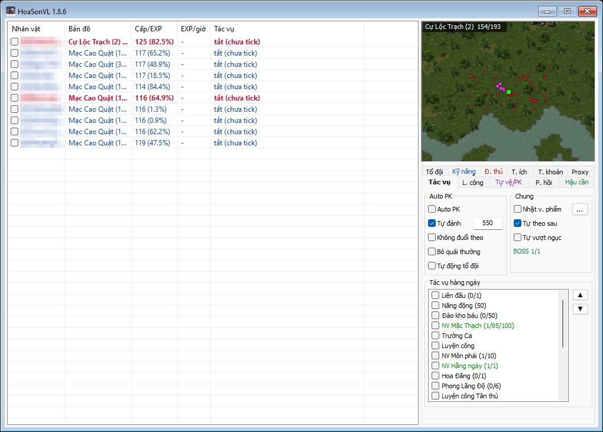
Giao diện rộng (bấm đúp thanh tiêu đề): bảng đầy đủ cột, bản đồ nhỏ, các tab ở bên phải.
Bảng liệt kê mọi nhân vật đang mở game trên máy, cả nhân vật bot đã biết mà chưa mở game (dòng "chưa mở game"), và nhân vật của các máy liên kết (dòng "tên @máy", xem Liên kết máy). Mỗi dòng cho biết nhân vật đang làm gì, ở bản đồ nào (kèm toạ độ như game), cấp, máu, tiền, số vé…
Màu chữ cho biết tình trạng: xanh dương là đang trong game; vàng sẫm là được tick mà đang đứng không có việc (hoặc đang tạm dừng); đỏ thẫm (đỏ rượu) là đội trưởng, hoặc nhân vật tick Đội trưởng ở tab Tổ đội (chữ đậm khi đang dẫn một đội); đỏ là game đã mở mà chưa vào game hoặc mất kết nối; đen là chưa mở game. Dòng của máy liên kết nằm trên nền xám nhạt, màu chữ như ở máy kia.
Tick ô vuôngBật / tắt bot cho nhân vật đó. Đây là công tắc quan trọng nhất. Bot nhớ các tick: mở lại bot thì nhân vật đã tick lần trước được tick lại. Tick dòng "@máy" là bật / tắt bot cho nhân vật đó ở máy kia.Bấm vào dòngChọn nhân vật để xem và sửa thiết lập ở các tab. Giữ Ctrl hoặc Shift để chọn nhiều nhân vật và sửa cùng lúc một ô (ví dụ bật Tự theo sau cho cả nhóm).Kéo thả dòngĐổi thứ tự nhân vật trong bảng.Bấm đúp vào dòngẨn hoặc hiện lại cửa sổ game của nhân vật đó (cửa sổ đang thu nhỏ thì hiện lên). Tiện khi chạy nhiều game mà màn hình chật. Game màn đen sau khi tắt / nối lại Remote Desktop (RDP) (game vẫn chạy, chỉ mất hình): bấm đúp dòng nhân vật đó, bot dựng lại hình cho game và hiện cửa sổ lên, không phải mở lại game. Làm được với mọi dòng, có tick hay không. Dòng "tên @máy": mở cửa sổ xem và điều khiển game đó ở máy liên kết; bấm đúp lần nữa để đóng (Xem game máy liên kết).Chuột phải vào tiêu đề cộtMở hộp "Tùy chọn hiển thị" để chọn cột nào hiện (ảnh bên dưới). Kéo tiêu đề cột để đổi chỗ, kéo mép để đổi rộng.Bấm đúp thanh tiêu đềChuyển sang giao diện rộng: bảng chiếm bên trái với đủ cột, bên phải là bản đồ nhỏ của nhân vật đang chọn (tên bản đồ và toạ độ ở góc trên; chấm xanh lá là mình, xanh lơ là nhân vật trong bot, hồng tím là người chơi khác, đỏ là quái, vàng là NPC) và các tab. Bấm đúp lần nữa để về cửa sổ hẹp.Cột Nhân vật"[1]Tên": số trong ngoặc là ô "Thuộc nhóm" ở tab T. khoản. Dòng máy liên kết thêm "@tên máy" phía sau.Cột Tác vụViệc bot đang làm, tóm tắt một dòng, ví dụ "luyện công", "mua thuốc", "theo sau X", "tắt (chưa tick)", hay bước đăng nhập đang tới.
Menu chuột phải vào dòng
Tác động lên các dòng đang chọn. Mục chữ xám là chưa dùng được với các dòng đang chọn, hoặc chưa có trong bản này. Chuột phải dòng "@máy" thì hiện menu riêng của máy liên kết (xem Liên kết máy).
Thêm..., XóaThêm...: thêm nhân vật chưa mở game (tên + môn phái) để đặt thiết lập trước hoặc cho bot tự đăng nhập. Xóa: bỏ nhân vật chưa mở game khỏi bot, cả thiết lập (hỏi trước).Lập chiến độiMenu con: lập chiến đội Trường Ca (tối đa 6 dòng), đội Hiệp Phong (chọn đúng 3 dòng), đội Ngũ Hành Trận (chọn đúng 5 dòng, tác vụ ở tab Tác vụ); với mỗi loại: làm đội trưởng, giải tán.Tìm trang bị..., Tìm vật phẩm..., Tìm trang bị (ingame)...Tìm trên các nhân vật được tick đang trong game, hoặc trên các sạp bot đã dạo (xem Tìm vật phẩm, trang bị bên dưới).Lưu / Đọc toàn bộ cấu hình...Như Xuất / Nhập thiết lập ở tab T. khoản: thiết lập của mọi nhân vật trong một tệp khoá bằng mật khẩu.Lưu cấu hình đã chọn..., Đọc cấu hình nhân vật...Chỉ thiết lập của các nhân vật đang chọn (bôi đen) vào một tệp .hsvl khoá bằng mật khẩu; đọc lại được ở máy khác. Đọc thì nhân vật chưa có trong bảng được thêm vào. Cũng là chỗ nạp tệp ChuyenThietLap.exe làm ra (tệp đó không cần mật khẩu).Xuất CSVXuất bảng ra tệp CSV (cả bảng hoặc các dòng đã chọn), đúng các cột đang hiện, mở được bằng Excel.Tùy chọn hiển thị..., Reset thống kêChọn cột hiện (như chuột phải tiêu đề cột). Reset thống kê (EXP, Thu nhập, Phù/Chết) cho các dòng đã chọn.Gán proxy, Hủy gán proxyGán một proxy trong danh sách ở tab Proxy cho các nhân vật đang chọn, hoặc bỏ.Đăng nhậpĐăng nhập (đã chọn), Đăng nhập nhân vật (chọn từng người), Đăng nhập tất cả (lần lượt từng người, cách nhau 2 giây): tick luôn các nhân vật đó và đăng nhập. Nhân vật có trong bảng của máy liên kết mà đang ngoài game ở đó thì có thêm Đăng nhập ở máy X (đã chọn): máy kia đăng nhập bằng tài khoản, proxy, game của chính nó.Hủy đăng nhập(đã chọn / tất cả) bỏ tick và thôi đăng nhập; nhân vật đang trong game thì rời trò chơi về màn hình đăng nhập (đăng nhập lại sau đó dùng chính game ấy, không mở game thứ hai).Thoát game(đã chọn / tất cả) bỏ tick và đóng game. Hủy đăng nhập tất cả và Thoát game hỏi trước.Nhật kýMở cửa sổ Nhật ký.
Các cột
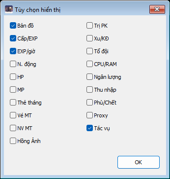
Tùy chọn hiển thị. Lần đầu dùng chỉ hiện Nhân vật, Bản đồ, Cấp/EXP, EXP/giờ, Tác vụ; các cột khác bật thêm ở đây.
Cột
Ý nghĩa
Bản đồ
Bản đồ đang đứng, kèm toạ độ như game.
Cấp/EXP
Cấp và phần trăm kinh nghiệm hiện có.
EXP/giờ
Kinh nghiệm kiếm được mỗi giờ trong ngày (sang ngày mới về 0; tắt mở lại bot hay đăng nhập lại vẫn giữ, lúc bot tắt không tính). Bấm tiêu đề cột để đổi sang EXP hôm nay (tổng kinh nghiệm kiếm được trong ngày) và ngược lại. Dùng để so bãi luyện công nào tốt hơn.
N. động
Điểm năng động hôm nay.
HP, MP
Máu và nội lực hiện có / tối đa.
Thẻ tháng, Vé MT, NV MT
Ngày thẻ tháng còn lại, số vé Mặc Thạch, tiến độ nhiệm vụ Mặc Thạch (đã làm / tổng).
Hồng Ảnh, Trị PK, Xu/KĐ
Thời gian Hồng Ảnh còn lại, điểm PK, xu và kim đỉnh.
Tổ đội
"đội trưởng" nếu nhân vật đang dẫn đội, không thì tên đội trưởng; trong ngoặc là số người trong đội.
Phù/Chết
Số lần về thành bằng phù và số lần chết trong ngày (sang ngày mới về 0, tắt mở lại bot vẫn giữ). Cột này tăng nhanh là bãi đang không an toàn.
Ngân lượng
Tiền trong hành trang cộng tiền trong rương, tính bằng vạn.
Thu nhập
Tiền kiếm được hôm nay (tính cả tiền trong rương), sang ngày mới về 0.
CPU/RAM, Proxy
Game đó đang tốn bao nhiêu máy (CPU, RAM, số khung hình mỗi giây, KB/s nhận ↓ / gửi ↑) và đi qua proxy nào, kèm tình trạng: ổn, chập chờn, LỖI, chờ đăng nhập, đang gắn. Có tên một chương trình proxy ngoài (như Proxifier) là chương trình đó cũng đang điều hướng game; "⚠ chồng" là nó chồng lên proxy của bot.
Tác vụ
Việc bot đang làm (xem trên).
Ô của dòng "@máy" do máy giữ nhân vật đó tính rồi gửi sang, vài giây một lần.
Nhật ký
Mở bằng chuột phải bảng nhân vật › Nhật ký. Bot ghi mọi việc nó làm vào thư mục log\ (mỗi ngày một tệp, giữ hai ngày gần nhất, mỗi dòng có giờ); cửa sổ này đọc và lọc các tệp đó, nên không cần tự mở tệp. Bot không giữ tệp nhật ký: chương trình khác chép hay gửi được ngay lúc bot đang chạy.
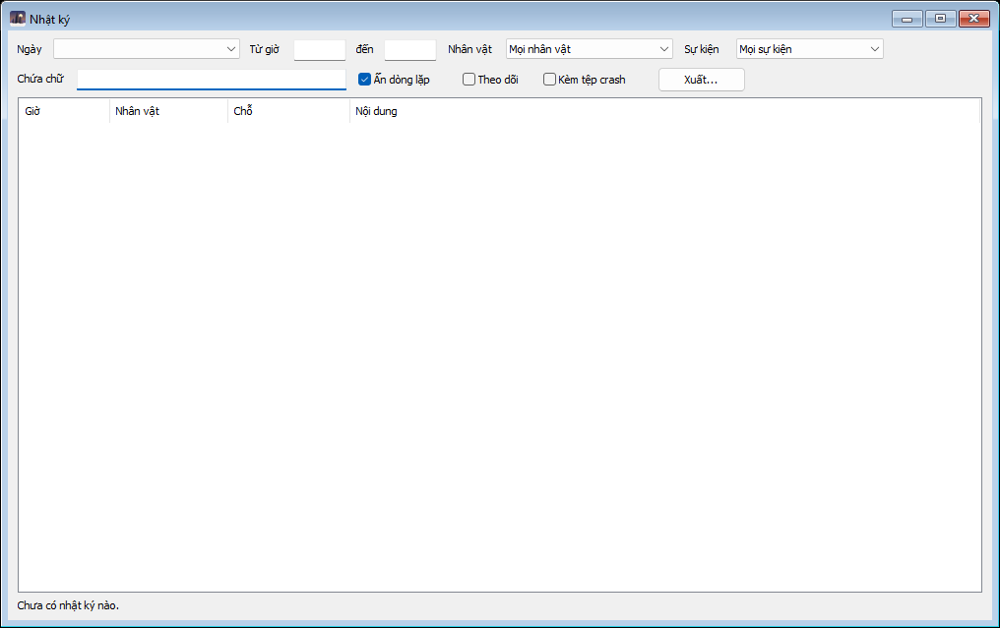
Cửa sổ Nhật ký. Bộ lọc ở trên, các dòng nhật ký ở dưới (cột Giờ, Nhân vật, Chỗ, Nội dung).
NgàyTệp nhật ký của ngày nào.Từ giờ … đếnKhoảng giờ cần xem, ví dụ 3:45 hoặc 0345. Để trống: từ đầu ngày / tới cuối ngày.Nhân vậtMọi nhân vật, một nhân vật, hoặc "Chung (không thuộc nhân vật nào)": dòng của chính bot (khởi động, cập nhật, liên kết…).Sự kiệnChỉ hiện một loại dòng: Sự cố, Chết, Đổi bản đồ, Về thành, Hậu cần, Cừu sát / tự vệ, Nhiệm vụ, Đăng nhập.Chứa chữMột phần nội dung, gõ không dấu cũng được.Ẩn dòng lặpDòng chỉ khác nhau ở con số (vị trí, khoảng cách…) thì chỉ hiện dòng đầu.Theo dõiTự thêm dòng mới và cuộn xuống cuối, xem bot đang làm gì ngay lúc này.Kèm tệp crashTệp xuất có thêm tệp ghi lại lần bot bị sập gần nhất, nếu có.Xuất...Ghi các dòng đang lọc (kèm dòng lỗi và dòng chung của bot) thành tệp nén trong userdata\nhatky\. Khi báo lỗi, gửi tệp này: lọc đúng nhân vật và khoảng giờ có chuyện là đủ.
Tìm vật phẩm, trang bị
Ba mục trong menu chuột phải bảng nhân vật. Kết quả hiện trong một cửa sổ riêng; bấm Tìm... để tìm lại với điều kiện khác.
Tìm vật phẩm...Gõ một phần tên (không cần dấu) vào ô Tên: bot liệt kê món đó ở các nhân vật được tick đang trong game (đang mặc, túi đạo cụ, túi hành trang, rương chính, rương 1–3) kèm số lượng, khoá, hạn dùng, vị trí.Tìm trang bị...Đặt tới 6 dòng thuộc tính với Min / Max (tick "Khớp thứ tự t. tính" nếu các dòng phải đúng thứ tự trên món), như Lọc kết hợp ở Nhặt vật phẩm; bot tìm trang bị khớp trên các nhân vật đó, kèm thuộc tính và vị trí.Tìm trang bị (ingame)...Cùng kiểu điều kiện, nhưng tìm trên các sạp bot đã dạo (NV Mặc Thạch), rẻ trước, kèm máy chủ, chủ sạp, giá, thuộc tính, nơi và lúc xem. Bấm đúp một dòng thì các nhân vật đang chọn (có tick, đang tạm dừng bằng Ctrl+Space, cùng máy chủ) đi tới sạp đó, không mua. Điều kiện tìm không giữ sau khi tắt bot.
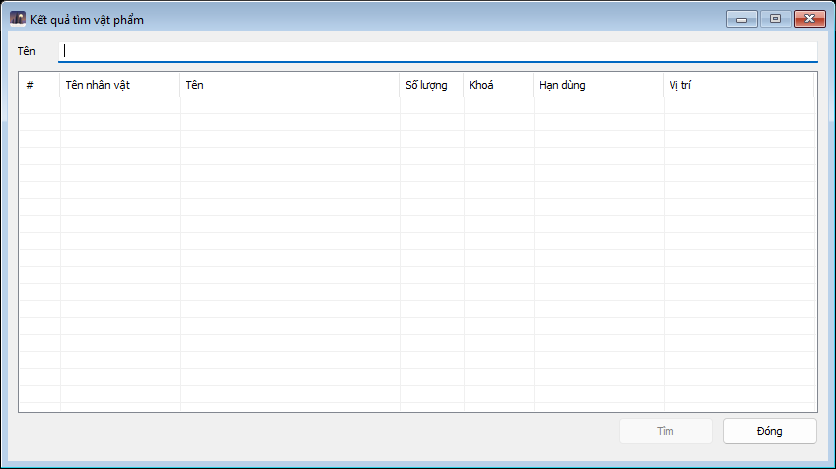
Kết quả tìm vật phẩm: ô Tên ở trên, cột Tên nhân vật, Tên, Số lượng, Khoá, Hạn dùng, Vị trí.
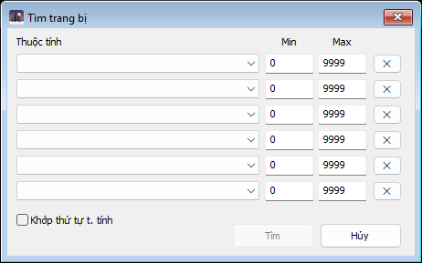
Điều kiện tìm trang bị: mỗi dòng một thuộc tính với Min / Max, nút × để xoá dòng.
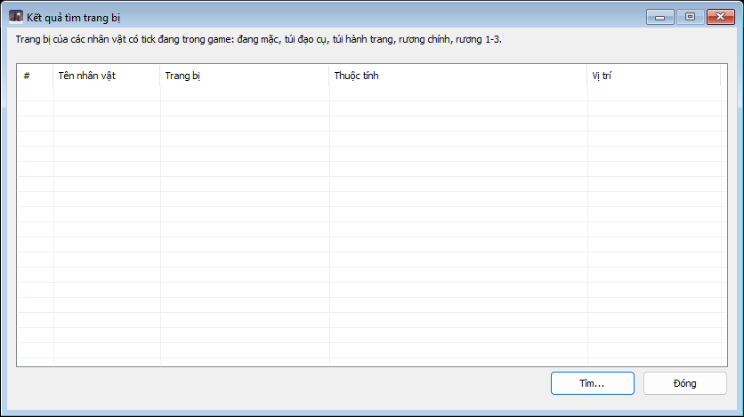
Kết quả tìm trang bị trên các nhân vật có tick đang trong game.
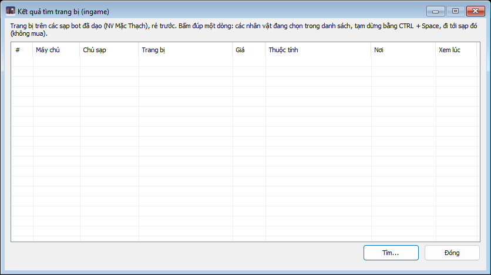
Kết quả tìm trang bị (ingame): trang bị trên các sạp bot đã dạo, rẻ trước.
Tab Tác vụ
Tab mở đầu (hàng trên, ô đầu tiên): chọn bot làm việc gì, theo thứ tự nào, và vài công tắc chung dùng cho mọi việc.
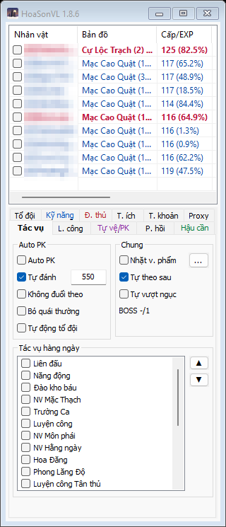
Tab Tác vụ (thiết lập mặc định).
Khung Auto PK
Dành cho lúc bạn tự cầm chuột đánh nhau (công thành, săn người, Tống Kim). Bật lên là bot dừng mọi tác vụ (việc đang làm cũng dừng): bạn tự đi, bot chỉ lo ra chiêu.
Auto PKBật chế độ đánh tay. Bot tự ra kỹ năng (tab Kỹ năng) lên đối thủ trong phạm vi Tự đánh, bạn tự di chuyển. Đánh được cả trong chiến trường Tống Kim. Cũng bật / tắt bằng Ctrl+P trong game.Tự đánh + sốTự ra chiêu lên người chơi ngoài đội (rồi tới quái, nếu không tick Bỏ quái thường) cách nhân vật trong khoảng này (pixel game). 550 (mặc định) là tầm vừa, 1250 là rất xa. Phím tắt Ctrl+F.Không đuổi theoĐối thủ chạy ra ngoài phạm vi thì thôi, không đuổi. Không tick: đuổi đối thủ đang đánh tới khi nó chết hoặc khuất. Phím tắt Ctrl+W.Bỏ quái thườngChỉ đánh người chơi và boss. Dùng khi PK ở bãi có quái để khỏi phí chiêu vào quái. Phím tắt Ctrl+N.Tự động tổ độiKhi đang Auto PK vẫn tự lập / vào đội theo tab Tổ đội.
Khung Chung
Nhặt v. phẩm + "…"Tự chạy tới nhặt tiền và đồ rơi quanh mình, rồi lọc trang bị nhặt được theo luật đặt ở nút "…" bên cạnh (xem mục Nhặt vật phẩm & lọc đồ). Dùng chung cho luyện công, Auto PK và các tác vụ. Phím tắt Ctrl+A.Tự theo sauĐi theo đội trưởng hoặc người trong danh sách Theo sau (tab Tổ đội). Chỉ theo khi đang Luyện công hoặc Auto PK; ở chiến trường Tống Kim cần bật Auto PK. Không theo khi đang chờ trận Liên đấu (Hội trường / Hậu trường) và trong đấu trường; bật Auto PK thì rời Hội trường đi theo. Phím tắt Ctrl+E.Tự vượt ngụcBị nhốt vào ngục vì PK thì tự hối lộ Lao Đầu để ra (Đại lao tốn 100.000 lượng, thiếu thì rút rương) rồi làm tiếp việc đang làm. Không tick: đứng trong ngục chờ mãn hạn.BOSS -/1Không phải ô bấm: cho biết nhân vật đang chọn ở bảng nhân vật đã lấy điểm Boss hôm nay chưa (mục Boss của Năng động, 10 điểm). Đọc từ game; "-" là chưa đọc được (nhân vật chưa vào game), chữ chuyển xanh khi đã xong (1/1). Muốn bot tự đi lấy: tác vụ Săn boss.
Bản 1.5.6 đã bỏ hai ô Nhịp quét và Nhịp PK: bot tự tính nhịp.
Khung Tác vụ hàng ngày
Danh sách mọi việc bot làm được. Tick việc muốn làm, chọn một dòng rồi bấm ▲ ▼ bên phải để đổi thứ tự. Chuột phải một dòng (trừ Luyện công) để mở hộp thiết lập riêng của việc đó (mục kế tiếp).
Dòng có số đếm của game thì ghi kèm số đã làm hôm nay, ví dụ "NV Môn phái (4/10)", "Đánh Tống Kim (1/3)", "NV Mặc Thạch (hôm nay/tuần/giới hạn tuần)"; đủ số thì dòng chuyển chữ xanh. Trong mùa Chiến Lệnh dòng Chiến lệnh hiện gọn "C.lệnh (TK: x/3 - MT y/10 - PLD: z/1)". Các số này là của nhân vật đang chọn ở bảng nhân vật.
Danh sách là luật cố định: việc ở trên làm trước việc ở dưới. Luyện công chạy suốt ngày đêm và không bao giờ dừng để làm việc nằm dưới nó, kể cả khi đang đứng đúng bản đồ của việc đó. Muốn đang luyện công vẫn đi Liên đấu, Tống Kim, nhiệm vụ… đúng lúc thì kéo các dòng đó lên trên Luyện công. Tác vụ mới có ở bản cập nhật được thêm vào cuối danh sách (dưới Luyện công): nhớ kéo lên nếu muốn dùng.
Đang Auto PK thì không tác vụ nào chạy (kể cả chuyến về thành lưu rương), trừ Hiệp Phong khi nhân vật đã ở phòng chờ. Tắt Auto PK là các tác vụ chạy lại.
Trong những việc trên Luyện công, việc nào đang có việc để làm (tới giờ Liên đấu, chưa làm Hằng ngày hôm nay…) thì làm trước. Việc theo giờ (Liên đấu, Tống Kim…) đã vào bản đồ của nó thì không bị việc khác cắt ngang; nhiệm vụ có thể nhường cho việc theo giờ nằm trên nó, lần sau đọc lại bước đang làm từ game rồi làm tiếp.
Tác vụ (thứ tự mặc định)
Bot làm gì
Liên đấu
Ngày 1-20 hằng tháng, từ 19:00: tới Sứ Giả Liên Đấu (Đại Lý hoặc Dương Châu), mua thuốc, báo danh từng lượt, vào trận và đánh. Mỗi tháng tự hỏi là đơn đấu hay song đấu; song đấu thì tự lập / ghép chiến đội. Xem mục Liên đấu.
Năng động
Làm các hoạt động được tick trong hộp riêng để lấy điểm năng động; tick Giới hạn năng động thì đủ điểm là thôi.
Đào kho báu
Dùng Tàng Bảo Đồ trong túi (thiếu thì mở Túi Thần Bí), nhờ Phó Lôi Thư ở Long Tuyền Thôn giám định (2 vạn mỗi tấm), rồi đi tới chỗ đào và đào. Đào đủ số tấm thì xong hôm nay; dừng vì lý do khác (hết Túi Thần Bí, thiếu tiền, túi đầy, chỗ đào không tới được) thì 10 phút sau xét lại.
NV Mặc Thạch
Nhận, làm và trả nhiệm vụ Mặc Thạch; trang bị cần nộp lấy ở túi / rương, mua ở NPC / sạp người chơi, hoặc rèn. Tự chia số nhiệm vụ cho các ngày trong tuần.
Trường Ca
Cả chiến đội (tối đa 6) vào Trường Ca Sơn Trang luyện công kinh nghiệm cao. Lập chiến đội từ bảng nhân vật. Xem mục Trường Ca.
Luyện công
Đánh quái theo tab L. công; về thành mua thuốc, sửa đồ khi cần rồi quay lại bãi. Không có hộp riêng, không có hẹn giờ.
NV Môn phái
Nhận, làm và trả nhiệm vụ môn phái trong ngày (dòng ghi số đã làm / 10).
NV Hằng ngày
Nhận nhiệm vụ ở Long Nhi, làm và trả (mỗi ngày một). Nhiệm vụ nộp trang bị: lấy ở túi / rương, mua ở sạp người chơi, chưa có thì luyện công nhặt.
Hoa Đăng
Từ 19:00 tới 23:00: tới đèn Hoa Đăng Huy Hoàng (Hoa Sơn, Vũ Lăng Sơn hoặc Nhạn Đãng Sơn; mỗi nhân vật luôn một nơi, không thấy đèn thì sang nơi khác) và trả lời câu đố tới khi xong lượt hôm nay. Câu chưa biết thì chọn đáp án chưa từng sai, rồi nhớ đáp án đúng / sai cho mọi nhân vật.
Phong Lăng Độ
Đi mọi chuyến thuyền trong hẹn giờ (10:00, 13:00, 16:00, 19:00, 21:00, 23:00; lên thuyền từ HH:00 tới HH:10): mua thuốc nếu thiếu, tới bến, gặp Thuyền Phu, đến giờ thì lên thuyền, luyện công quanh boong tới khi cập bờ, rồi về thành lưu rương lại. Dòng ghi số chuyến đã đi hôm nay / 6.
Luyện công Tân thủ
Cho nhân vật mới (dưới cấp 60): làm chuỗi nhiệm vụ tân thủ của Bao Thập Bát (cấp 10 vào môn phái đã chọn), tự chọn bãi theo cấp, tự cộng điểm, tự mặc đồ, tự lập đội. Phải chọn môn phái - nhánh trong hộp riêng thì mới chạy. Chỉ tick được một trong hai: Luyện công hoặc Luyện công Tân thủ; tick cái này thì cái kia tự bỏ tick.
Bán hàng
Bày sạp bán đồ trong túi đạo cụ ở chỗ đã đặt; vơi hàng thì thu sạp, lấy thêm trang bị từ rương hoặc rèn, rồi bày lại. Xem mục Bán hàng.
Chiến lệnh
Làm nhiệm vụ ngày của Chiến Lệnh bằng các tác vụ bot có: Tống Kim báo danh đủ 3 trận, Phong Lăng Độ 1 chuyến trọn, NV Mặc Thạch 10 mỗi ngày (thứ 2 thêm 30). Ngoài mùa Chiến Lệnh thì không làm gì.
Nhận thưởng Thẻ tháng
Tới Lễ Quan gần nhất nhận thưởng thẻ tháng. Có tick Ghép r. Thiên Công (tab T. ích) và đủ 5 lệnh thì ghép rương luôn tại Lễ Quan đó.
Nhận buff Bang hội
Vào lãnh địa bang, gặp Tổng Quản Thí Luyện Phường (tăng EXP) và Tổng Quản Thiên Công Phường (ưu đãi tu sửa, chế tạo) nhận buff. Không có bang hoặc công trình chưa xây thì thôi.
Hít lửa trại
Đứng ở khu vực bang lúc có lửa trại. Mặc định có Hẹn giờ 23:30-23:45; bỏ tick Hẹn giờ thì đứng ở khu vực bang cả ngày thứ 4 và thứ 7.
Cấm Địa Phái
Thứ Năm và Chủ nhật, 20:15-21:00: tới Quản Sự môn phái, mua thuốc, vào Cấm Địa, đánh Trưởng Lão, mở Rương Ngẫu Nhiên (game chỉ cho người lọt top 30 sát thương), nhận thưởng ở Rương Vượt ải. Game báo chưa đủ 2800 danh vọng thì thôi hôm đó.
Hiệp Phong
Hiệp Phong Luận Kiếm 3 đấu 3, thứ Hai và thứ Ba từ 20:15 (thứ Năm nếu tick Đi Tranh Bá), nhân vật cấp 100 trở lên: thay đồ PvP, Hậu cần, báo danh một mình hoặc cả đội 3 nhân vật trong bot, vào trận và đánh. Xem mục Hiệp Phong.
Đánh Tống Kim
Các trận đã tick (13:30, 20:00, 22:15): báo danh rồi ở lại chiến trường đánh tới hết trận. Dòng ghi số trận đã ra đánh hôm nay / số trận tick. Xem mục Đánh Tống Kim.
Ngũ Hành Trận
Thứ Ba và thứ Năm (10-12h, 17-19h, 21-23h): đội đúng 5 nhân vật trong bot cấp 110 trở lên tập trung, vào trận, phá từng trận, đánh boss, né chiêu. Hết lượt tự rời đội, giải tán đội và bỏ tick. Xem mục Ngũ Hành Trận.
Săn boss
Tới chỗ boss Hoàng Kim ra trước giờ, đánh các boss đã tick theo khung giờ (hoặc chỉ đứng gần để lấy điểm năng động "BOSS"). Xem mục Săn boss.
Không còn dòng Tống Kim (BD) (bỏ từ bản 1.6.0 vì trùng việc với Đánh Tống Kim): việc "báo danh, vào trận rồi ra" nay bật bằng ô Tống Kim trong hộp Chiến lệnh hoặc Năng động, dùng chung Bên báo danh, Hẹn giờ, Lệch của dòng Đánh Tống Kim. Thiết lập cũ được tự chuyển sang.
Một số việc mỗi ngày không nằm trong danh sách này mà là ô ở tab T. ích: N. thưởng năng động, Điểm danh ngày, N.thưởng Chiến lệnh, Nhận thưởng CTC, Ghép r. Thiên Công, Tự đọc thư, Quyên góp bang hội, Nhận trang bị Đấu Trường, Rèn, Chia sẻ v. phẩm NV… Các ô đó chạy xen giữa các tác vụ, không cần tick dòng nào ở đây.
Hộp riêng của từng tác vụ (chuột phải vào dòng)
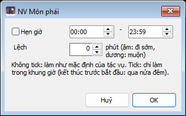
Hẹn giờ (ví dụ NV Môn phái). Tác vụ không có thiết lập riêng mở hộp này.
Hẹn giờ
Không tick: bot làm tác vụ theo giờ mặc định của nó (cả ngày, hoặc giờ mở của sự kiện). Tick: chỉ làm trong khung giờ đã đặt; giờ kết thúc nhỏ hơn giờ bắt đầu nghĩa là qua nửa đêm.
Ô Lệch (-30 đến 30 phút) cho mỗi nhân vật đi sớm hay muộn vài phút để nhiều nhân vật không cùng xếp hàng một lúc (âm là đi sớm, dương là muộn). Ô này có ở:
Tác vụ có giờ mở: Đánh Tống Kim, Liên đấu (hai tác vụ này mặc định -1: đi sớm 1 phút), Hoa Đăng, Phong Lăng Độ, Hít lửa trại (dời giờ bắt đầu), Cấm Địa Phái, Hiệp Phong, Ngũ Hành Trận, Săn boss.
Tác vụ sang ngày mới lúc 0 giờ: NV Môn phái, NV Hằng ngày, NV Mặc Thạch, Nhận thưởng Thẻ tháng. Ở nhóm này Lệch dương là chờ thêm từng ấy phút sau 0 giờ (máy chủ hay lag lúc đó), Lệch âm không có tác dụng.
Không có Hẹn giờ: Luyện công (chạy suốt), Năng động và Chiến lệnh (mỗi việc theo hẹn giờ của dòng cùng tên), Luyện công Tân thủ. Trường Ca và Bán hàng có Hẹn giờ nhưng không có Lệch.
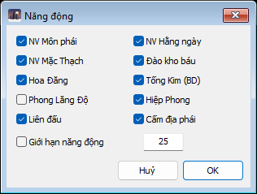
Năng động (mặc định).
Năng động
Tick những hoạt động bot được dùng để kiếm điểm năng động: NV Môn phái, NV Hằng ngày, NV Mặc Thạch, Đào kho báu, Hoa Đăng, Tống Kim (BD), Phong Lăng Độ, Hiệp Phong, Liên đấu, Cấm địa phái (mặc định tick tất cả trừ Phong Lăng Độ). Giờ giấc của từng hoạt động lấy theo hẹn giờ của tác vụ cùng tên; Tống Kim (BD) là báo danh, vào trận rồi ra, theo thiết lập của dòng Đánh Tống Kim.
Giới hạn năng động + số (mặc định không tick, 25): tick thì đủ số điểm này là tác vụ coi như xong hôm nay. Không tick: làm hết các hoạt động đã tick.
Phong Lăng Độ trong Năng động: một chuyến mỗi ngày; thuyền chạy (được +5 điểm) thì bot thoát game rồi vào lại (cần tài khoản ở tab T. khoản, không có thì ở lại tới bờ), về Tây Sơn Thôn rồi về thành lưu rương lại (trong Tây Sơn Thôn game cấm dùng phù: bot ra ngoài rồi mới dùng Thần Hành Phù / Tiêu Dao Phù; nhân vật có bang thì đi qua lãnh địa bang khi rẻ hơn). Tick thêm tác vụ Phong Lăng Độ thì đi trọn mọi chuyến; Chiến lệnh còn thiếu chuyến trọn hôm nay thì cũng ở lại tới bờ.
Ví dụ: tick Môn phái, Hằng ngày, Mặc Thạch, tick Giới hạn 25: bot làm ba nhiệm vụ cho tới khi được 25 điểm rồi chuyển sang việc khác trong danh sách.
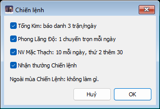
Chiến lệnh.
Chiến lệnh
Chọn các nhiệm vụ ngày của Chiến Lệnh mà bot làm bằng tác vụ sẵn có (mặc định tick cả bốn ô). Không có hẹn giờ riêng. Ngoài mùa Chiến Lệnh: không làm gì.
Tống Kim: báo danh 3 trận/ngàyBáo danh, vào trận rồi ra ở cả 3 trận (13:30, 20:00, 22:15). Trận nào có đi Đánh Tống Kim thì đánh luôn trận đó. Bên báo danh, Hẹn giờ, Lệch: của dòng Đánh Tống Kim.Phong Lăng Độ: 1 chuyến trọn mỗi ngàyLên thuyền và đánh tới khi cập bờ, không thoát game giữa chuyến. Theo Hẹn giờ và Bến thuyền của dòng Phong Lăng Độ; chết dọc đường thì chuyến sau đi lại.NV Mặc Thạch: 10 mỗi ngày, thứ 2 thêm 30Cho nhiệm vụ ngày "Hôm nay hoàn thành 10 NV Mặc Thạch" và mốc tuần: thứ 2 làm 40, các ngày sau 10, ngày lỡ thì làm bù; luôn giữ 1 nhiệm vụ cho mỗi ngày còn lại của tuần. Thay ô "Chỉ làm khi số nhiệm vụ còn lại" của NV Mặc Thạch.Nhận thưởng Chiến lệnhNhận điểm nhiệm vụ đã xong và quà theo cấp. Cùng một ô với "N.thưởng Chiến lệnh" ở tab T. ích.
Các việc này chạy ở vị trí dòng Chiến lệnh trong danh sách tác vụ (hoặc ở dòng riêng của chúng nếu dòng đó cao hơn). Chiến lệnh nằm dưới Luyện công thì không bao giờ chạy.
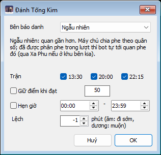
Đánh Tống Kim.
Đánh Tống Kim
Báo danh rồi đánh trọn trận trên chiến trường. Đã vào bằng tác vụ này thì đánh tới hết trận dù quá hẹn giờ; hết trận game tự đưa ra, bot ghi trận đó là xong, không báo danh lại, rồi làm việc khác. Chạy cả khi bật hay tắt Auto PK.
Bên báo danhNgẫu nhiên, Phe Kim hoặc Phe Tống. Ngẫu nhiên là tới quan gần hơn; máy chủ chia phe theo quân số, nhân vật đã được xếp phe trong lượt này thì bot tự tới đúng quan phe đó (qua Xa Phu nếu ở khu bên kia). Dùng chung cho việc báo danh của Chiến lệnh và Năng động.TrậnBa ô 13:30, 20:00, 22:15 (mặc định tick cả ba). Bỏ tick: không đánh trận đó (Chiến lệnh có tick Tống Kim thì vẫn báo danh rồi ra).Giữ điểm khi đạt + sốĐiểm của mình trên bảng chiến báo từ số này trở lên (mặc định 50): lui về Nguyên Soái phe mình giữ điểm; địch đông, đánh không nổi thì vào khu an toàn 5 giây rồi ra lại. Chết tụt dưới mốc thì ra đánh lại như thường.Hẹn giờ, LệchNhư mục Hẹn giờ ở trên; Lệch mặc định -1.
Đánh Tống Kim: trên chiến trường
Chọn phe: Bên báo danh Ngẫu nhiên thì bot tới quan của phe mà phần đông nhân vật trong bot đang ở trong trận, chờ cân phe tới khi trận chỉ còn 10 phút (vào giữa trận vẫn được); không vào được thì vào phe game chia. Nhân vật trong bot ở phe kia bị đánh như người chơi thường.
Thay đồ: tick ô Thay đổi t. bị (nhóm Hành trang, tab Hậu cần) thì mặc bộ PvP ngay ở điểm báo danh hoặc trong trại (chỉ dùng đồ trong túi đạo cụ / túi hành trang).
Ra trận: lúc còn báo danh (chưa khai chiến) thì chờ trong trại. Mở trận thì ra theo một cánh tới phía trại địch, đánh lính NPC và người chơi phe địch dọc đường. Các nhân vật trong bot cùng phe đi chung một cánh, mỗi người tự tiến, đánh, lùi. Gặp quân ta mà có địch thì đứng cùng (đánh xa đứng trong nhóm quân ta, cận chiến đứng mép trước); cuối cánh 10 giây không gặp ai thì về giữa cánh rồi tiến lại. Game báo Quân Kỳ xuất hiện thì tới đánh khi quân ta không ít hơn quân địch.
Né, lùi: đang đứng chờ mà bị người chơi phe địch ra chiêu thì né một bước sang bên. Quanh mình địch đông hơn ta, đội địch lớn kéo tới, máu dưới 35%, hoặc một mình gặp địch cận chiến: lùi từng đoạn về phía quân ta / Nguyên Soái rồi xét lại; đang lùi mà bị đánh khựng thì dùng Khinh công. Bị dồn về chỗ Nguyên Soái phe mình thì đánh tới cùng; máu thấp ở đó thì vào trại.
Hết bình: về trại qua lối vào ít địch nhất, tới Quân Nhu Quan: nhận Hiệu ứng Hành Quân Đơn miễn phí trước (ô Nhận thuốc m. phí, nhóm PK của tab Tự vệ/PK), mở túi thuốc, rồi mua theo dòng Mua thuốc của Hậu cần. Hành Quân Đơn hồi cả máu lẫn nội lực nên dùng trước cho cả hai. Chờ ở Quân Nhu Quan mà không mua được thì ra đánh, lát sau mới về lấy lại.
Chết: hồi ở trại rồi ra lại. Nhân vật cuối cùng của phe trên cánh đó chết hoặc bị đẩy về Nguyên Soái thì lần ra sau đổi sang cánh kia.
Người chơi cầm chuột: bot vẫn ra chiêu, uống thuốc, lùi ngay; chỉ những lúc tự đi (ra trại, theo cánh, về Nguyên Soái) mới chờ bạn buông chuột.
Kỹ năng, Mở túi thuốc, Mua thuốc: dùng các dòng có Hoạt động "Tống Kim"; không có thì dùng dòng Auto PK (Mua thuốc không có dòng Tống Kim / Auto PK / Không giới hạn thì dùng dòng Luyện công).
Đào kho báu, Phong Lăng Độ
Hộp Hẹn giờ, thêm vài ô ở trên.
Số lần trong ngàyĐào kho báu: số tấm Tàng Bảo Đồ đào mỗi ngày (game cho tối đa 50).Số tiền giữ lại (vạn)Đào kho báu: tiền (túi + rương) giữ lại cho việc khác. Mỗi tấm giám định tốn 2 vạn; bot chỉ đào số tấm mà tiền trên mức này đủ trả.Bến thuyềnPhong Lăng Độ: Bến 1 (Thuyền Phu Giáp) và Bến 2 (Ất) có boss Thủy Tặc; Bến 3 (Bính) không có boss. Ngẫu nhiên: mỗi nhân vật luôn đi một bến theo tên. Thuyền đầy hoặc bị từ chối thì sang bến kế.
Thuyền chỉ cho lên từ HH:00 tới HH:10. Muốn tới bến sớm rồi đứng chờ cạnh Thuyền Phu thì đặt Lệch âm (ví dụ -10).
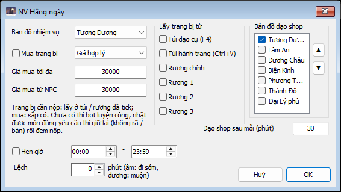
NV Hằng ngày.
NV Hằng ngày
Bản đồ nhiệm vụThành gặp Long Nhi nhận / trả nhiệm vụ. Tương Dương nhiều người bày bán, dễ mua trang bị cần nộp.Mua trang bịNhiệm vụ đòi nộp trang bị mà túi / rương đã tick không có: dạo sạp người chơi ở các Bản đồ dạo shop (như NV Mặc Thạch), mua món đúng loại, đúng cấp, không quá Giá mua tối đa. "Giá hợp lý": mua ở sạp đầu tiên có món; "Giá rẻ nhất": dạo hết rồi mua chỗ rẻ nhất. Giá mua từ NPC chưa dùng cho NV Hằng ngày. (Dòng chữ xám trong hộp còn ghi "mua: sắp có" là chữ cũ, mua ở sạp đã chạy từ bản 1.6.0.)Lấy trang bị từNgoài túi đạo cụ (luôn tìm), lấy món cần nộp ở những nơi được tick: Túi hành trang (Ctrl+V), Rương chính, Rương 1-3 (rương mua thêm: nhân vật nào có mới dùng được). Mọi trang bị ở nơi được tick cũng có thể chia cho nhân vật khác đang thiếu (Chia sẻ v. phẩm NV). Ô Túi đạo cụ (F4): tick thì mọi trang bị trong túi đạo cụ đều chia được; không tick thì chỉ chia món nhặt nhờ luật "Trang bị nhiệm vụ". Một thiết lập chung cho NV Hằng ngày và NV Mặc Thạch.Bản đồ dạo shop, Dạo shop sau mỗi (phút)Các thành đi dạo sạp, theo thứ tự (▲ ▼), chỉ thành được tick; cách bao lâu mới dạo lại (mặc định 30 phút).
Vẫn chưa có món đúng yêu cầu thì bot đi luyện công và nhặt đồ; nhặt được món phù hợp thì giữ lại (không rã, không bán) để đem nộp. Luật Lọc trang bị đứng trên hết: món đạt một dòng / bộ lọc đang bật (trừ dòng gắn nhãn "Trang bị nhiệm vụ") là đồ bạn giữ, không bị đem nộp, không bị chia cho nhân vật khác; riêng món bot mua ở sạp để trả nhiệm vụ thì nộp được.
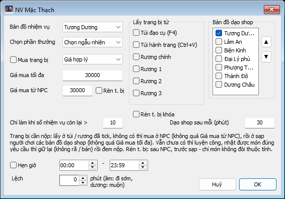
NV Mặc Thạch.
NV Mặc Thạch
Giống NV Hằng ngày (Bản đồ nhiệm vụ là thành gặp Mặc Thạch), thêm:
Mua trang bịKhông có món cần nộp ở túi / rương đã tick thì mua ở NPC (không quá Giá mua từ NPC); tick ô này thì còn mua ở sạp người chơi (không quá Giá mua tối đa). Không mua trùng món khi game chậm cập nhật túi.Chọn phần thưởngPhần thưởng chọn khi trả nhiệm vụ (#1, #2, #3), hoặc Chọn ngẫu nhiên.Rèn t. bị / Rèn t. bị khóaMón cần nộp không đòi thuộc tính: rèn ở thành bằng Mảnh Trang Bị không khóa (tối đa 3600 lượng mỗi lần) tới khi ra món đúng hệ (món khác: bộ lọc rã / giữ); thứ tự: sau NPC, trước sạp. Mảnh lấy ở túi đạo cụ, rồi ở túi hành trang (Trợ Thủ Kiếm Hiệp của game hay tự cất mảnh vào đó) và rương; chỉ khi không có ở đâu mới xin nhân vật khác trong bot nguyên một chồng 4000 (Chia sẻ v. phẩm NV), trong lúc chờ thì đi dạo sạp. Rèn t. bị khóa: rèn cả trang bị đã khóa.Chỉ làm khi số nhiệm vụ còn lại >Số nhiệm vụ còn lại trong tuần (đếm lại từ thứ Hai) phải lớn hơn số này (mặc định 10) mới làm tiếp, để dành cho các ngày sau. Hôm nay chưa làm thì vẫn làm 1 (được 10 điểm năng động); Chủ nhật làm hết. Giới hạn tuần đọc từ game: 75 nhiệm vụ, 100 nếu nhân vật có thẻ tháng. Khi tác vụ Chiến lệnh được tick (trong mùa) và có tick ô NV Mặc Thạch của nó thì lịch của Chiến lệnh thay ô này.
Không bao giờ bấm "Hủy Nh.vụ" của Mặc Thạch trong game. Hủy là mất cả chuỗi 25 nhiệm vụ, tức mất một vé Mặc Thạch. Bot cũng không bao giờ hủy.
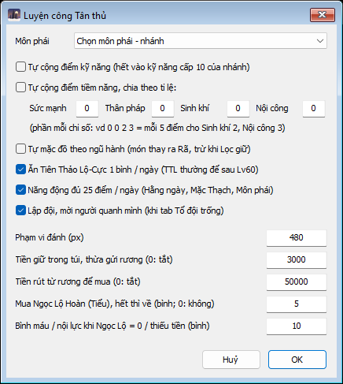
Luyện công Tân thủ (mặc định).
Luyện công Tân thủ
Để một nhân vật vừa tạo tự lớn mà không cần đặt lộ trình hay kỹ năng. Không có hẹn giờ.
Môn pháiChọn một dòng "môn phái - nhánh". Bắt buộc: chưa chọn thì tác vụ không chạy. Nhân vật vào môn phái này ở cấp 10 (môn phái phải hợp hệ và giới tính của nhân vật); nhánh quyết định kỹ năng bot dùng để đánh.Tự cộng điểm kỹ năngDồn hết điểm kỹ năng vào kỹ năng cấp 10 của nhánh.Tự cộng điểm tiềm năngChia theo tỉ lệ bốn ô Sức mạnh, Thân pháp, Sinh khí, Nội công. Ví dụ 0 0 2 3: cứ 5 điểm thì 2 vào Sinh khí, 3 vào Nội công.Tự mặc đồ theo ngũ hànhNhặt được đồ tốt hơn thì mặc ngay, món thay ra đem Rã (trừ khi Lọc trang bị giữ). Vũ khí: Thiên Vương ưu tiên Hút sinh lực, nhánh ngoại công của phái khác ưu tiên Hút nội lực. Nhân vật không chạy Tân thủ thì dùng ô cùng tên ở tab T. ích.Ăn Tiên Thảo Lộ-Cực, Năng động đủ 25 điểmMỗi ngày ăn 1 bình Tiên Thảo Lộ-Cực (Tiên Thảo Lộ thường để sau cấp 60). Xong chuỗi tân thủ thì mỗi ngày làm Hằng ngày, Mặc Thạch, Môn phái cho đủ 25 điểm năng động (trừ khi bạn tự tick tác vụ Năng động).Lập đội, mời người quanh mìnhTab Tổ đội để trống thì tự lập đội, mời mọi người quanh mình và nhận người xin vào. Dù không tick ô này: các nhân vật trong bot đang làm chuỗi tân thủ trên cùng bản đồ tự vào chung một đội; lúc luyện công mà đang ở đội có đội trưởng là nhân vật trong bot thì đi theo sau đội trưởng đó.Phạm vi đánh (px)Đánh quái trong phạm vi này tính từ các điểm của bãi (mặc định 480). Bãi không có điểm (luyện cả bản đồ): không giới hạn.Tiền giữ, tiền rút, Ngọc Lộ Hoàn, bình máuGiữ bao nhiêu tiền trong túi (thừa gửi rương), rút bao nhiêu từ rương để mua, mua bao nhiêu Ngọc Lộ Hoàn (Tiểu) (hết thì về thành), và mua bao nhiêu bình máu / nội lực khi không có Ngọc Lộ Hoàn hoặc thiếu tiền. Số 0 là tắt.
Bãi bot tự chọn theo cấp: dưới 15 bãi của thôn gần nhất; 15-19 bãi quái gần thành / thôn, chọn nơi đi tới rẻ nhất; 20-24 Hoa Sơn; 25-29 Cái Bang; 30-39 Tần Lăng; 40-49 Tây Phục Ngưu Sơn hoặc Hoàng Hà Nguyên Đầu; 50-59 Lưu Tiên Động, không tới được thì Thiên Tâm Động (hệ Hỏa: Thiên Tâm Động trước).
Trong lúc chạy, bot tự bật cho nhân vật này (không ghi vào thiết lập): Tự đọc thư, N. thưởng năng động, Điểm danh ngày, N.thưởng Chiến lệnh, tác vụ Nhận thưởng Thẻ tháng, sửa trang bị khi về thành, sửa trên bãi (mức % ở Hậu cần; thiếu tiền thì về thành sửa) và về thành khi độ bền thấp, nhặt tiền; về thành bằng Thổ địa phù khi máu dưới 30% (mốc của bạn trong khoảng 30-40% thì giữ nguyên).
Săn boss
Tác vụ mới từ bản 1.8.0: đúng khung giờ boss Hoàng Kim ra, bot tới bãi trước, chờ, rồi đánh boss theo danh sách bạn chọn; hoặc chỉ đứng gần để lấy điểm năng động "BOSS" (10 điểm, dòng BOSS ở khung Chung). Dòng tác vụ ghi "Săn boss (1/1)" khi game đã tính điểm Boss hôm nay.
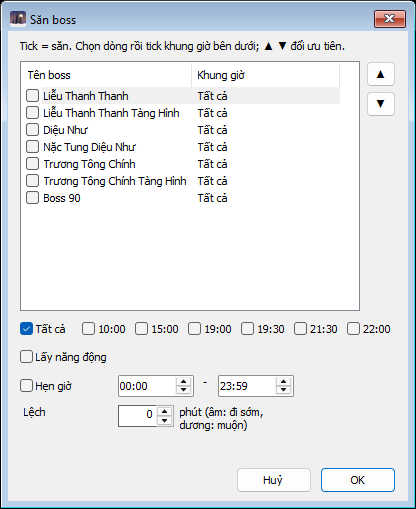
Chuột phải dòng Săn boss.
Danh sách bossTick boss muốn săn. Các dòng: Liễu Thanh Thanh, Liễu Thanh Thanh Tàng Hình, Diệu Như, Nặc Tung Diệu Như, Trương Tông Chính, Trương Tông Chính Tàng Hình và Boss 90. Thứ tự là ưu tiên: chọn dòng rồi bấm ▲ ▼; boss ở trên được xét trước.Boss 90Các boss cấp 90 ra chỗ ngẫu nhiên nên gộp thành một dòng (bản 1.8.1): khớp mọi thông báo boss 90 của khung giờ đó. Không có chỗ chờ sẵn: chưa có thông báo thì nhân vật làm việc khác, có thông báo mới đi.Khung giờChọn một dòng boss rồi tick khung giờ bên dưới cho dòng đó: 10:00, 15:00, 19:00, 19:30, 21:30, 22:00. Tất cả (mặc định) = đúng các khung boss đó thật sự ra: boss 50 lúc 10:00, 15:00, 19:00, 22:00; boss 70 (Tàng Hình, Nặc Tung) lúc 10:00, 15:00, 19:30, 21:30; boss 90 lúc 19:30, 21:30.Lấy năng độngKhông đánh boss: đứng cách boss 400-500 px; có người chơi địch (quan hệ thù địch) thì né, chạy quanh chỗ boss. Game đã tính điểm "BOSS" hôm nay (có mặt trên bản đồ khi boss chết) thì không đi nữa; hụt thì đi boss báo khác hoặc khung giờ sau. Không tick: đánh boss.Hẹn giờ, LệchNhư các tác vụ khác. Lệch dời lúc đi và lúc chờ, thông báo boss vẫn được nhận đúng.
Một khung giờ diễn ra thế nào
Tới trước giờ. 3 phút trước mỗi khung (cộng Lệch), bot tới chỗ ra đầu tiên của boss được tick đầu tiên có khung đó, đứng chờ (không đánh quái thường) tới mốc + 5 phút.
Có thông báo. Game báo boss đã tick xuất hiện thì tới đúng toạ độ báo (boss ở trên danh sách trước; boss có hai bản Giáp / Ất thì xét cả hai). Tới nơi không còn boss: thôi boss đó, sang boss báo tiếp theo.
Chọn chỗ đông người. Khung có hai thông báo của cùng một dòng (cặp Giáp / Ất, hai boss 90): bot tới con đầu, đứng cạnh boss 3 giây đếm người chơi quanh boss; hơn 15 người thì ở lại đánh, không thì sang xem con kia; xem hết mà không chỗ nào hơn 15 thì về chỗ đông nhất và ở lại tới khi boss chết.
Đánh. Đánh boss trước, không đánh quái thường; người chơi thù địch vào tầm kỹ năng thì đánh trả. Boss chết thì nhặt đồ một lúc rồi làm việc khác.
Đang Auto PK: Săn boss không chạy. Xếp dòng Săn boss trên Luyện công thì mới tới lượt.
Bán hàng
Tác vụ mới từ bản 1.8.0: nhân vật bày sạp bán đồ trong túi đạo cụ ở chỗ bạn đặt, tự lấy thêm hàng từ rương hoặc rèn ra để bán, và đặt giá hàng loạt.
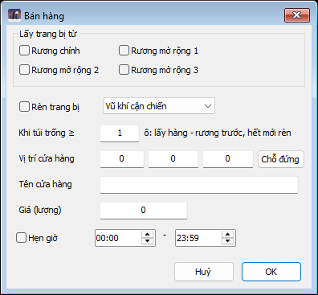
Chuột phải dòng Bán hàng.
Lấy trang bị từRương chính, Rương mở rộng 1-3 (rương mở rộng: nhân vật nào có mới dùng được). Lấy trang bị không khóa ở các rương được tick ra túi để bày bán.Rèn trang bị + loạiRương đã tick hết trang bị mà túi còn trống thì rèn loại đã chọn (Vũ khí cận chiến, Vũ khí tầm xa, Y phục, Nhẫn, Dây chuyền, Giày, Đai, Nón…) bằng Mảnh Trang Bị không khóa (mỗi lần tối đa 3600 lượng). Mảnh lấy ở túi đạo cụ, thiếu thì lấy cả chồng từ túi hành trang, rồi từ rương. Mỗi món rèn ra qua Lọc trang bị: luật / bộ lọc "Trang bị nhiệm vụ" giữ thì đem bán; luật / bộ khác giữ thì để lại cho nhân vật, không bán; không luật nào giữ thì Rã / Vứt bỏ như Lọc trang bị. Không bật Lọc trang bị: bán mọi món rèn ra. Túi chật thì thôi rèn lượt này, bày bán với hàng đang có.Khi túi trống ≥ … ôTúi đạo cụ trống từ bấy nhiêu ô (đã bán bớt): thu sạp, lấy trang bị từ các rương đã tick cho tới khi đầy túi hoặc hết đồ; rương hết đồ thì rèn (nếu tick Rèn trang bị) tới khi đầy túi hoặc hết mảnh; rồi bày lại.Vị trí cửa hàngBa ô: bản đồ, toạ độ x, y. Bấm Chỗ đứng để lấy đúng chỗ nhân vật đang đứng (đứng sẵn ở đó trước). Để 0 là chưa đặt: Bán hàng không chạy. Nên đặt ở thành, khu không chiến đấu.Tên cửa hàngLời rao hiện trên đầu nhân vật khi bày sạp (game lọc chữ cấm).Giá (lượng)Giá cho mọi món chưa có giá trong túi đạo cụ. Không đặt giá: các loại phù, món khóa, món trong Thay đổi trang bị, trang bị Lọc trang bị giữ cho nhân vật, món máy chủ không cho bày, Mảnh Trang Bị khi tick Rèn trang bị, loại bạn đã chọn "Không bán". Món ở túi hành trang / rương không bao giờ bày.Hẹn giờNhư các tác vụ khác (không có Lệch).
Shift + chuột trái vào một món trong túi (khi Bán hàng đang tick): hiện ô Định Giá của game. Giá nhập ở đó thành ô Giá và được đặt cho mọi món còn lại chưa có giá. Bấm "Không bán" thì bot nhớ loại món đó cho nhân vật, không bày nữa; Shift + chuột trái lại rồi nhập giá là bán lại.
Bot bày sạp thế nào
Tới chỗ đã đặt, rời tổ đội (game không cho bày sạp khi đang trong đội; Bán hàng không lập / vào đội, Theo sau tạm tắt), xuống ngựa, định giá các món chưa có giá, đặt lời rao, rồi Rao bán.
Máy chủ từ chối cả sạp khi có một món nó không nhận: bot tìm ra món đó, nhớ cho mọi nhân vật, bỏ ra rồi bày lại.
Rao bán hoặc đặt lời rao 3 lần không được thì nghỉ 10 phút rồi thử lại; đổi thiết lập Bán hàng (chỗ, lời rao, giá) thì thử lại ngay.
Việc khác giành nhân vật (ví dụ Chia sẻ vật phẩm) thì thu sạp, xong quay lại bày.
Liên đấu: đơn đấu, song đấu, chiến đội
Võ Lâm Liên Đấu mở ngày 1-20 hằng tháng, 19:00-21:00, báo danh mỗi 15 phút. Mỗi tháng là đơn đấu hoặc song đấu: bot tự hỏi rồi làm theo.
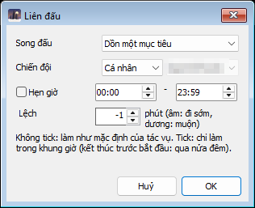
Chuột phải dòng Liên đấu.
Thành báo danh: Sứ Giả Liên Đấu có ở Đại Lý và Dương Châu; mỗi nhân vật được chia một trong hai thành theo tên và ngày (cả ngày giữ một thành) để không dồn hết về một nơi; đang đứng sẵn ở một trong hai thành thì dùng thành đó. Trước khi vào Hội trường: cất thuốc bị cấm trong Liên đấu và mua thuốc theo dòng Mua thuốc (dòng Hoạt động Liên đấu cũng tính).
Đơn hay song đấu: mỗi tháng một lần, trước khi báo danh, bot hỏi Sứ Giả Liên Đấu thứ hai trong thành (mỗi thành có hai ông cùng tên; ông này không nhận báo danh) và nhớ cho cả tháng. Tháng đơn đấu: không làm gì thêm, game tự xếp. Không gặp ông thì vẫn đi báo danh như thường, 10 phút sau hỏi lại.
Song đấuTrận 2 đấu 2 khi đồng đội cũng là nhân vật trong bot. Dồn một mục tiêu: cả hai đánh một đối thủ, hạ xong mới sang người kia. Chia cặp: mỗi người một đối thủ; một đối thủ ngã thì cả hai dồn vào người còn lại. Nhân vật có tên xếp trước dẫn (chọn này của nó dùng cho cả hai): đánh trước đối thủ mà hệ của nó khắc, rồi theo Ưu tiên ở tab Đ. thủ. Lúc đếm ngược nhân vật kia đứng ra cách đồng đội 400 px; nhân vật đánh xa đứng sát vách sân; bị đánh mà không ra đòn được 3 giây thì Khinh công ra rồi đánh tiếp. Đồng đội không có trong bot hoặc đã ngã: đánh như đấu đơn.Chiến độiChỉ có tác dụng khi tháng này là song đấu. Cá nhân: chưa có chiến đội thì tự lập một mình, tên là tên nhân vật. Tổ đội + nhân vật bên phải: lập chung với nhân vật đó (cũng phải là nhân vật trong bot). Bấm OK thì bên kia cũng được đặt Tổ đội với nhân vật này; ai ghép trước đó với một trong hai bị gỡ.Hẹn giờ, LệchNhư các tác vụ khác; Lệch mặc định -1.
Tổ đội: bot ghép chiến đội thế nào
Ai đã có chiến đội làm đội trưởng; chưa ai có thì nhân vật có tên xếp trước.
Đội trưởng tới Sứ Giả Liên Đấu nhận báo danh, chọn "Chiến Đội Võ Lâm Liên Đấu Ta", tạo chiến đội tên "A-B" ghép từ hai tên (cắt cho vừa ô 16 chữ của game; trùng tên thì thêm số).
Hai nhân vật tổ đội trong game cạnh Sứ Giả (chỉ hai người), đội trưởng chọn "Để đội hữu của ta gia nhập chiến đội ta" rồi xác nhận. Đồng đội không phải bấm gì.
Làm một lần là đủ cho cả mùa. Vào trận không cần tổ đội: cùng chiến đội báo danh cùng lượt là chung một đội.
Đồng đội đã ở chiến đội khác (của người khác, hoặc đã đủ người): bot báo trong khung chat game, và hiện hộp cảnh báo khi bạn bấm OK ở hộp này; không ghép, mỗi người đánh với chiến đội của mình. Bot không bao giờ chọn "Rời khỏi đội": muốn đổi chiến đội thì tự rời ở Sứ Giả Liên Đấu.
Chưa có chiến đội để báo danh (đồng đội chưa vào game, tên bị từ chối…): bot làm việc khác 10 phút rồi thử lại, không bỏ cả buổi.
Song đấu: Quan Viên nói hai người trong chiến đội "cùng lúc vào khu vực chuẩn bị… xin thử lại" thì bot báo danh lại sau 10 giây.
Hiệp Phong
Hiệp Phong Luận Kiếm 3 đấu 3, thứ Hai và thứ Ba từ 20:15 (thứ Năm: Tranh Bá, khi tick), nhân vật cấp 100 trở lên. Không chạy khi bật Auto PK (trừ khi đã ở phòng chờ).
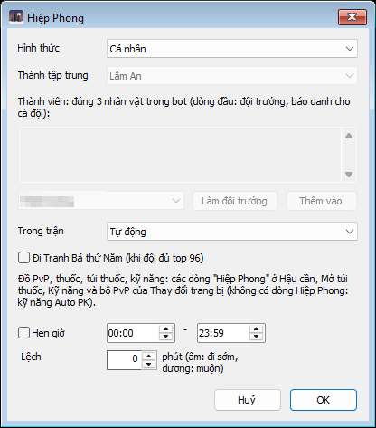
Chuột phải dòng Hiệp Phong. Hình thức Cá nhân: phần đội bị mờ.
Hình thứcCá nhân: đúng giờ thay đồ PvP, Hậu cần, báo danh một mình, game tự ghép đội. Tổ đội: 3 nhân vật trong bot từ 20:10 về tập trung ở thành dưới đây (làm Hậu cần), tự lập đội, 20:15 đội trưởng báo danh cho cả đội. 20:25 chưa vào được khu chờ thì cả đội bỏ Hiệp Phong hôm nay, làm việc khác (không tách ra báo danh cá nhân).Thành tập trungLâm An: cạnh Quản Sự Luận Kiếm; thành khác: cạnh Lễ Quan. Báo danh ở thành nào cũng được; Lâm An rộng, tụ tập lâu.Thành viênĐúng 3 nhân vật trong bot, dòng đầu là đội trưởng (báo danh cho cả đội). Chọn tên ở ô dưới rồi bấm "Thêm vào" hoặc "Làm đội trưởng". Cách khác: chọn đúng 3 dòng ở bảng nhân vật, chuột phải, Lập chiến đội ▶ Lập đội Hiệp Phong... (cùng menu con có Làm đội trưởng Hiệp Phong, Giải tán đội Hiệp Phong...).Trong trậnĐội trưởng chọn đối thủ: bị hệ của nó khắc trước, rồi ít máu nhất. Tự động: cả đội đánh mục tiêu của đội trưởng; ai bị đối thủ khác áp sát (dưới 200 px) mà mục tiêu chung còn xa thì đánh trả kẻ đó. Dồn một mục tiêu: luôn mục tiêu của đội trưởng. Chia mục tiêu: mỗi người một đối thủ chưa ai đánh. Chưa có đối thủ thì đứng quanh đội trưởng, không ai lao lên một mình.Đi Tranh Bá thứ NămKhi đội đủ top 96. Ô này ghi cho cả đội.Hẹn giờ, LệchNhư các tác vụ khác.
Game không cho thành viên tự báo danh: chỉ đội trưởng báo danh, thành viên chờ máy chủ đưa vào khu chờ cùng đội trưởng. Đội trưởng đã ở khu chờ 2 phút mà mình vẫn chưa được đưa vào thì bỏ Hiệp Phong hôm nay.
Đồ PvP, thuốc, túi thuốc, kỹ năng: các dòng "Hiệp Phong" ở Hậu cần, Mở túi thuốc, Kỹ năng và bộ PvP của Thay đổi trang bị (không có dòng Hiệp Phong thì dùng kỹ năng Auto PK).
Nhân vật không tick dòng Hiệp Phong (hay Năng động có Hiệp Phong) mà đang ở khu chờ / đấu trường: bot không điều khiển (có thể bạn đang tự chơi hoặc dùng công cụ khác). Báo danh mà game báo "khu vực đã đầy người" thì bỏ Hiệp Phong hôm nay.
Ngũ Hành Trận
Tác vụ mới từ bản 1.7.0. Ngũ Hành Trận mở thứ Ba và thứ Năm, 10-12h, 17-19h, 21-23h (giờ máy chủ), mỗi khung giờ đi một lần. Trận rất mạnh nên bot chỉ đi khi đủ đội 5 nhân vật trong bot, cấp 110 trở lên, hoặc đi cá nhân cùng người chơi khác.
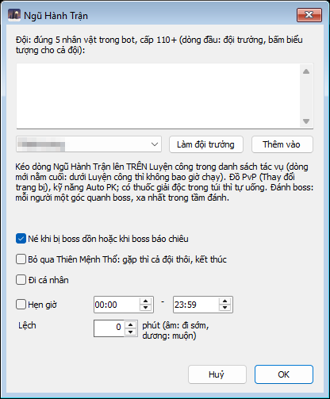
Chuột phải dòng Ngũ Hành Trận.
ĐộiĐúng 5 nhân vật trong bot, cấp 110+, mỗi dòng một tên; dòng đầu là đội trưởng (bấm biểu tượng Ngũ Hành cho cả đội). Chọn tên ở ô dưới rồi bấm "Thêm vào" hoặc "Làm đội trưởng". Cách khác: chọn đúng 5 dòng ở bảng nhân vật, chuột phải dòng sẽ làm đội trưởng, Lập chiến đội ▶ Lập đội Ngũ Hành Trận... (lập xong là tick tác vụ cho cả đội).Né khi bị boss dồn hoặc khi boss báo chiêuMặc định tick. Boss nhắm đòn thường vào mình 2 lần trong 2,5 giây, hoặc boss vừa báo chiêu: dịch 180 px sang bên quanh boss rồi đánh tiếp, lần sau dịch về, rồi sang bên kia. Không cần tick vẫn luôn chạy: boss báo chiêu thì người gần góc xa nhất của sàn chạy vào núp, người bị boss nhắm chiêu lạ chạy ra xa, hết bình mà còn túi thuốc thì ra góc xa mở túi. Áp cho cả đội.Bỏ qua Thiên Mệnh ThổTrận Thổ (Thiên Mệnh) quá mạnh: đội trưởng không chọn dòng "Đến Thổ Đại Trận (Thiên Mệnh)". Phá xong các trận khác thì cả đội đứng yên ở trận vừa phá, chờ máy chủ đưa ra khi hết giờ (giữa chừng trận không có lối ra). Bot chỉ nhận ra bằng dòng chọn trận đó: người chơi khác làm đội trưởng chọn trận thì bot không biết, đánh như trận thường. Áp cho cả đội.Đi cá nhânChỉ nhân vật này, đi cùng người chơi khác (không cần đội 5 nhân vật trong bot). Tới khung giờ bot đứng yên, không làm việc khác: bạn tự tìm, lập / vào tổ đội và vào trận (30 phút chưa vào thì bỏ khung). Vào tới Ngũ Hành Trận thì bot điều khiển: đánh, né, chết thì vào lại theo tiền như đi đội, xin lại vào đội của đội trưởng. Nhân vật là đội trưởng trong game thì bot tự khai trận / chọn trận kế (chờ người trong đội có mặt tối đa 20 giây).Hẹn giờ, LệchNhư các tác vụ khác.
Kéo dòng Ngũ Hành Trận lên TRÊN Luyện công trong danh sách tác vụ của mỗi nhân vật trong đội: dòng mới nằm cuối, dưới Luyện công thì không bao giờ chạy.
Một lượt Ngũ Hành Trận
Kiểm tiền. Mỗi nhân vật cần túi + rương từ 500 vạn mới đi (trung bình chết khoảng 10 lần một lượt, mỗi lần vào lại 50 vạn). Một người thiếu tiền thì cả đội không đi khung đó.
Tập trung. Đội tập trung ở thành của đội trưởng (đang ở thành thì thành đó, không thì nơi phù về thành của nó đáp), làm Hậu cần, lập đội riêng. Chỉ chờ người trong danh sách: đủ cả 5 mới vào, thiếu một người thì không ai vào; chờ quá 30 phút chưa vào được thì bỏ khung; khung còn dưới 10 phút thì không bắt đầu.
Trong trận. Đội trưởng khai trận, chọn trận kế. Đánh boss: mỗi người một góc quanh boss, xa nhất trong tầm đánh (nhân vật đánh xa đứng xa boss hơn). Mặc đồ PvP (Thay đổi trang bị), dùng kỹ năng Auto PK (hoặc dòng có Hoạt động "Ngũ Hành Trận"); có thuốc giải độc trong túi thì tự uống.
Chết. Còn từ 100 vạn (túi + rương) thì trả 50 vạn vào lại, xin vào lại đội; không đủ thì về Lâm An.
Hết lượt. Ra khỏi trận (hết giờ hoặc "Mau đưa ta về") và không còn ai của đội bên trong: tự rời tổ đội, giải tán đội và bỏ tick Ngũ Hành Trận. Lần sau muốn đi thì lập đội lại.
Đang Auto PK: không chạy (Auto PK trong trận vẫn đánh như thường). Nhân vật không tick dòng Ngũ Hành Trận mà đang ở trong trận: bot không điều khiển.
Trường Ca (chiến đội)
Trường Ca Sơn Trang là bản đồ luyện công kinh nghiệm cao, mở bằng Tín Vật Trường Ca ở NPC Trường Ca Môn Môn Nhân của 7 thành lớn. Một chiến đội tối đa 6 người: người mở nhận x8 kinh nghiệm, người khác x4 (nộp thêm Tín Vật để lên x8).
Lập nhóm một lần là xong: cả nhóm nhận chung danh sách, người được bấm chuột phải đứng đầu (người mở sơn trang, cũng là đội trưởng). Bấm OK ở hộp lập chiến đội sẽ mở tiếp hộp Trường Ca; chỉ khi bấm OK ở hộp đó cả nhóm mới được tick (Huỷ: nhóm đã lập nhưng chưa chạy). Đổi người mở: chuột phải người khác trong nhóm → Lập chiến đội ▶ Làm đội trưởng Trường Ca.
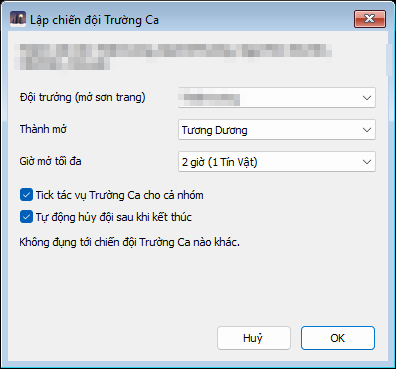
Lập chiến đội Trường Ca.
Bước 1: lập chiến đội từ bảng nhân vật
Giữ Ctrl chọn 1–6 nhân vật trong bảng, rồi chuột phải lên nhân vật sẽ mở sơn trang và chọn Lập chiến đội ▶ Lập chiến đội Trường Ca.... Cả nhóm nhận chung một danh sách, người mở đứng đầu.
Đội trưởng (mở sơn trang)Người mở sơn trang, cũng là đội trưởng tổ đội. Mặc định là dòng vừa bấm chuột phải. Người này cần có Tín Vật (để ở túi hành trang cũng được, bot tự lấy ra túi đạo cụ khi mở).Thành mởThành có Trường Ca Môn Môn Nhân mà cả nhóm tới.Giờ mở tối đa2, 4 hoặc 6 giờ (1 Tín Vật mở 2 giờ, mỗi Tín Vật nộp thêm +2 giờ). Đây là mức tối đa: số thật do thời gian tu luyện còn lại của cả nhóm quyết định lúc tập trung.Tick tác vụ Trường Ca cho cả nhómMặc định tick. Bấm OK ở đây sẽ mở hộp Trường Ca (bước 2); tick chỉ được áp dụng khi bấm OK ở hộp đó, nên nhóm chưa chạy ngay.Tự động hủy đội sau khi kết thúcMặc định tick. Sơn trang đã mở rồi hết giờ và không còn ai bên trong thì giải tán nhóm, bỏ tick Trường Ca, để hôm sau các nhân vật không tự đi lại. Chuyến bị hoãn khi chưa mở sơn trang thì nhóm được giữ.
Mỗi người trong danh sách phải là nhân vật trong bot và không thuộc chiến đội đang đi Trường Ca. Người đang ở trong game thì còn phải rảnh: Luyện công, ngồi hồi, đứng không hoặc làm việc vặt vài giây là rảnh; đang làm nhiệm vụ, sự kiện hay Auto PK là bận. Nhân vật chưa mở game, chưa vào game hay chưa tick vẫn được xếp vào nhóm (thiết lập vẫn lưu); đến lúc tập trung mà vắng thì xem bước 3 bên dưới. Không đạt, hộp ghi lý do từng người và nút OK mờ.
Làm đội trưởng Trường CaChuột phải lên một nhân vật trong nhóm: đưa người đó lên đầu danh sách của cả nhóm (người mở mới).Giải tán chiến đội Trường Ca...Bỏ danh sách và bỏ tick Trường Ca của cả nhóm (hỏi trước).
Mỗi nhân vật chỉ ở một chiến đội. Lập nhóm mới mà lấy người của nhóm khác thì người đó chuyển sang nhóm mới; nhóm cũ không còn đủ người nên giải tán (bỏ tick Trường Ca), cần thì lập lại cho đủ. Hộp ghi rõ ai chuyển, nhóm nào giải tán trước khi bấm OK. Nhóm đang đi Trường Ca thì không lập / đổi được: chờ xong buổi.
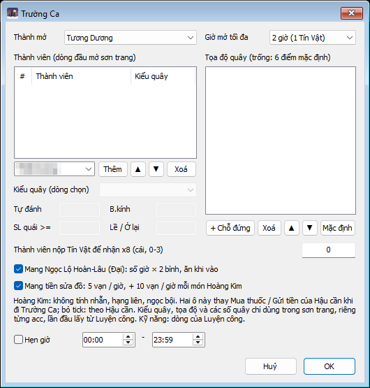
Hộp Trường Ca (chuột phải dòng Trường Ca ở tab Tác vụ).
Bước 2: thiết lập riêng (chuột phải dòng Trường Ca)
Thành mở, Giờ mở tối đaNhư hộp Lập chiến đội. Sửa ở đây cũng theo đúng luật nhóm ở trên và chép sang cả nhóm.Thành viên (dòng đầu mở sơn trang)Bảng # / Thành viên / Kiểu quây, tối đa 6 người. Chọn (hoặc gõ) tên ở ô dưới rồi bấm Thêm; ▲ ▼ hoặc kéo thả một dòng để đổi thứ tự; Xoá dòng đang chọn.Kiểu quây (dòng chọn)Kiểu quây của thành viên đang chọn, chỉ dùng trong sơn trang: Theo L. công, Không quây, Vòng tròn, Bao quái, Cùng, Trước, Đánh cùng, Đánh trước. Acc dẫn bãi: acc Vòng tròn hoặc Bao quái đầu tiên (từ trên xuống) đi các tọa độ và quây quái; acc Cùng / Trước / Đánh cùng / Đánh trước lấy nó làm mốc; các acc còn lại theo sau nó (không xét tab Tổ đội). Nó chết hoặc ra ngoài thì acc kế tiếp lên thay. Không có acc nào như vậy: mốc là đội trưởng.Tự đánh, B.kính, SL quái >=, Lề / Ở lạiSố quây riêng của thành viên đang chọn, chỉ dùng trong sơn trang (lần đầu lấy từ tab L. công, sửa ở đây không làm mất số Luyện công). Tự đánh: tầm tìm quái; B.kính: bán kính vòng quây; SL quái: số quái tối thiểu mới quây; Lề / Ở lại: lề của Bao quái, hoặc số giây đội trưởng đứng ở một điểm rồi mới sang điểm sau (Trước / Đánh trước).Tọa độ quâyCác điểm luyện công trong sơn trang, chung cả nhóm. Để trống: 6 điểm mặc định quanh Bia Đá (hình dưới). + Chỗ đứng: thêm chỗ nhân vật đang chọn ở bảng nhân vật đang đứng (phải đang ở trong sơn trang); Xoá, ▲ ▼; Mặc định: xoá hết, về 6 điểm mặc định.Thành viên nộp Tín Vật để nhận x8Riêng từng người (0–3). Thành viên nộp ở NPC trước khi vào, mỗi Tín Vật cho 1 giờ hiệu quả x2 (từ x4 lên x8).Mang Ngọc Lộ Hoàn-Lâu (Đại)Mua số giờ × 2 bình trước lần vào đầu tiên trong ngày (mỗi bình 30 phút), chỉ ăn khi đã ở trong sơn trang. Mặc định tick; thay dòng Mua thuốc của Hậu cần cho chuyến này.Mang tiền sửa đồMang theo 5 vạn mỗi giờ, thêm 10 vạn mỗi giờ cho mỗi món Hoàng Kim đang mặc (không tính nhẫn, hạng liên, ngọc bội). Ví dụ 3 món Hoàng Kim, đi 4 giờ: 3 × 4 × 10 + 4 × 5 = 140 vạn. Trong sơn trang nhân vật tự sửa đồ từ xa theo mức % ở ô "Sửa trên bãi" của Hậu cần, kể cả khi ô đó không tick. Mặc định tick; thay "Gửi tiền" của Hậu cần cho chuyến này.Hẹn giờNhư các tác vụ khác (không có Lệch). Thành viên đi theo Hẹn giờ của người mở.
Bỏ tick hai ô Ngọc Lộ Hoàn / tiền: bot dùng thiết lập Mua thuốc và Gửi tiền của tab Hậu cần như bình thường. Kỹ năng trong sơn trang: các dòng có Hoạt động "Trường Ca", không có thì dòng Luyện công. Nhớ xếp Trường Ca trên Luyện công trong danh sách tác vụ của mọi người trong nhóm (thành viên có dòng Trường Ca dưới Luyện công sẽ không tới, nhóm đi thiếu người đó).
Một chuyến đi diễn ra thế nào
bot tự làmchờ / đi lạihoãn chuyến / ra ngoài
Người mở nộp thêm Tín Vật ngay sau khi mở rồi mới báo "sẵn sàng", để thành viên vào một lần: lúc người mở ở ngoài, game không cho ai vào sơn trang.Trong sơn trang: 6 điểm luyện công mặc định quanh Bia Đá (toạ độ như game hiện; dùng khi ô Tọa độ quây để trống). Vùng xanh là tầm đánh quanh mỗi điểm. Bia Đá ở giữa là lối ra duy nhất (sơn trang cấm phù về thành, Thổ Địa Phù, Tiên Thảo Lộ).
Tập trung. Người mở tới NPC ở thành đã chọn; các thành viên bỏ việc đang làm và tới ngay. Mỗi người hỏi NPC "Kiểm tra thời gian tu luyện". Thành viên đi theo Hẹn giờ của người mở.
Đồng bộ điều kiện. Người mở chờ tối đa 10 phút cho cả danh sách vào đội và có số thời gian. Số Tín Vật dùng = theo thời gian tu luyện còn ít nhất trong nhóm (mỗi Tín Vật 2 giờ), không quá Giờ mở tối đa, số Tín Vật đang có và 3 Tín Vật mỗi ngày.
Hoãn chuyến khi: thiếu người quá 10 phút, có thành viên còn dưới 2 giờ tu luyện, có người đã xong Trường Ca hôm nay, hoặc không có Tín Vật. Cả nhóm quay về Luyện công / tác vụ đang tick, 10 phút sau xét lại (không khoá cả ngày). Thành viên có dòng Trường Ca nằm dưới Luyện công thì bị bỏ qua, nhóm đi với những người còn lại. Người mở chỉ còn 2 giờ tu luyện trở xuống thì xong hôm nay.
Mở. Người mở chọn "Ta muốn mở Trường Ca Sơn Trang", vào sơn trang, rồi ra qua Bia Đá nộp thêm Tín Vật ("Tăng thời gian Trường Ca Sơn Trang đã mở") và vào lại. Các thành viên vào bằng "Ta muốn vào Trường Ca Sơn Trang đã mở" → dòng tên người mở → "Vào".
Trong sơn trang. Luyện công quanh các điểm (6 điểm mặc định hoặc tọa độ riêng của nhóm) theo Kiểu quây và số quây riêng của từng nhân vật: acc dẫn bãi (Vòng tròn / Bao quái đầu tiên) đi trước và quây, acc khác lấy nó làm mốc hoặc theo sau nó; acc có bùa đánh bùa trước. Chưa có quái thì đứng chờ ở điểm gần nhất; điểm thấy trống từ xa thì bỏ qua. Các tác vụ khác tạm tắt. Luôn chung tổ đội với người mở.
Máu thấp, cần về thành. Sơn trang cấm phù về thành, Thổ Địa Phù, Tiên Thảo Lộ. Máu dưới mốc TĐP, hết bình, đầy túi…: bot chạy ra Bia Đá, mua đồ, hồi máu rồi vào lại.
Rớt mạng, chết, bị đưa ra. Vào lại cùng cách. Người vào lại bị game xếp vào đội cũ thì tự rời ra, vào đội người mở.
Hết giờ. Đã dùng đủ số Tín Vật định cho hôm nay thì xong hôm nay. Sơn trang hết sớm hơn (ví dụ chuyến đầu chỉ mở 2 giờ mà còn tu luyện) thì người mở tập trung lại và mở chuyến mới. Có tick Tự động hủy đội thì nhóm giải tán khi không còn ai bên trong.
Thời gian tu luyện do máy chủ giữ: mỗi ngày cộng 2 giờ, tối đa 10 giờ, trừ từng phút ở trong sơn trang. Buổi kéo qua 0h thì phần sau 0h trừ vào ngày mới. Ví dụ 22h còn 6 giờ, mở 6 giờ: tới 4h sáng ngày mới chỉ còn 2 giờ, không đủ mở thêm.
Tab L. công
Đánh quái ở đâu, đánh thế nào, và khi nào thì về thành.
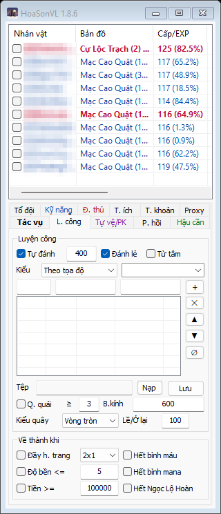
Tab L. công.
Khung Luyện công
Tự đánh + sốĐánh quái trong phạm vi này (pixel game) tính từ lộ trình. Kiểu Tự do (cả bản đồ): không giới hạn, đánh mọi quái thấy quanh nhân vật. Bỏ tick: chỉ đi theo toạ độ hoặc theo sau, không đánh. 400 là tầm bình thường.Đánh lẻTick: tự đánh một mình theo thứ tự các điểm lộ trình. Bỏ tick: chỉ đánh khi đã vào đội (tab Tổ đội) và thấy đội trưởng; chưa thấy thì tới chỗ đội trưởng nếu bot biết (cùng bản đồ), không thì chạy theo toạ độ mà không đánh.Từ tâmĐi tới tâm từng điểm lộ trình, dọc đường không đánh (trừ khi bị quái chặn đường quá 2 giây), tới nơi đánh hết quái quanh điểm rồi sang điểm kế. Bật cả Q. quái: tới điểm đủ quái thì quây. Hợp bãi có quái tụ thành cụm.KiểuTheo tọa độ: đánh quanh các điểm lộ trình bên dưới. Tự do (cả bản đồ): không cần lộ trình, đánh quái quanh mình, hết quái thì lên ngựa chạy sang chỗ khác trong bản đồ, tránh cổng. Ô bên cạnh là bản đồ luyện công tự do: gõ để tìm; chọn Tự do khi đang đứng ở bãi thì tự lấy bản đồ hiện tại. Về thành xong bot quay lại bản đồ này.
Lộ trình (danh sách toạ độ)
Ba ô trên danh sách là bản đồ, x, y. Chúng tự đổi theo chỗ nhân vật đang chọn đứng; gõ vào để nhập tay. Bấm + để thêm điểm ở ba ô đó vào sau điểm đang chọn. Cách làm lộ trình nhanh nhất: dắt nhân vật đi qua bãi, mỗi chỗ muốn dừng bấm + một lần. Không có quái thì bot đi lần lượt các điểm cùng bản đồ.
Tick ở mỗi điểmBỏ tick: tạm bỏ qua điểm đó (vẫn giữ trong lộ trình, không phải xoá rồi thêm lại).✕ ▲ ▼ ∅Xoá điểm đang chọn, dời lên / xuống, xoá hết (để làm lộ trình cho bản đồ mới).Tệp, Nạp, LưuLộ trình đang dùng lấy từ tệp nào. Ô này chỉ hiện tên tệp; đưa chuột lên để xem đường dẫn đầy đủ. Nạp: chọn tệp và nạp luôn cho các nhân vật đang chọn (dùng chung một lộ trình cho cả nhóm). Lưu: luôn hỏi tên tệp (gợi sẵn tệp đang dùng) rồi mới ghi; chữ Lưu đỏ nghĩa là đã sửa mà chưa ghi.
Quây quái
Q. quái ≥ số, B.kínhKhi có đủ số quái trong phạm vi Tự đánh, chạy vòng xoắn ốc từ bán kính ngoài (B.kính) vào điểm lộ trình gần nhất để quái đuổi theo, gom lại một chỗ rồi mới đánh. Chỉ khi luyện công đánh quái. Hợp môn phái đánh diện rộng. Ít quái quá thì quây mất thời gian, nên đặt tối thiểu 3.Kiểu quâyVòng tròn: vòng xoắn ốc cố định theo B.kính. Bao quái: chạy vòng quanh đúng chỗ các con quái đang đứng, cách con ngoài cùng một khoảng Lề, rồi vào tâm điểm.
Bốn kiểu sau theo đội trưởng (khi đội trưởng cùng bản đồ; không thì luyện công như thường), dùng khi một nhân vật kéo quái cho nhân vật khác (thường là nhân vật buff, bùa): Cùng: chạy vòng quanh đội trưởng liên tục, không đánh. Trước: chạy vòng ở điểm lộ trình kế tiếp trước đội trưởng, không đánh; đội trưởng tới điểm đó đứng đủ số giây Ở lại thì sang điểm sau. Đánh cùng / Đánh trước: như Cùng / Trước nhưng có đánh quái ở đó. Đánh trước mà có dòng Bùa chú (tab Kỹ năng): quây trọn một vòng cho quái tụ lại, ra bùa cả cụm (tối đa 3 giây) rồi quây tiếp, luôn đi trước đội trưởng một điểm.Lề/Ở lạiMột ô cho hai kiểu: Lề (Bao quái) là số pixel chạy cách con quái ngoài cùng để kéo được nó; Ở lại (Trước / Đánh trước) là số giây chờ sau khi đội trưởng tới điểm rồi mới sang điểm kế.
Trong sơn trang Trường Ca, mỗi nhân vật có số quây riêng (Tự đánh, số quái, B.kính, Lề / Ở lại) đặt trong hộp Trường Ca (mục Trường Ca); chưa đặt thì lấy số ở tab này.
Khung Về thành khi
Gặp một trong các điều kiện tick thì dùng Thổ địa phù (không có thì Hồi Thành Phù) về thành, làm Hậu cần rồi quay lại bãi.
Đầy h. trang + cỡKhông còn chỗ trống cho món cỡ này (ngang × dọc ô): 2x1, 2x2, 2x3, 2x4. 2x1 là chặt nhất.Độ bền <=Một món đang mặc còn độ bền (F3) bằng hoặc dưới mức này.Tiền >=Ngân lượng mang theo lên tới mức này thì về gửi rương, tránh chết mất tiền.Hết bình máu / Hết bình manaKhông còn loại đó trong hành trang và thanh phím tắt.Hết Ngọc Lộ HoànChỉ tính những loại Ngọc Lộ Hoàn có trong danh sách mua ở tab Hậu cần, đếm trong túi đạo cụ và túi hành trang (món trong túi hành trang thì lúc dùng bot tự lấy ra). Danh sách mua không có loại nào thì phải hết mọi loại mới về.
Không còn ô Nhịp quét, Nhịp PK như bản cũ: từ 1.5.6 bot tự tính nhịp, chuyển việc nhanh và mượt hơn.
Tab Tự vệ/PK
Gặp người đánh mình thì làm gì, khi nào bot nghỉ, cừu sát và đồ sát ai, vài ô cho lúc PK.
Khi nào trang này chạy. Tự vệ, Tự cừu sát, Bảo vệ cừu sát, TĐP khi cừu sát và Tự đồ sát chỉ chạy khi nhân vật đang Luyện công ở khu chiến đấu (không tính bản đồ sự kiện). Bật Auto PK (tab Tác vụ) thì bot không chạy tác vụ nào, chỉ tự đánh theo nhóm Auto PK; khung PK ở cuối trang dành cho lúc đó.
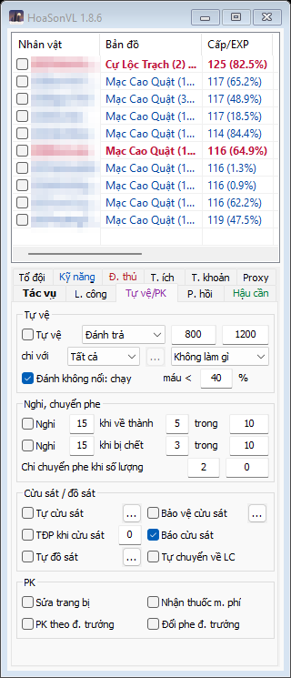
Tab Tự vệ/PK.
Khung Tự vệ
Đang luyện công mà có người chơi là kẻ địch (khác màu, hoặc đang cừu sát mình) đi vào phạm vi ô số thứ nhất, dù chưa đánh mình, thì làm theo kiểu đã chọn.
Tự vệ + kiểuThổ địa phù: về thành ngay; ở nơi không dùng được phù (như trên thuyền Phong Lăng Độ) thì bỏ chạy, bị vây thì đánh trả. Chuyển phe: chỉ khi mình là đội trưởng, không đang cừu sát, và địch đủ đông (ô "Chỉ chuyển phe khi số lượng" bên dưới): giao chức đội trưởng cho nhân vật của bot trong đội có màu gốc bằng màu địch, để cả đội thành cùng màu với địch. Đội đó được giữ nguyên chừng nào còn địch màu đó. Không bao giờ chuyển sang màu của người đang bị Tự đồ sát. Đánh trả: đánh kẻ địch gần nhất (kẻ đang ra chiêu vào mình được ưu tiên) trong phạm vi ô số thứ hai; nó chạy xa hơn thì quay lại luyện công. Có dòng Bùa chú ở tab Kỹ năng thì ra bùa một lượt rồi mới đánh. Lúc bắt đầu đánh một người, bot nói một câu giọng kiếm hiệp có tên người đó ở kênh Gần (mỗi lần một câu khác). Bỏ chạy: chạy tới chỗ trống cách mọi địch đủ xa (≥ 700), không lướt sát địch, tránh tường và ngõ cụt, đi bộ thì kèm Khinh công ngược hướng địch; bị vây không còn đường thì phù về thành ngay (không có phù thì đánh trả); hết địch thì luyện tiếp.
Nhiều địch khác kiểu cùng lúc: có kẻ thuộc kiểu Thổ địa phù / Bỏ chạy trong tầm thì thoát trước, không đánh.Hai sốSố đầu (800): phạm vi phát hiện kẻ địch, dùng chung cho Tự vệ, Tự cừu sát và Tự đồ sát; nên nhỏ hơn tầm kỹ năng. Số sau (1200): Đánh trả, Tự cừu sát, Tự đồ sát chỉ đánh / đuổi địch trong phạm vi này tính từ lộ trình luyện công (các điểm và đoạn nối giữa chúng; kiểu Tự do: từ chỗ gặp địch) và từ chỗ bắt đầu đuổi; ra ngoài thì buông và về lộ trình.chỉ vớiKiểu tự vệ trên chỉ áp dụng với kẻ địch thuộc loại này:
Tất cả - mọi kẻ địch.
Môn phái / Hệ - nút "…" mở bảng tick từng môn phái / hệ áp dụng (ảnh dưới; mặc định tick hết).
Người chơi - nút "…" mở danh sách tên (Lưu / Nạp được; trống là mọi người).
Ít hơn pt - số kẻ địch trong phạm vi ô số thứ nhất ít hơn số người phe mình ở gần (mình và thành viên tổ đội còn sống trong phạm vi đó, kể cả nhân vật ở máy khác) thì làm kiểu đã chọn, không thì làm kiểu ở ô cuối. Ví dụ: Đánh trả chỉ với Ít hơn pt, ngược lại Bỏ chạy.
Với Tất cả và Ít hơn pt nút "…" bị mờ (không có danh sách).
Ô cuối (ngược lại): với địch không khớp thì làm kiểu nào khác, hoặc Không làm gì (bỏ qua, luyện công tiếp). Mỗi kiểu tự vệ nhớ loại và danh sách riêng.Đánh không nổi: chạy, máu < … %Kiểu Đánh trả mà máu tụt dưới số này (%), hoặc hết bình máu (khi có dòng uống máu đang bật) và máu dưới số này + 20 %, thì bỏ chạy như kiểu Bỏ chạy (kèm Khinh công ngược hướng địch). Địch ra khỏi phạm vi ô số thứ nhất thì luyện công tiếp; máu hồi lên trên số này + 20 % và còn bình thì đánh trả lại. Ghi 0: chỉ chạy khi hết bình máu và máu dưới 60 %. Máu xuống dưới ngưỡng "TĐP HP <" ở tab P. hồi thì vẫn phù về thành như cũ.
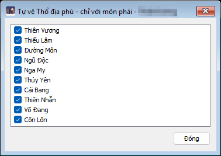
"chỉ với" = Môn phái, bấm "…": tick những môn phái mà kiểu tự vệ này áp dụng. Hệ cũng là một bảng tick như vậy.
Người có tên trong danh sách Tự cừu sát (đang tick) luôn được đánh trả, dù "chỉ với" chọn cách khác. Đang ở chế độ Đồ sát thì khung Tự vệ nghỉ: luyện công đánh mọi kẻ địch trong phạm vi (xem Tự đồ sát).
Khung Nghỉ, chuyển phe
Nghỉ … khi về thành … trong …Về thành đủ số lần trong khoảng phút đó thì bot nghỉ chừng ấy phút (không làm tác vụ, vẫn uống thuốc) rồi làm tiếp. Dấu hiệu bãi đang có người phá. Đang nghỉ mà muốn chạy tiếp ngay: bỏ tick ô Nghỉ đó, tự điều khiển nhân vật, hoặc Ctrl+Space hai lần (tạm dừng rồi chạy tiếp).Nghỉ … khi bị chết … trong …Như trên nhưng đếm số lần chết.Chỉ chuyển phe khi số lượngTự vệ kiểu Chuyển phe chỉ làm khi số kẻ địch cùng một màu từ số đầu trở lên, và chỉ đếm địch có cấp từ số sau trở lên (0 là mọi cấp).
Khung Cừu sát / đồ sát
Tự cừu sát + "…"Đang luyện công ở khu chiến đấu, chưa cừu sát ai, thấy người có tên trong danh sách thì cừu sát người đó (người gần nhất trước) rồi đánh như kẻ địch. Game không nhận thì 2 giây sau thử lại. Danh sách: gõ tên hoặc chọn người chơi đang ở quanh nhân vật; bỏ tick một tên là tạm không dùng tên đó.Bảo vệ cừu sát + "…"Nhân vật trong danh sách (nhân vật khác của bot) đang trong thế cừu sát với ai đó (đã qua 10 giây đếm của game), mình chưa cừu sát ai và thấy người đó, thì mình cừu sát người đó luôn để cả nhóm cùng đánh; không được thì 1 giây sau thử lại. Các nhân vật ghi tên nhau thì bảo vệ qua lại.TĐP khi cừu sát + sốBị người khác cừu sát (đã qua 10 giây đếm) mà Trị PK của mình từ số này trở lên thì dùng Thổ địa phù về thành (về thành là hết thế cừu sát), rồi quay lại bãi. 0 là luôn về.Báo cừu sátVào thế cừu sát (mình hay người khác ra lệnh) thì bot ghi một dòng "Cừu sát với <tên>" ở kênh chat Khác để bạn thấy.Tự đồ sát + "…"Đang luyện công ở khu chiến đấu (không tính Auto PK), gặp người có tên trong danh sách trong phạm vi ô số thứ nhất của Tự vệ, khác màu, thì chuyển chế độ PK sang Đồ sát và đánh người đó trước. Người đó cùng màu tổ đội (cùng màu thì game không cho đồ sát): bot tự đổi màu đội. Đang ở chế độ Đồ sát (bot bật hay bạn tự bật) thì luyện công đánh mọi kẻ địch game cho đánh trong phạm vi, người trong danh sách trước, theo bộ lọc của tab Đ. thủ. Chờ tổ đội, đồ sát tất cả, chat tổ đội: các ô trong cửa sổ danh sách, xem Danh sách đồ sát.Tự chuyển về LCKhông còn ai trong danh sách đồ sát trong phạm vi (Đs t.cả: không còn ai khác màu) thì chuyển chế độ PK về Luyện công, kể cả lúc đang làm nhiệm vụ. Game chỉ cho đổi từng bậc Đồ sát → Chiến đấu → Luyện công, bước cuối ở khu chiến đấu game bắt chờ 3 phút; từ 1.8.6 bot hỏi bậc sau ngay khi bậc trước xong nên về nhanh hơn. Không tick: lần Tự đồ sát của bot xong thì trả về chế độ PK trước lúc đồ sát; đồ sát bạn tự bật bằng tay thì giữ nguyên. Auto PK: bỏ qua ô này.
Khung PK
Sửa trang bịKhi Auto PK ở khu chiến đấu: sửa trang bị từ xa khi độ bền xuống dưới mức "Sửa trên bãi" của tab Hậu cần (chưa đặt thì 50 %). Muốn sửa ngay: Shift+Z.Nhận thuốc m. phíỞ chiến trường Tống Kim (Auto PK hay tác vụ Đánh Tống Kim): thuốc trong danh sách Mua thuốc dưới mức tối thiểu và đang ở hậu doanh (cạnh Quân Nhu Quan) thì nhận Hành Quân Đơn miễn phí trước, theo số ô trống của túi đạo cụ; game báo đã nhận hết hôm nay thì mua thuốc như thường và thôi nhận tới mai.PK theo đ. trưởngĐội trưởng (trong tổ đội là đội trưởng; không tổ đội là người mình đang theo sau) đổi chế độ PK (Luyện công / Chiến đấu / Đồ sát) thì mình đổi theo; chưa được thì 10 giây sau thử lại (về Luyện công ở khu chiến đấu game bắt chờ 3 phút). Chạy khi luyện công, Auto PK, theo sau; đang làm nhiệm vụ riêng thì về Luyện công. Không áp dụng ở chiến trường Tống Kim, Liên đấu, bản đồ sự kiện (ở đó game tự đặt chế độ). Đang Tự đồ sát ai thì Tự đồ sát được ưu tiên.Đổi phe đ. trưởngChỉ khi Auto PK (không ở Tống Kim, Liên đấu, bản đồ sự kiện). Màu (phe) của người mình đang theo sau (người đầu tiên của danh sách Theo sau đang có trong bot hoặc đang thấy) khác màu mình thì đổi theo: mình là đội trưởng và trong đội có nhân vật của bot có màu gốc bằng màu đó thì giao đội trưởng cho nhân vật đó; không được thì đổi phe bang (chỉ nhân vật có quyền đổi phe của bang; cả bang đổi màu), đang trong đội thì chuyển đội trưởng qua một nhân vật trong đội rồi trả về để màu đội đổi theo. Tổ đội đổi để đổi màu được giữ nguyên (không rã để mời lại theo thứ tự danh sách) chừng nào người được theo còn màu đó. Lúc luyện công, đổi màu là việc của Tự vệ "Chuyển phe".
Ctrl+D trong game: bật Đồ sát; bấm lần nữa về chế độ PK (Chiến đấu), vì game không cho về thẳng Luyện công. Bấm trên game của trưởng nhóm thì cả nhóm theo đúng chế độ của trưởng nhóm sau khi bấm. Đây chỉ là phím chuyển nhanh một lần, bot không giữ gì: sau đó "Tự chuyển về LC" và "PK theo đ. trưởng" vẫn chạy như thường (đang luyện công mà tick Tự chuyển về LC, quanh mình không có ai trong danh sách đồ sát thì bot lại đưa về Luyện công). Các phím khác: mục Phím tắt.
Cửa sổ Danh sách đồ sát
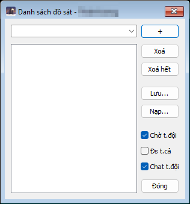
Nút "…" cạnh Tự đồ sát.
Ô tên, +Gõ tên, hoặc mở ô để chọn người chơi đang ở quanh nhân vật (gần trước), rồi bấm +.Danh sáchBỏ tick một tên: tạm không dùng tên đó (vẫn giữ trong danh sách).Xoá, Xoá hết, Lưu..., Nạp...Xoá tên đang chọn, xoá hết; lưu danh sách ra tệp để nhân vật khác nạp.Chờ t.độiTick (mặc định): trong tổ đội, các nhân vật khác của bot cũng có người đó trong danh sách thì chờ họ vào phạm vi rồi cả nhóm mới cùng chuyển sang Đồ sát (tối đa 10 giây; nhân vật đã chết hoặc ở bản đồ khác thì không chờ). Bỏ tick: gặp người trong danh sách là đồ sát ngay.Đs t.cảĐồ sát tất cả: không cần có tên trong danh sách, gặp người chơi khác màu trong phạm vi ô số thứ nhất của Tự vệ là chuyển sang Đồ sát. Trừ: màu trắng (tân thủ), nhân vật của bot, người trong tổ đội, Danh sách đen và Bỏ qua Bang Hội ở tab Đ. thủ. Người trong danh sách vẫn được đánh trước.Chat t.độiTick (mặc định): nói và nghe lệnh trên kênh Tổ đội với người trong đội không phải nhân vật của bot này (bot ở máy khác, người chơi gõ tay). Lệnh ở bảng dưới.
Lệnh trên kênh Tổ đội
Nghĩa
!màu <tên> gốc <Chính|Tà|Trung>
Thành viên gặp người trong danh sách mà cùng màu đội: xin đội trưởng đổi màu đội. Bot đội trưởng giao đội trưởng (cho người xin, nếu màu gốc khác) rồi trả lời "!màu -> <tên>" hoặc "!màu không: …".
!đánh <tên> [x,y]
Gặp người đồ sát thì gọi cả đội. Bot nhận lệnh coi người đó như có trong danh sách trong 3 phút; cùng bản đồ mà chưa thấy hắn thì đi tới chỗ đó (tối đa 60 giây, trong phạm vi ô số thứ hai tính từ lộ trình).
Gõ có dấu hay không dấu đều được (!mau, !danh). Bot chỉ nghe người đang ở trong đội.
Tự đổi màu đội
Người trong danh sách mà cùng màu tổ đội thì không đồ sát được, bot đổi màu đội: đội trưởng có màu gốc khác người đó thì chuyển đội trưởng qua rồi trả về (màu đội chốt từ lúc lập đội, chỉ là màu cũ); không thì giao đội trưởng cho nhân vật của bot trong đội có màu gốc khác; không có ai như vậy thì giao cho thành viên khác bang (mong là khác màu). Tổ đội vừa đổi được giữ nguyên (không rã để mời lại theo thứ tự danh sách) chừng nào màu đội còn khác màu người bị đồ sát. Đội trưởng là nhân vật ở máy khác: máy liên kết thì nhờ qua Liên kết máy, còn lại xin bằng lệnh !màu (cần tick Chat t.đội).
Tab P. hồi
Uống bình máu, mana, thể lực, giải độc, phù về thành khi nguy, chờ hồi ở thành và nhồi bình khi bị đánh dồn. Bot vẫn bơm máu, mana cả lúc tạm dừng (Ctrl+Space) hay đang nghỉ.
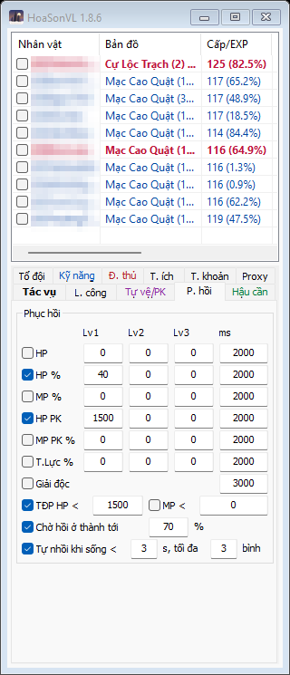
Tab P. hồi.
Khung Phục hồi
Mỗi dòng là một điều kiện uống thuốc, tick để bật. Ba cột Lv1 / Lv2 / Lv3 là ba mức: dưới mức thấp nhất đã chạm thì dùng bình của mức đó. Lv1 dùng loại bình hồi ít nhất trong túi, Lv3 dùng loại hồi nhiều nhất. Ví dụ HP % = 60 / 40 / 20: máu dưới 60 % uống bình nhỏ, dưới 40 % bình vừa, dưới 20 % bình to nhất. Riêng bình máu: bỏ tick "Tự nhồi khi sống <" thì Lv1 cũng dùng bình to nhất (có tick thì bình to để dành cho lúc nhồi). Ghi 0 là tắt mức đó. Cột ms: cách tối thiểu giữa hai lần uống của dòng đó (mili giây). Bot không chọn loại bình bị cấm dùng ở bản đồ đang đứng.
HPSố máu dưới mức thì uống bình máu.HP %Phần trăm máu dưới mức thì uống bình máu. Thường chỉ cần dòng này (mặc định 40 %).MP %Phần trăm mana dưới mức thì uống bình mana.HP PKSố máu dưới mức thì uống, dùng thay cho hai dòng HP, HP % lúc PvP: Auto PK, Tống Kim, Liên đấu, Hiệp Phong, Cấm Địa, đánh người chơi, hoặc có địch trong 800 px. PK mất máu nhanh nên để mức cao hơn (mặc định 1500).MP PK %Như HP PK nhưng cho mana: dùng thay cho dòng MP % lúc PvP.T.Lực %Thể lực dưới mức thì uống bình thể lực (Tam Hoa Tán…).Giải độc + msĐang trúng độc thì dùng bình giải độc mạnh nhất trong túi (Ngân Kiều Khứ độc đan, Tam Thuận tán…). Ô số là cách tối thiểu giữa hai lần dùng.TĐP HP < / MP <Máu hoặc mana tụt dưới mức này (ở khu chiến đấu) thì dùng phù về thành, ưu tiên Hồi Thành Phù vô hạn. Đây là phao cứu sinh cuối cùng, nên bật. Về thành như vậy thì bot ngồi hồi ở thành cho máu lên lại (tới mức "Chờ hồi ở thành tới" nếu tick, không thì 90 %) rồi mới ra bãi, để khỏi vừa ra lại phù về. Mức đặt cao hơn máu tối đa của nhân vật (thiết lập chép từ nhân vật khỏe hơn) thì bot bỏ qua dòng đó. Nơi không dùng được phù (Liên đấu, Đại lao…) thì không dùng.Chờ hồi ở thành tới … %Luyện công / Auto PK: về thành, thôn mà máu dưới mức này (về bằng phù, chết, tự về) thì xuống ngựa ngồi hồi tới đủ rồi mới đi tiếp; mana không xét. Trong túi hết bình máu thì trước khi ngồi bot mua 1 bình ở tiệm thuốc (loại có trong danh sách Mua thuốc, không có thì loại chỉ hồi máu mạnh nhất vừa tiền) và uống ngay cho nhanh; mỗi lần về thành thử một lần. Bỏ tick: đi ngay (trừ khi vừa về bằng TĐP, xem dòng trên).Tự nhồi khi sống < … s, tối đa … bìnhMáu tụt nhanh tới mức chỉ còn sống được dưới số giây này (bot tự tính theo tốc độ mất máu) thì uống cùng lúc nhiều bình máu to nhất trong túi: vừa đủ bù tốc độ tụt, không quá số bình đặt, không quá lượng máu đang thiếu. Cứu nhân vật khi bị đánh dồn.
Tab Hậu cần
Mỗi lần về thành bot làm một lượt "hậu cần": mua thuốc, bán, cất đồ, sửa đồ, gửi tiền. Tab này đặt lượt đó làm gì. Đang ở thành mà túi không còn phù về thành nào thì bot làm thêm một lượt (mua Thổ địa phù) trước khi lên bãi. Trên bản đồ sự kiện (Liên đấu, Công Thành Chiến…) bot không làm hậu cần, trừ chỗ báo danh Tống Kim. Đang Auto PK thì lượt hậu cần đi qua thành bằng Xa Phu gần nhất, không đi chạm Rương lưu. Bình Hiệu ứng Hành Quân Đơn còn sót sau Tống Kim được bán trong lượt hậu cần kế tiếp.
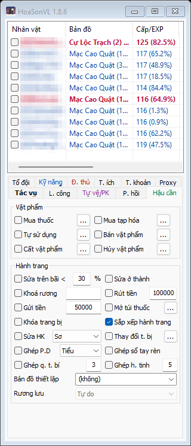
Tab Hậu cần (thiết lập mặc định).
Khung Vật phẩm
Sáu danh sách, mỗi danh sách một ô tick (bật) và nút "…" mở cửa sổ riêng để thêm món (xem mục kế tiếp). Số trên nút là số món trong danh sách.
Mua thuốcỞ thành, trong túi ít hơn Min thì mua ở tiệm thuốc cho đủ Max.Mua tạp hóaNhư trên ở tiệm tạp hoá (Thổ địa phù, Hồi Thành Phù…).Tự sử dụngTự dùng các món này khi có trong túi (Tiên Thảo Lộ, Thiên Sơn Ngọc Lộ, Ngọc Lộ Hoàn…). Món có hiệu ứng thì chờ hết hiệu ứng mới dùng lại; món bot không biết thì 15 giây một lần. Có nhiều loại Tiên Thảo Lộ thì món sắp hết hạn được dùng trước, không theo thứ tự danh sách. Phù di chuyển (Thổ địa phù, Hồi Thành Phù, Tiêu Dao Phù, Thần Hành Phù) có ghi ở đây cũng bị bỏ qua: bot tự dùng chúng khi cần đi.Bán vật phẩmỞ thành, bán ở tiệm gần nhất các món không khóa có tên chứa chữ đã ghi. Đồ khóa game không cho bán: dùng Hủy vật phẩm.Cất vật phẩmỞ thành, tới rương gần nhất cất các món có tên chứa chữ đã ghi vào rương đã chọn (rương chưa thuê thì bỏ qua). Cất thì không bán.Hủy vật phẩmĐồ khóa không bán được: đem tới Quản Sự Nha Phủ ở thôn / trấn (thành không có) để game thu hồi. Chỉ món khóa trong túi đạo cụ khớp danh sách (tên, cấp). Lúc nào thì đi hủy: ô Hủy khi ≥ trong cửa sổ danh sách.
Khung Hành trang
Sửa trên bãi < … %Đang luyện công mà một món đang mặc còn dưới mức này (% độ bền) thì sửa từ xa ngay tại bãi, trả bằng tiền mang theo. Mặc định 30 %.Sửa ở thànhMỗi lần vào thành, có món mòn quá 5 % thì sửa các món đã mòn (từ xa, ngay khi tới). Muốn sửa ngay ở bất cứ đâu: Shift+Z.Khoá rương + mật khẩuRương có mật khẩu (số) thì ghi vào để bot mở khoá trước khi chuyển đồ, xong khoá lại.Rút tiền + sốLượt hậu cần có món cần sửa / mua thì rút từ rương (từ xa, trong thành) cho hành trang có sẵn số này trước; không có gì cần làm thì không rút. Đang sửa / mua mà vẫn thiếu thì rút bù, dù có tick hay không. Alt+X trong game: rút ngay số này từ xa (ở khu phi chiến đấu), bấm mấy lần rút mấy lần.Gửi tiền + sốLúc rảnh ở khu an toàn (và cuối mỗi lượt hậu cần), hành trang giữ đúng số này: thừa gửi rương, thiếu rút ra. Chết ngoài bãi không mất tiền trong rương, nên nên bật.Mở túi thuốcCòn ít bình máu / mana thì mở túi thuốc (Cẩm Nang Xích Hà Đơn…) lấy bình ra. Nút "…" đặt luật: mở khi nào, kích hoạt ở số bình nào, lấy ít nhất bao nhiêu, giữ lại bao nhiêu ô trống (ảnh ở dưới). Tự mở ở khu chiến đấu thì bot chờ tới khi trong khoảng 700 quanh mình không còn quái và người chơi địch, vì bị đánh là mở hỏng. Đánh Tống Kim: chỉ mở trong trại, sau khi nhận thuốc miễn phí, trước khi mua. Mở ngay (mọi bản đồ, không chờ): Ctrl+X.Khóa trang bịTrang bị đang mặc không bị vứt, không bị rã, cả khi bạn tháo ra bỏ vào túi trong lúc bot chạy; vứt bằng tay cũng bị game từ chối. Nên bật.Sắp xếp hành trangDời đồ trong túi đạo cụ cho các ô trống liền nhau thành một khối rộng 2–3 ô (nhận thưởng, mua, nhặt, giao nộp cần chỗ như vậy: 1 x 6 không được, 2 x 3 thì được). Chạy khi một tác vụ cần N ô trống (game báo), và lúc luyện công trên bãi: túi đổi mà khối trống liền nhau còn dưới 8 ô thì xếp xen giữa các đòn, kể cả khi ô trống nằm rải rác (phù về thành thì dừng). Không tự chạy ở thành, không chạy khi bật Auto PK. Mặc định bật.Sửa HK + kiểuSửa cả đồ Hoàng Kim / Bạch Kim khi bot sửa đồ. Sơ: rẻ nhưng giảm độ bền tối đa (chỉ sửa khi mòn từ 10 điểm). Kỹ: gấp 3 tiền, giữ nguyên độ bền tối đa. Sơ + TT / Kỹ + TT: dùng thêm Thủy Tinh (Lam / Tử / Lục, không khóa; chỉ có ở túi hành trang thì bot lấy ra 1 viên) để bù độ bền tối đa đã mất, mỗi viên +25 tới mức gốc. Không tick: bot để yên đồ HK (không sửa, không về thành vì độ bền HK thấp). Đồ HK hỏng hẳn chỉ Thợ rèn sửa được: bot chưa làm.Thay đổi t. bịMặc bộ PvP khi Auto PK và trong các trận PvP (Tống Kim, Liên đấu, Cấm Địa, Hiệp Phong, Ngũ Hành Trận), bộ Luyện công khi làm việc khác, theo hai danh sách ở nút "…" (ảnh ở dưới). Lấy món từ túi đạo cụ / túi hành trang / rương; món bị thay đặt vào chỗ món mới. Ở Tống Kim bot thay đồ ở trại và điểm báo danh, chỉ lấy đồ trong túi. Món trong hai danh sách không bao giờ bị lọc, rã, bán, cất, hủy, chia sẻ, giao hay vứt.Ghép P.D + kiểuỞ khu an toàn: 10 Phúc Duyên Lộ (Tiểu) trong túi đạo cụ ghép thành 1 (Trung), tới khi còn dưới 10. Chọn Trung thì ghép thêm 5 Trung thành 1 Đại. Làm trước mọi tác vụ, mất vài giây.Ghép sổ tay rènỞ khu an toàn, có từ 2000 Mảnh Trang Bị thì đổi 2000 mảnh lấy 1 Sổ Tay Rèn, lần này tới lần khác. Mảnh nằm ở túi hành trang (Trợ Thủ của game hay tự cất vào đó) thì bot lấy nguyên chồng sang túi đạo cụ trước; mảnh trong rương không đụng. Tick cả Rèn (tab T. ích) thì việc nào chạy trước lấy mảnh trước.Ghép q. t. bí + cấpỞ khu an toàn: ghép 6 Quà Thần Bí-Luân Hồi cùng cấp lên một cấp, từ cấp thấp lên tới cấp đã ghi (2–6). Cần Cuộn Sách Luân Hồi Tăng Cấp (có ở túi hành trang thì bot lấy ra dùng; không có thì lượt hậu cần mua ở tạp hoá). Các chồng lẻ cùng cấp cộng lại đủ 6 thì bot gộp lại trước rồi mới ghép. 3 lần không ghép được thì thôi hôm nay.Ghép h. tinh + cấpTrong thành: ghép 3 Khoáng Thạch Huyền Tinh cùng cấp thành 1 viên cấp trên, tới cấp đã ghi (2–10), như "Đúc vật phẩm" của Thợ Rèn nhưng gọi từ chỗ đứng (không được thì tới Thợ Rèn). Tốn tiền: 3500 tới cấp 3, khoảng 110000 từ cấp 4 (thiếu thì rút rương). Khoá ghép với khoá, không khoá với không khoá. Thất bại mất một viên.Bản đồ thiết lậpThôn / trấn / thành mà Thổ địa phù đưa về (phù đưa về rương chạm lần cuối). Lỡ vào thành khác thì bot về đây làm hậu cần và chạm rương ở đây. Để (không): bot tự lấy thành / thôn có rương gần bãi luyện công.Rương lưuChỉ bật khi Bản đồ thiết lập là một trong 7 thành: chọn rương bot chạm để lưu điểm Thổ địa phù trước khi ra bãi. Lượt hậu cần ở thành đó cũng đi thẳng tới rương này để cất đồ. Tự do: rương nào cũng được (rương gần chỗ Xa Phu / phù vừa đưa tới). Đông / Tây / Nam / Bắc / Trung Tâm: rương gần điểm cùng tên của Thần Hành Phù (Thành Đô Đông…). Mỗi thành chỉ hiện những hướng nó có: Lâm An không có Tây, Đại Lý chỉ có Bắc và Trung Tâm, Biện Kinh Đông và Nam là một chỗ. Thôn / trấn: ô này tắt, bot dùng rương gần nhất. NV Mặc Thạch vẫn lưu rương gần Mặc Thạch; Auto PK không đi lưu rương.
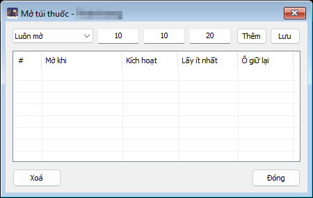
Mở túi thuốc: chỉnh bốn ô trên cùng rồi bấm Thêm (hoặc chọn một dòng, sửa, bấm Lưu). Mỗi dòng là Mở khi (Luôn mở, hoặc chỉ khi bot đang làm việc đó: Luyện công, Auto PK, Tống Kim…) · Kích hoạt (còn từ bấy nhiêu bình trở xuống thì mở) · Lấy ít nhất (mỗi lần lấy ra ít nhất bấy nhiêu bình) · Ô giữ lại (số ô trống túi đạo cụ chừa lại: lấy ra = số ô trống trừ số này, nhưng không ít hơn Lấy ít nhất). Chưa có dòng nào thì bot dùng Luôn mở, 10, 10, 20.
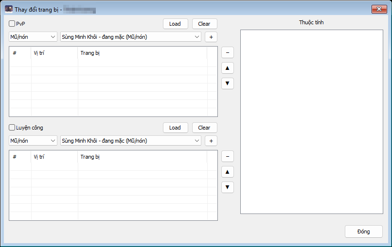
Thay đổi trang bị. Mỗi bộ (PvP, Luyện công) có ô tick bật riêng. Chọn ô trang bị ở hộp trái, chọn món ở hộp phải (món hợp ô đó đang mặc, trong túi đạo cụ, túi hành trang, rương), bấm +. Các dòng tick được mặc theo thứ tự từ trên xuống; một ô có thể ghi nhiều lần (món trung gian cho đủ sức mạnh / thân pháp rồi mới mặc món sau), ô đó kết thúc bằng món ở dòng tick cuối cùng. Load: lấy nguyên bộ đang mặc (10 ô + Chiến ấn), thay các dòng cũ. Clear: xoá hết. − ▲ ▼: xoá, đổi thứ tự. Khung Thuộc tính bên phải hiện thuộc tính món đang chọn.
Các cửa sổ danh sách (nút "…")
Tám danh sách dùng chung một kiểu cửa sổ. Sáu cái mở từ nút "…" ở khung Vật phẩm của tab Hậu cần; Giao vật phẩm và Gom vật phẩm mở từ nút "…" cạnh ô cùng tên ở tab T. ích (khung Vật phẩm). Cửa sổ là của nhân vật đang chọn ở bảng nhân vật (tên trên thanh tiêu đề); mỗi thay đổi được lưu ngay.
Bảng ở trên, ô nhập ở dưới. Gõ hoặc chọn tên món ở ô thả xuống (hộp liệt kê hàng tiệm bán và món đang có trong túi; gõ để tìm, hoặc gõ tên khác), điền các ô, bấm Thêm (trùng tên và hoạt động thì ghi đè dòng đó). Chọn một dòng, sửa rồi bấm Lưu để ghi đè dòng đó. Bỏ tick đầu dòng là tạm không dùng dòng đó, dòng vẫn giữ. Nút bên phải: ✕ xoá dòng, ▲ ▼ đổi thứ tự, ⋯ lưu danh sách ra tệp (cho nhân vật khác nạp) / nạp từ tệp / xoá hết.
Cột Hoạt động: dòng chỉ dùng khi bot đang làm việc đó (Luyện công, Auto PK, Làm nhiệm vụ, Liên đấu, Phong Lăng Độ, Trường Ca, Hiệp Phong, Cấm Địa Phái, Tống Kim, Ngũ Hành Trận); Không giới hạn là luôn dùng. Cột Cấp: khoảng cấp của món (để trống là mọi cấp; một cấp thì ghi cùng số ở hai ô). Cột Khóa (chỉ Tự sử dụng và Cất): Khóa / không khóa, Chỉ món khóa, Chỉ món không khóa.
Mua thuốc
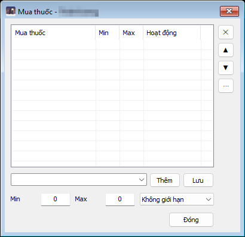
Min / Max: trong túi ít hơn Min thì mua cho đủ Max. Ví dụ Xích Hà Đơn 5 / 10: còn 4 bình thì về thành mua lên 10.
Mua tạp hóa
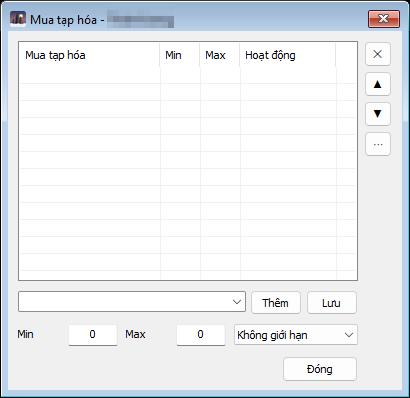
Như Mua thuốc, ở tiệm tạp hoá. Ví dụ Thổ địa phù 2 / 5 để luôn có phù về thành.
Tự sử dụng
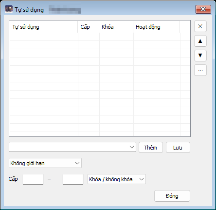
Có Cấp, Khóa và Hoạt động. Một món có thể ghi nhiều dòng với hoạt động khác nhau, như Ngọc Lộ Hoàn (Đại) chỉ khi Auto PK.
Bán vật phẩm
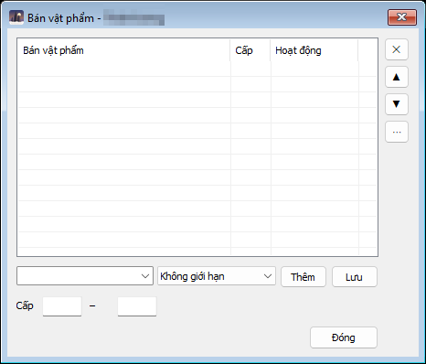
Tên, khoảng cấp, hoạt động. Chỉ bán món không khóa. "Khoáng Thạch Huyền Tinh 1–2" là bán huyền tinh cấp 1 và 2, giữ cấp cao hơn.
Cất vật phẩm
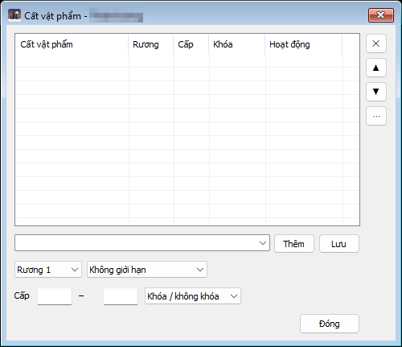
Thêm ô chọn Rương: Rương 1 là rương chính, Rương 2–4 là các rương thuê thêm. Rương chưa thuê thì bỏ qua.
Hủy vật phẩm
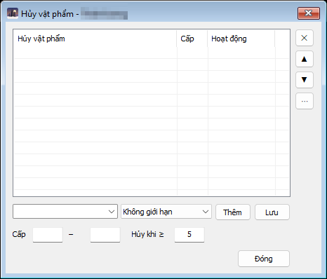
Chỉ món khóa. Hủy khi ≥ (mặc định 5): trong túi đạo cụ có đủ chừng này món khớp thì đi hủy từ bất cứ đâu, để không chạy tới nha phủ vì một món. Ghi 0: chỉ hủy khi đã về thành / thôn (ở thôn / trấn có Quản Sự Nha Phủ thì hủy ngay; ở thành thì sang thôn / trấn cùng khu).
Giao / Gom vật phẩm
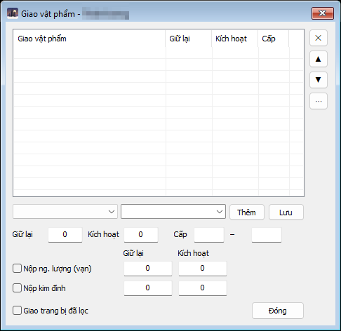
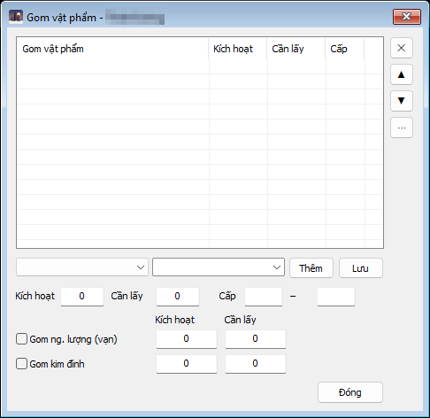
Dùng cặp: nhân vật A bật Giao vật phẩm, nhân vật B bật Gom vật phẩm (tab T. ích). Món có trong cả hai danh sách (đang tick) thì A đem giao cho B; chỉ món không khóa. Hai danh sách này không có cột Hoạt động: chỉ giao / gom khi cả hai đang luyện công.
Ô thả xuống đầu tiên là danh sách cố định: các nhóm <Trang bị> theo loại (mọi món loại đó, không khóa) và các vật phẩm hay giao / gom. Chọn một dòng là điền vào ô tên bên cạnh, rồi bấm Thêm. Hai nhân vật giao / gom phải chọn cùng một dòng. Ô tên bên cạnh liệt kê món đang có trong túi / rương.
Bên Gom: Kích hoạt là có ít hơn số này mới gom (0 = luôn nhận), Cần lấy là lấy bao nhiêu một lần (0 = có bao nhiêu nhận bấy nhiêu).
Bên Giao: Kích hoạt là có đủ số này mới đi giao (0 = có là giao), Giữ lại là chừa lại bao nhiêu (0 = giao hết).
Nộp / Gom ng. lượng (vạn) và Nộp / Gom kim đỉnh: tick và hai số, làm tương tự cho tiền (tính cả túi lẫn rương) và kim đỉnh.
Giao trang bị đã lọc (chỉ bên Giao): giao luôn các trang bị bộ lọc đã giữ lại lúc nhặt (đạt Lọc trang bị, đồ hiếm), không khóa, ngay sau một lần giao vật phẩm khi hai bên còn đứng cạnh nhau. Không tick: giữ lại.
Bên Gom (đang luyện công) xếp hàng các nhân vật Giao có món khớp, người cùng thành trước, rồi gọi lần lượt, mỗi lượt một người; giữa các lượt bên Gom đứng chờ ở thành. Mỗi lượt cả hai về thành, giao, rồi quay lại việc cũ. Nhân vật Giao đang bận (sự kiện, Auto PK, tạm dừng) hoặc giao không được thì 10 phút sau mới xếp lại. Gom xong cả hàng (hoặc thôi giữa chừng), bên Gom làm hậu cần một lần ở thành; bên Giao cũng vậy sau khi giao xong.
Tab Tổ đội
Đặt ai vào đội ai, ai đi theo ai. Việc theo sau bật / tắt bằng ô Tự theo sau ở tab Tác vụ (khung Chung, mặc định bật, chạy khi Luyện công hoặc Auto PK đang bật); tab này đặt theo ai và theo thế nào.
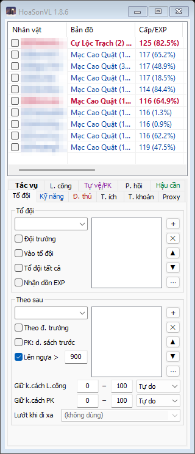
Tab Tổ đội (thiết lập mặc định).
Hai danh sách tên: gõ tên hoặc chọn từ hộp thả xuống (hộp liệt kê nhân vật trong bot, đồng đội của họ và người chơi đang ở quanh nhân vật đang chọn), bấm + để thêm vào sau dòng đang chọn; ✕ xoá, ▲ ▼ đổi thứ tự. Bỏ tick một tên là tạm bỏ qua người đó, tên vẫn giữ trong danh sách. Nút ⋯ lưu danh sách ra tệp để nhân vật khác nạp lại, nạp từ tệp hoặc xoá hết.
Khung Tổ đội
Danh sách là thứ tự ưu tiên: người ở trên là đội trưởng được ưu tiên. Chỉ ai có tên ở đây mới được mời hoặc nhận vào đội.
Đội trưởngTự lập đội và mời các tên trong danh sách khi thấy họ. Chỉ tick ô này (không tick Vào tổ đội): chỉ tự dẫn đội, không bao giờ vào đội người khác, đang ở đội người khác thì rời. Tick thêm Vào tổ đội: thấy một người đứng trên mình trong danh sách đang dẫn đội thì rời đội mình, xin vào đội họ.Vào tổ độiNhận lời mời hoặc tự xin vào đội của đội trưởng đầu tiên trong danh sách; đang ở đội khác thì rời để vào.Tổ đội tất cảLà đội trưởng: mời mọi người chơi đang thấy. Không phải đội trưởng: vào đội của bất kỳ đội trưởng nào gần nhất. Dùng khi đi sự kiện với người lạ.Nhận dồn EXPLuyện công trong tổ đội: các nhân vật khác của bot trong đội nhường đòn kết thúc quái (điểm kinh nghiệm) cho nhân vật này, chỉ đánh tới khi máu quái còn vừa đủ cho nó kết liễu rồi sang con khác / đứng chờ. Nhiều nhân vật cùng tick thì người đứng trước trong danh sách Tổ đội của đội trưởng được nhận. Nhân vật này rời bãi (nhiệm vụ, về thành, tạm dừng, chết, khác bản đồ) thì cả đội đánh bình thường ngay. Chỉ áp dụng cho quái lúc luyện công, không cho Tự vệ, đồ sát, đánh trả, Auto PK.
Vào đội ai (luật cố định):
Xét danh sách Tổ đội từ trên xuống. Tick Đội trưởng thì chỉ xét những người đứng trên tên mình; chỉ tick Vào tổ đội thì xét cả người đứng dưới. Không bao giờ vào đội của nhân vật đang làm nhiệm vụ (Môn phái, Hằng ngày, Mặc Thạch).
Lúc luyện công chỉ tính người đang thấy quanh mình đang dẫn đội. Đã ở đội của người đứng trên mình thì ở lại, kể cả khi họ khuất.
Tick Đội trưởng mà tên mình không có trong danh sách: danh sách là những người mình dẫn, không ai đứng trên mình.
Chỉ vào đội / theo sau nhân vật trong bot cùng máy chủ game.
Đội vừa đổi để đổi màu (Đổi phe đ. trưởng, Tự vệ "Chuyển phe", Tự đồ sát) được giữ nguyên chừng nào còn lý do, không rã ra lập lại theo thứ tự danh sách.
Khung Theo sau
Danh sáchTheo người đầu tiên trong danh sách đang có mặt (khi không theo đội trưởng). Thứ tự tính từ trên xuống tới tên mình; đứng đầu danh sách nghĩa là không theo ai. Mình đang là đội trưởng vẫn đi tìm người đứng trước mình trong danh sách (gặp rồi thì vào đội họ theo luật trên). Tick Luyện công: chỉ theo người cùng bản đồ trong tầm nhìn; khuất thì chỉ theo khi người đó là nhân vật trong bot cũng đang luyện công; người ở bản đồ khác thì ở lại bãi. Auto PK hoặc chỉ theo sau (không tick Luyện công): theo cả sang bản đồ khác, tới chỗ bot biết nhân vật trong bot đang đứng; riêng khi mình đang ở nơi không có đường ra (chiến trường Tống Kim, Cấm Địa, sơn trang Trường Ca) thì không ra theo, đánh tại chỗ. Người đang ở Đại lao hoặc đang làm nhiệm vụ thì không theo.Theo đ. trưởngƯu tiên đi theo đội trưởng của tổ đội trước, rồi mới tới danh sách.PK: d. sách trướcKhi Auto PK thì theo người trong danh sách trước, đội trưởng sau (luyện công vẫn theo đội trưởng trước).Lên ngựa >Mọi quãng đi xa hơn số này (đi lộ trình, về bãi, theo sau, tới tiệm / Xa Phu…) thì lên ngựa trước. Mặc định bật, 900.Giữ k.cách L.côngLuyện công / theo sau thường: không đứng gần hơn số đầu, không để xa hơn số sau so với người được theo (xa hơn thì đi lại gần). Ô bên cạnh chọn đứng phía nào của người đó (Trước, Trước-phải, Phải, Sau-phải, Sau, Sau-trái, Trái, Trước-trái) để nhiều nhân vật theo sau không dồn một chỗ bị đánh chùm; "Trước" là hướng tới mục tiêu người đó đang đánh, không đánh thì hướng vừa đi, đội hình xoay theo. Tự do: chỉ giữ khoảng cách.Giữ k.cách PKNhư trên, dùng khi Auto PK.Lướt khi đi xaThiên Vương: dùng Đoạn Hồn Thích lướt về phía trước khi đi xa (đi lộ trình, về bãi, theo sau), ngoài thành, tối đa mỗi 1,5 giây một lần. Phái khác không có kỹ năng lướt: ô bị khóa.
"Đội trưởng" trong mọi thiết lập nghĩa là: trong tổ đội thì là đội trưởng của đội; không có tổ đội thì là người mình đang theo sau (người đầu tiên của danh sách Theo sau đang có trong bot). Nhân vật đang làm nhiệm vụ (Môn phái, Hằng ngày, Mặc Thạch) không theo sau ai và không được tính là đội trưởng để theo. Nhân vật đang Luyện công Tân thủ ở trong đội mà đội trưởng là nhân vật trong bot thì tự theo sau đội trưởng đó (như tick Tự theo sau và Theo đ. trưởng), không cần đặt gì ở tab này. Bỏ tick Đánh lẻ ở tab L. công thì nhân vật chỉ đánh khi đã vào đội và thấy đội trưởng.
Tab Kỹ năng
Bot ra chiêu gì, theo thứ tự nào, buff gì lên mình và đồng đội, và phím đánh tay.
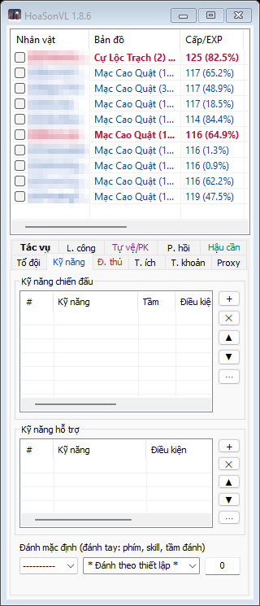
Tab Kỹ năng.
Khung Kỹ năng chiến đấu
Danh sách có thứ tự, các cột: # (kèm ô tick), Kỹ năng, Tầm, Điều kiện, Mục tiêu, Tác vụ. Mỗi lần ra chiêu, bot lấy dòng đầu tiên đủ điều kiện (đã hồi chiêu, hợp vũ khí đang cầm, đúng tác vụ, đúng loại mục tiêu). Nên để chiêu mạnh ở trên, chiêu cơ bản ở cuối làm dự phòng. Danh sách trống thì bot đánh bằng kỹ năng đang chọn trong game.
+Thêm một dòng (mở hộp Thêm kỹ năng). Bấm đúp hoặc chuột phải một dòng để sửa dòng đó.✕Xoá dòng đang chọn.▲ ▼Đưa dòng đang chọn lên / xuống.⋯Lưu danh sách ra tệp (cho nhân vật khác cùng phái nạp), nạp từ tệp, hoặc xoá hết.Ô tick đầu dòngBỏ tick: dòng vẫn nằm trong danh sách nhưng tạm không dùng.
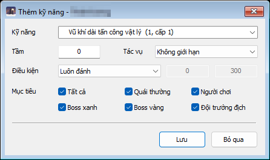
Hộp thêm / sửa một dòng kỹ năng chiến đấu.
Kỹ năngChọn trong các kỹ năng nhân vật đã học (tên và cấp đọc từ game), gõ để tìm.TầmTầm đánh (pixel). 0 là tầm của kỹ năng trong game (cột Tầm ghi "game").Tác vụChỉ dùng dòng này khi bot đang làm việc đó; Không giới hạn là luôn dùng. Cách bot chọn dòng theo việc: xem "Dòng theo việc" bên dưới.Điều kiện + hai sốKhi nào được dùng dòng này (bảng dưới). Ô số thứ nhất là mức (ms, %, pixel hoặc số quái); ô thứ hai chỉ dùng cho Đ. đông. Điều kiện không cần số thì hai ô bị khoá.Mục tiêuDòng này được đánh lên ai: Quái thường, Người chơi, Boss xanh (tên xanh, tinh anh), Boss vàng (mạnh hơn boss xanh), Đội trưởng địch, hoặc Tất cả. Đội trưởng địch bot chưa nhận ra được trong game: dòng chỉ tick mục này chưa được dùng.Lưu / Bỏ quaGhi dòng vào danh sách rồi đóng / đóng mà không ghi.
Điều kiện
Dùng dòng khi
Luôn đánh
Lúc nào cũng được.
Giãn cách (ms)
Đã qua chừng ấy mili giây từ lần ra chiêu trước của dòng này.
HP mục tiêu (%) < / >
Máu mục tiêu dưới / trên mức %.
K.C đến mục tiêu < / >
Mục tiêu gần hơn / xa hơn số pixel.
Mục tiêu di chuyển
Mục tiêu đang đi, chạy hoặc nhảy.
HP bản thân (%) < / >
Máu của mình dưới / trên mức %.
MP bản thân (%) < / >
Nội lực của mình dưới / trên mức %.
Bùa chú
Dòng là bùa: chỉ ra lên đối thủ chưa dính bùa đó. Chọn một kỹ năng bùa thì hộp tự đặt điều kiện này.
Đ. đông (mục tiêu)
Quanh mục tiêu (tính cả nó) có ít nhất số quái ở ô thứ nhất trong phạm vi ô thứ hai (mặc định 3 quái trong 600 px). Cho chiêu đánh lan.
Bùa ra trước, một lượt rồi mới đánh: các dòng Bùa chú được xét trước mọi dòng khác. Bot ra bùa lên lần lượt các đối thủ trong tầm của bùa, không ra lặp lên con đã dính, xong một lượt mới đánh bằng các dòng còn lại; bùa hết tác dụng thì ra lại. Đối thủ ở ngoài tầm bùa thì các dòng khác lo. Dùng khi luyện công, Auto PK và tự vệ.
Dòng theo việc: dòng Không giới hạn dùng ở mọi việc; ngoài ra bot lấy thêm các dòng của việc đang làm: Luyện công (đang bật Auto PK thì dòng Auto PK), Làm nhiệm vụ (NV Môn phái, NV Hằng ngày…), Liên đấu, Tống Kim (trong chiến trường), Trường Ca (trong sơn trang), Phong Lăng Độ (trên thuyền), Hiệp Phong, Ngũ Hành Trận. Việc chưa có dòng riêng nào thì bot mượn: nhiệm vụ, Trường Ca, Phong Lăng Độ dùng dòng Luyện công; Hiệp Phong, Ngũ Hành Trận, chiến trường Tống Kim dùng dòng Auto PK. Liên đấu chỉ dùng dòng Liên đấu và Không giới hạn. Kỹ năng hỗ trợ được xét riêng theo cùng cách.
Ngựa: ở Liên đấu, chiến trường Tống Kim và khi Giữ k. cách với người chơi (tab Đ. thủ), danh sách có một kỹ năng phải đánh dưới đất thì bot xuống ngựa để đánh; danh sách toàn kỹ năng đánh được trên ngựa (Thiếu Lâm Đao, Đường Môn Nỏ…) thì giữ ngựa. Giữ k. cách với quái không làm bot xuống ngựa.
Thiếu nội lực / máu: mọi dòng đánh quái đều đòi điều kiện nội lực hay máu của mình (ví dụ "MP bản thân (%) > 50") mà chưa đủ thì cột Tác vụ và dòng trạng thái trên đầu nhân vật ghi rõ, ví dụ "nội lực 30%, skill cần > 50%, chờ", thay vì "không có quái cần dùng skill".
Khung Kỹ năng hỗ trợ
Buff tự dùng lên mình hoặc đồng đội, xét từ trên xuống. Các cột: # (kèm ô tick), Kỹ năng, Điều kiện, Mục tiêu, Tác vụ; các nút + ✕ ▲ ▼ ⋯ và ô tick đầu dòng như khung trên.
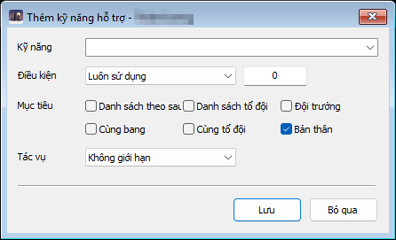
Hộp thêm / sửa một dòng kỹ năng hỗ trợ.
Kỹ năngKỹ năng hỗ trợ đã học, gõ để tìm.Điều kiện + sốLuôn sử dụng: dùng lại khi hiệu ứng không còn trên người (hào quang: luôn bật). Giãn cách (ms): mỗi chừng ấy mili giây. Sinh lực (%) <: khi máu dưới mức.Mục tiêuDanh sách theo sau, Danh sách tổ đội (hai danh sách ở tab Tổ đội), Đội trưởng (trong tổ đội là đội trưởng; không tổ đội là người mình đang theo sau), Cùng bang, Cùng tổ đội (thành viên tổ đội hiện tại), Bản thân. Chọn nhiều thì buff lần lượt cho những người đó khi họ ở gần. Phải tick ít nhất một mục. Hào quang tự phủ người cùng màu ở gần nên các ô mục tiêu bị khoá.Tác vụNhư dòng kỹ năng chiến đấu: chỉ dùng khi bot đang làm việc đó; Không giới hạn là luôn.
Hào quang: có nhiều dòng hào quang thì bot luân phiên để hưởng được nhiều vòng. Với hào quang, Giãn cách là thời gian giữ mỗi vòng ít nhất; 0 là bot tự canh theo hiệu ứng.
Đánh mặc định (đánh tay: phím, skill, tầm đánh)
Cho lúc bạn tự cầm chuột; bot không dùng ô này khi tự đánh.
Phím---------- là tắt; chọn SPACE hoặc Phím A–Z. Nhân vật đang tick và cửa sổ game của nó ở trên cùng: nhấn phím đó là ra kỹ năng ở ô bên cạnh về hướng con trỏ chuột, như phím kỹ năng của game nhưng ra sớm hơn, kể cả khi đối thủ còn ngoài tầm. Phím này không còn vào game nữa (chọn phím bạn không dùng để chat).Kỹ năngKỹ năng ra khi nhấn phím (gõ để tìm). * Đánh theo thiết lập *: lấy dòng đầu tiên trong Kỹ năng chiến đấu đang đủ điều kiện với đối thủ gần nhất.Ô sốTầm đánh (pixel) khi ra chiêu bằng phím này; 0 là tầm của kỹ năng.
Tab Đ. thủ
Ai được đánh và ai đánh trước, dùng cho mọi việc có đánh (luyện công, Auto PK). Cả tab là một khung Lựa chọn đối thủ.
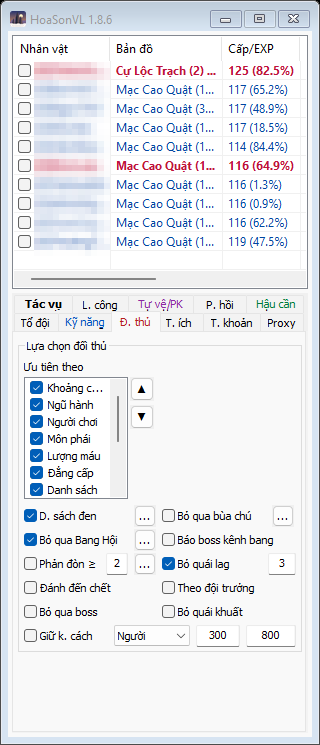
Tab Đ. thủ.
Ưu tiên theo
Danh sách bên trái: so lần lượt từ trên xuống, ai hơn ở mục trên thì đánh trước; bằng nhau ở mọi mục đang tick thì đánh kẻ đang nhắm vào mình trước, rồi tới kẻ gần hơn. Tick mục nào dùng mục đó, ▲ ▼ đổi thứ tự. Thứ tự mặc định: Khoảng cách, Ngũ hành, Người chơi, Môn phái, Lượng máu, Đẳng cấp, Danh sách, Đội trưởng, Boss, Danh hiệu, Bùa chú (cuộn xuống để thấy hết).
Khoảng cách: gần trước, tính theo bậc 150 px (hai đối thủ gần như nhau thì xét mục dưới).
Người chơi: gặp người chơi là đánh trước quái.
Môn phái: người chơi trước quái; giữa người chơi theo thứ tự môn phái ở ô bên phải. Ngũ hành: cả người lẫn quái theo thứ tự hệ ở ô bên phải.
Lượng máu: ít máu (theo %) trước. Đẳng cấp: cấp thấp trước. Boss: boss trước. Đội trưởng: mục tiêu đội trưởng đang đánh trước.
Danh sách: tên trong D. sách ưu tiên trước. Danh hiệu: người chơi mang danh hiệu trong D. sách danh hiệu trước. Bùa chú: đối thủ đang dính bùa trong Bùa chú ưu tiên trước (danh sách trống: bùa bất kỳ). Cả ba theo thứ tự trong danh sách.
Ô bên phải: bấm chọn (bôi đen) mục Môn phái, Ngũ hành, Danh sách, Danh hiệu hoặc Bùa chú thì danh sách thứ hai hiện ra bên phải, có ▲ ▼ riêng để sắp; chọn mục khác thì nó ẩn đi. Với Danh sách, Danh hiệu, Bùa chú có thêm nút "…" để thêm, xoá tên.
Bỏ qua từng môn phái / hệ: ở danh sách "Thứ tự môn phái" / "Thứ tự hệ" bên phải, mỗi dòng có ô tick. Bỏ tick một dòng là không đánh người chơi môn phái đó / người và quái hệ đó. Chỉ có tác dụng khi mục Môn phái / Ngũ hành bên trái đang tick.
Bỏ qua và giới hạn
D. sách đenKhông đánh NPC / quái / người có tên trong danh sách (nút "…"). Dùng để tránh lính gác thành, Cửa Thành, NPC sự kiện. Mặc định bật.Bỏ qua bùa chúKhông đánh đối thủ đang dính các bùa trong danh sách. Nút "…" mở danh sách các bùa của game để tick, không phải gõ tên.Bỏ qua Bang HộiKhông đánh người cùng bang và người của các bang trong danh sách (nút "…" chọn từ các bang đang ở quanh nhân vật). Bot so tên bang, phần danh hiệu nhóm phía sau không tính (ghi "_M" là gồm cả "_M|Mõm"). Người các bang này cũng không bị tự vệ đánh trả. Mặc định bật; bật / tắt nhanh bằng Ctrl+B.Báo boss kênh bangBoss 90 lúc 19:30 và 21:30: gom đủ 2 toạ độ boss ở bản đồ 9x (từ thông báo boss xuất hiện) thì nhắn một lần vào kênh bang. Mỗi bang chỉ nhắn một lần, do nhân vật được tick đầu tiên của bang đó.Phản đòn ≥ … %Bot tự học quái phản đòn lúc đánh: đòn trúng mà máu mình mất ngay từ số % này (của máu tối đa) trở lên, gần như mỗi đòn, đều đặn, thì ghi tên quái vào danh sách (nút "…" để xem, xoá) rồi không đánh nó nữa. Chỉ học khi quanh mình không có quái / người khác.Bỏ quái lag … giâyĐánh mãi một con không mất máu quá số giây này (bị tường chặn, lag) thì bỏ, 15 giây sau xét lại. Mặc định bật, 3 giây.Đánh đến chếtĐã chọn ai thì đánh tới chết (khi còn trong tầm), không đổi sang mục tiêu gần / ưu tiên hơn.Theo đội trưởngĐánh cùng mục tiêu với đội trưởng (trong tổ đội: đội trưởng; không tổ đội: người mình đang theo sau).Bỏ qua bossKhông đánh boss (tên xanh / vàng). Bật / tắt nhanh bằng Ctrl+O.Bỏ quái khuấtKhông đánh quái bị vật cản che.Giữ k. cách + loại + hai sốĐang đánh loại đối thủ đã chọn (Boss, Người, Boss & người, Tất cả, Quái thường) mà nó gần hơn số đầu hoặc xa hơn số sau (pixel) thì ngừng đánh, lùi ra / lại gần tới giữa hai số, vào khoảng rồi mới đánh tiếp. Cho phái đánh xa giữ khoảng cách với boss hoặc người. Giữ khoảng cách với người chơi mà danh sách kỹ năng có chiêu phải đánh dưới đất thì bot xuống ngựa; với quái thì không.
Tên viết lệch dấu: game hay đặt dấu thanh lệch chỗ. D. sách đen, D. sách ưu tiên và danh sách quái phản đòn vẫn nhận ra tên khi dấu thanh nằm ở chữ khác hay thừa dấu cách ở đầu / cuối.
Ở chiến trường Tống Kim, Liên đấu, Liên Đấu Bang và sàn đấu Hiệp Phong, các ô bỏ qua của tab này (danh sách đen, bang, bùa, boss, môn phái / hệ bỏ tick, quái khuất…) không dùng: ở đó bot đánh mọi kẻ địch game chia phe. Tự đồ sát "Đs t.cả" (tab Tự vệ/PK) cũng tránh người trong D. sách đen và Bỏ qua Bang Hội.
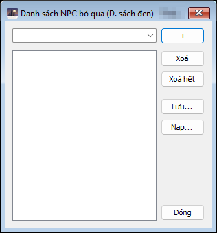
Cửa sổ danh sách tên, dùng chung cho mọi danh sách tên trong bot (đen, ưu tiên, danh hiệu, cừu sát, bang…): gõ hoặc chọn tên quanh nhân vật ở ô trên, bấm +; tick để dùng, bỏ tick là tạm không dùng; Xoá / Xoá hết; Lưu… / Nạp… ra tệp (Nạp thêm vào danh sách của mọi nhân vật đang chọn, không trùng tên).
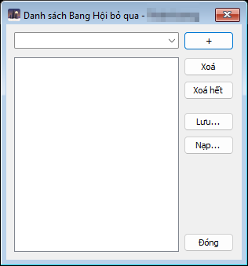
Danh sách Bang Hội bỏ qua: ô trên liệt kê các bang đang ở quanh nhân vật.
Tab T. ích
Các việc nhỏ bot làm xen kẽ (nhận thưởng, điểm danh, đọc thư…), vài thứ hiển thị thêm trong game, và việc giữa các nhân vật (chia sẻ, gom, giao, rèn). Trước đây là hai trang con "Thưởng, tiện ích" và "Chia sẻ, gom, giao, rèn".
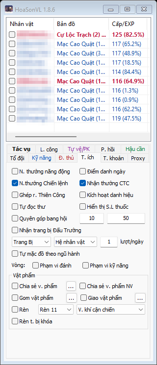
Tab T. ích (thiết lập mặc định).
Thưởng, tiện ích
Phần trên của tab (không có khung). Các việc này không cần xếp thứ tự.
N. thưởng năng độngNhận thưởng ở các mốc 10 / 25 / 55 / 80 điểm năng động.Điểm danh ngàyĐiểm danh mỗi ngày và nhận kinh nghiệm ngoại tuyến.N.thưởng Chiến lệnhNhận các mốc cấp chiến đã đạt (hàng miễn phí) và nhiệm vụ ngày / tuần đã xong (nút Nhận). Cùng một ô với "Nhận thưởng Chiến lệnh" trong hộp của tác vụ Chiến lệnh. Ngoài mùa Chiến Lệnh thì bỏ qua. Mặc định bật.Nhận thưởng CTCSau Công Thành Chiến, nhân vật đã vào trận hôm nay, ra khỏi trận thì tới Sứ Giả Thành Chiến đúng phe (thủ / công) của thành đó nhận Túi Càn Khôn Công Thành. Game nói chưa có phần thưởng thì 10 phút sau thử lại, tối đa 4 lần. Chạy cả khi bật Auto PK. Mặc định bật.Ghép r. Thiên CôngĐủ 5 Thiên Công Lệnh trong túi đạo cụ (ở túi hành trang thì để yên) thì khi gặp Lễ Quan (cùng lượt Nhận thưởng Thẻ tháng, hoặc khi về thành) ghép thành rương: số rương = số lệnh / 5. Không tự đi riêng tới Lễ Quan.Kích hoạt danh hiệuGame hay tự bỏ danh hiệu khi đổi bản đồ. Bật ô này rồi chọn danh hiệu một lần trong game (F3 › Trang bị › D. Hiệu: Th. Tính, H. ứng); bot nhớ và kích hoạt lại mỗi khi vào game hay sang bản đồ mới.Tự đọc thưCó thư mới (biểu tượng thư của game) và đang ở khu an toàn: mở hộp thư từ xa, đọc thư chưa đọc, nhận đồ đính kèm; nhận từ xa không được thì tới Tín Sứ ở thành gần nhất. Làm trước luyện công, không chen ngang tác vụ.Hiển thị S.L thuốcViết số bình máu / bình mana / túi thuốc (x/y/z; chỉ tính trong túi đạo cụ, Xích Hà Đơn tính cả máu lẫn mana) của các nhân vật trong bot cạnh khung tổ đội của game: có tổ đội thì sau tên từng thành viên; không tổ đội thì tên + số các nhân vật đang theo sau nhân vật này. Chỉ ghi các nhân vật cùng bản đồ; chỉ hiện trên máy mình, đếm lại mỗi 5 giây.Quyên góp bang hội + 2 sốỞ khu an toàn, ngân lượng trong túi từ số ô thứ hai (số kích hoạt) trở lên thì góp vào ngân quỹ bang phần vượt số ô thứ nhất (số giữ lại). Đơn vị vạn lượng; mặc định 10 và 50. Góp quỹ bang không được cống hiến cá nhân (game chỉ còn kiểu góp này). Chạy trước "Gửi tiền" của Hậu cần. 3 lần không góp được thì thôi hôm nay.Nhận trang bị Đấu TrườngChỉ ở các máy chủ Đấu Trường (máy chủ khác: không làm gì). Tới Sứ giả Thiên Hạ Đệ Nhất Bang (Tương Dương), chọn "Nhận Rương Trang Bị Lam", loại và ngũ hành (mỗi lượt 10 rương), rồi mở hết rương trong túi; món ra được Lọc trang bị xét và rã ngay trong lượt đó (Rã / Vứt bỏ theo "Xử lý trang bị không đạt"). Chạy cả khi Auto PK. Game từ chối, không thấy Sứ giả hoặc túi không đủ chỗ thì 10 phút sau thử lại. Rương có sẵn trong túi cũng được mở.Loại · Hệ · lượt/ngàyHàng dưới của ô trên: loại trang bị chọn ở Sứ giả (Vũ Khí, Trang Bị, Trang sức), ngũ hành (Hệ nhân vật = ngũ hành của chính nhân vật này, hoặc Kim / Mộc / Thủy / Hỏa / Thổ), số lượt nhận mỗi ngày (0: chỉ mở rương có sẵn trong túi).Tự mặc đồ theo ngũ hànhNhân vật được tick (không Auto PK), lúc không làm tác vụ khác dùng túi: món trong túi đạo cụ làm bộ đồ mạnh hơn (ngũ hành, dòng, cấp, sức) thì mặc vào, như "Tự mặc đồ" của Luyện công Tân thủ. Nhánh môn phái: nhánh có nhiều điểm kỹ năng nhất. Vũ khí: chỉ cùng loại với vũ khí đang cầm; Thiên Vương ưu tiên Hút sinh lực, nhánh ngoại công phái khác ưu tiên Hút nội lực. Không thay món đang mặc là đồ màu (Hoàng Kim, Bạch Kim…), món hỏng (để sửa), món cộng Sức mạnh / Thân pháp / Sinh khí / Nội công. Món thay ra: chỉ rã món trắng không dòng mà Lọc không giữ, còn lại để trong túi. Ô thuộc bộ "Thay đổi trang bị" đang bật: không đụng.Vòng: Phạm vi đánhVẽ vòng cam quanh nhân vật trong game: phạm vi đánh của việc đang làm (Luyện công: phạm vi ở tab L. công; Auto PK / Tống Kim / Liên đấu: phạm vi PK).Vòng: Phạm vi kỹ năngVẽ vòng xanh quanh nhân vật: tầm mặc định của kỹ năng đánh đang dùng.
Khung Vật phẩm: chia sẻ, gom, giao, rèn
Việc giữa các nhân vật của cùng một bot (cùng được tick, cùng máy chủ game); riêng Chia sẻ v. phẩm NV đi được cả sang các máy liên kết.
Chia sẻ v. phẩm + "…"Nhân vật làm NV Môn phái / Mặc Thạch / Hằng ngày phải ra Bản Đồ Dã Ngoại / Mê Cung Sơn Động mà thiếu Thần Hành Phù / Tiêu Dao Phù (Vô Hạn) / Hồi Thành Phù (Vô Hạn) (tick loại nào ở nút "…") thì nhận từ nhân vật đang luyện công có món đó (không khóa). Hai bên ra khỏi bãi (đang ở khu chiến đấu thì về thành, bên nhận chỉ về một lần), bên nhận tới chỗ bên cho, giao, rồi quay lại việc cũ. Không trả lại: món ở lại nhân vật vừa nhận, lần sau ai thiếu thì xin người đang có. Không ai có thì đi như thường.Chia sẻ v. phẩm NVNhiệm vụ Mặc Thạch / Hằng ngày đòi trang bị mà nhân vật chưa có thì xin nhân vật khác (cùng tick ô này): mọi trang bị không khóa ở những chỗ người cho tick trong "Lấy trang bị từ" của NV (túi đạo cụ, túi hành trang, rương); túi đạo cụ không tick thì chỉ món nhặt được nhờ luật lọc "Trang bị nhiệm vụ". Luật lọc đó cũng giữ món mà nhân vật khác đang thiếu cho NV.
Lệnh bài (Môn Phái / Hiệp Nghĩa / Bảo Tàng Lệnh) và Mảnh Trang Bị NV Mặc Thạch đòi nộp: thiếu bao nhiêu xin đúng bấy nhiêu, người cho tách từ chồng không khóa và giữ lại phần NV của chính nó. NV Mặc Thạch "Rèn t. bị" thiếu Mảnh Trang Bị: xin nguyên một chồng 4000 không khóa (người tick Ghép sổ tay rèn hoặc Rèn thì không xin).
Món được giao thì đem nộp NV không qua Lọc trang bị của người nhận; chưa nộp thì vẫn là trang bị nhiệm vụ (không bị rã / vứt), giao tiếp được cho người khác cần. Người có món mà không giao (khóa, nằm trong Thay đổi trang bị, bộ lọc của nó giữ, nơi chứa không tick…) thì báo lý do trong khung chat của game.
Có Liên kết máy: món không nhân vật nào trên máy này có thì bot hỏi lần lượt các máy liên kết (theo thứ tự ở trang Liên kết máy); máy có món đề nghị giao, máy cần nhận lời, rồi hai nhân vật gặp nhau trong game và giao như cùng máy.Gom vật phẩm + "…"Nhận từ nhân vật có tick Giao vật phẩm các món có trong cả hai danh sách. Dùng để gom Mảnh Trang Bị, huyền tinh, tiền về một nhân vật. Danh sách và các số: xem Giao / Gom vật phẩm.Giao vật phẩm + "…"Đem giao cho nhân vật có tick Gom vật phẩm các món có trong cả hai danh sách (không khóa). Giao như Chia sẻ v. phẩm: cả hai về thành, giao, quay lại việc cũ.Rèn + Rèn 11 / 12 + loạiMỗi khi về thành / thôn: rèn trang bị loại đã chọn (không cần tới Thợ Rèn) bằng Mảnh Trang Bị, lần này tới lần khác tới khi hết mảnh rồi báo lý do và dừng. Túi đạo cụ hết mảnh mà túi hành trang còn (Trợ Thủ của game hay tự cất vào đó) thì lấy nguyên chồng sang rèn tiếp; mảnh trong rương không đụng. Mỗi lần tối đa 3600 lượng, thiếu thì rút rương. Rèn 11: trang bị Lam cấp 11 trở xuống; Rèn 12: cấp 12 trở xuống, cần Cấp Rèn 10 (chưa đạt thì báo và tự bỏ tick). Món rèn ra được Lọc trang bị xét / rã ngay trong lúc rèn. Túi thiếu chỗ thì tự xếp túi; vẫn thiếu thì thử lại sau.Rèn t. bị khóaRèn cả bằng Mảnh Trang Bị khóa (dùng trước, hết mới tới mảnh không khóa).
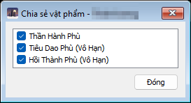
Chia sẻ vật phẩm (nút "…" cạnh Chia sẻ v. phẩm): tick loại phù được xin / cho. Mặc định cả ba.
Tab T. khoản
Đăng nhập tự động, đường dẫn game, mang thiết lập sang máy khác, giấy phép. Hai nút cuối tab mở trang con Tùy chọn game và Liên kết máy.
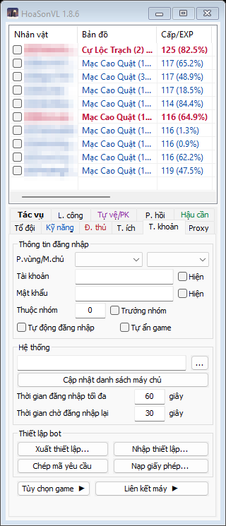
Tab T. khoản.
Khung Thông tin đăng nhập
Của riêng nhân vật đang chọn, không bao giờ bị sao chép sang nhân vật khác.
P.vùng/M.chủPhân vùng và máy chủ. Danh sách lấy từ game bằng nút "Cập nhật danh sách máy chủ" bên dưới.Tài khoản, Mật khẩuTài khoản game của nhân vật này. Cả hai đều bị che, tick Hiện bên cạnh để xem. Mật khẩu được mã hoá theo tài khoản Windows đang dùng, máy khác không đọc được (mang đi: Xuất thiết lập).Thuộc nhóm, Trưởng nhómChia nhân vật thành nhóm (0, 1, 2…). Bấm phím tắt (như Ctrl+P) trong game của trưởng nhóm thì mọi nhân vật được tick trong nhóm cùng làm theo, cả nhân vật cùng nhóm ở các máy liên kết.Tự động đăng nhậpNhân vật được tick mà chưa mở game thì bot tự mở game theo Đường dẫn game và đăng nhập (nhiều nhân vật thì lần lượt, cách nhau 2 giây); bị văng ra màn hình đăng nhập thì tự vào lại. Cột Tác vụ ghi bước đang tới (đang kết nối, tài khoản đúng, chọn nhân vật…). Khi gặp lỗi:
· Game báo "Kết nối máy chủ thất bại", "Hệ thống đang bận", "Server đang bảo trì": bot bấm Trở Lại rồi đăng nhập lại ngay trên game đó, không tắt game. Máy chủ bảo trì thì cột Tác vụ ghi giờ sẽ đăng nhập lại.
· Game "không phản hồi" lúc đang kết nối: bot chờ game tự trả lời, tối đa 3 phút. Quá 3 phút, hoặc 3 phút không thấy màn hình đăng nhập, hoặc game báo lỗi DirectX9 lúc mở: bot tắt game đó và mở game mới.
· Game tự kết nối lại ("Tiến hành kết nối lại sau … giây") quá một phút mà chưa được: bot cho rời trò chơi về màn hình đăng nhập rồi đăng nhập lại.
· Đang trong game mà game treo (không phản hồi) liền 60 giây: bot đóng game đó và đăng nhập lại. Game mất cửa sổ mà vẫn chạy ngầm: bot tắt hẳn.
· Thử 5 lần không vào được thì thôi ("không được sau 5 lần"): xem lại tài khoản, mật khẩu, máy chủ.
· Nhân vật đang chơi ở máy liên kết thì máy này không đăng nhập (cột Tác vụ ghi "đang chạy ở máy …"). Tài khoản đang trong game bằng nhân vật tên khác thì cột Tác vụ báo để sửa tên dòng.
Bỏ tick hoặc Hủy đăng nhập (chuột phải bảng nhân vật) là thôi. Đăng nhập ở menu đó thì tick luôn nhân vật; Hủy đăng nhập (rời trò chơi) / Thoát game thì bỏ tick.Tự ẩn gameNằm cạnh Tự động đăng nhập. Nhân vật được tick vào game xong thì ẩn cửa sổ game. Bấm đúp tên trong bảng để hiện lại.
Khung Hệ thống
Đường dẫn game + "…"Tệp gamecl.exe (hoặc gamecl_proxy.exe…) của nhân vật đang chọn, dùng khi tự đăng nhập. Chọn nhiều nhân vật thì chỉ các nhân vật đã chọn đổi. Nhân vật mới chưa đặt thì lấy của nhân vật ngay trên nó trong bảng.Cập nhật danh sách máy chủĐọc danh sách phân vùng / máy chủ từ thư mục game vào bot, dùng chung cho mọi nhân vật. Làm một lần sau khi đặt đường dẫn.Thời gian đăng nhập tối đaQuá chừng này giây chưa vào được game thì thử lại.Thời gian chờ đăng nhập lạiChờ chừng này giây sau mỗi lần mất kết nối / đăng nhập không được rồi mới đăng nhập lại (chỉ cho chính nhân vật đó; các nhân vật khác nhau luôn đăng nhập cách nhau 2 giây). Game đi qua proxy: bot chờ ít nhất 60 giây.
Khung Thiết lập bot
Xuất thiết lập…Gom thiết lập của mọi nhân vật vào một tệp khoá bằng mật khẩu để mang sang máy hoặc tài khoản Windows khác. Nên xuất định kỳ phòng cài lại Windows, vì thư mục config chỉ mở được trên đúng máy và tài khoản này. Chỉ muốn vài nhân vật: chuột phải bảng nhân vật › Lưu cấu hình đã chọn.Nhập thiết lập…Đọc tệp đã xuất (cần đúng mật khẩu), thay thiết lập hiện có.Chép mã yêu cầuGiấy phép: bản phát hành chỉ điều khiển nhân vật có giấy phép (kèm sẵn một giấy phép chung cho một số bang và mọi nhân vật dưới cấp 60). Nhân vật chưa có thì cột Tác vụ ghi "chưa có giấy phép" hoặc "nhân vật chưa có trong giấy phép" và bot chỉ xem; đang ở bãi mà mất quyền thì bot dùng phù về thành trước. Nút này chép vào bộ nhớ tạm mã của máy này và của các nhân vật đã tick mà bot đã thấy vào game (tick và vào game trước rồi mới chép), để gửi cho người cấp giấy phép; hộp hiện ra kèm các giấy phép đang có. Giấy phép có hạn thì cột Tác vụ báo trước vài ngày khi sắp hết; giấy phép giới hạn số nhân vật thì báo "đã đủ … nhân vật" khi vượt.Nạp giấy phép…Chọn tệp .lic nhận được: bot kiểm chữ ký rồi giữ trong thư mục giayphep cạnh HoaSonVL, báo hạn tới ngày nào (hoặc không hạn).
Hai nút cuối tab
Tùy chọn game ▶Mở trang con Tùy chọn game: độ phân giải, tối ưu bộ nhớ, âm thanh, hiện / tinh giản người chơi, giới hạn FPS.Liên kết máy ▶Mở trang con Liên kết máy: nối bot của máy này với bot ở máy khác.
Trang con: Tùy chọn game
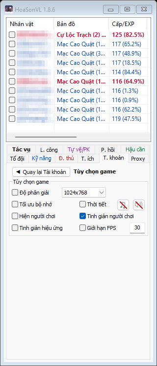
T. khoản › Tùy chọn game.
Chỉnh cách game vẽ, cho nhân vật được tick, để chạy nhiều game nhẹ máy. Đây chỉ là hiển thị phía máy mình; bot vẫn thấy mọi người chơi. Các ô Hiện người chơi, Tinh giản người chơi / hiệu ứng, Thời tiết giống ô trong Lựa Chọn Trò Chơi của game: bạn đổi trong game (ví dụ Alt+F ẩn / hiện người chơi) thì ô ở đây đổi theo.
Độ phân giảiTick rồi chọn cỡ cửa sổ game (800x600 tới 2048x1080).Tối ưu bộ nhớCửa sổ game đang ẩn thì game không vẽ gì và trả bớt RAM (lúc ẩn và mỗi 60 giây, giữ khoảng 64 MB phần đang dùng). Hiện lại thì như thường. Tắt bot thì game đang ẩn vẫn nghỉ: mở bot, bấm đúp tên nhân vật để hiện. Game đang được xem từ máy liên kết thì không nghỉ. Nên bật khi chạy nhiều game.Thời tiết, ♫, 🔊Thời tiết, nhạc và âm thanh của game. Hai nút ♫ và 🔊 bấm để bật / tắt, gạch đỏ là tắt. Mặc định tắt cả ba.Hiện người chơiVẽ người chơi khác. Tắt để nhẹ máy khi đông người; bot vẫn thấy họ. Mặc định tắt.Tinh giản người chơiVẽ người chơi khác đơn giản. Mặc định bật.Tinh giản hiệu ứngVẽ hiệu ứng kỹ năng đơn giản. Mặc định tắt.Giới hạn FPSGame vẽ tối đa chừng này khung hình mỗi giây, hiện hay ẩn. 30 là đủ cho bot; không ảnh hưởng tốc độ đánh hay tốc độ game.
Trang con: Liên kết máy
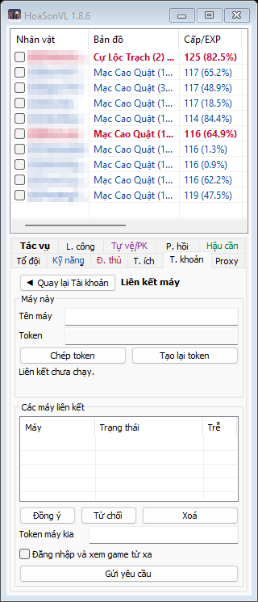
T. khoản › Liên kết máy.
Nối HoaSonVL của máy này với HoaSonVL ở máy khác. Mỗi bot vẫn tự lái game của máy mình như cũ; hai bên gửi nhau trạng thái nhân vật và lệnh. Liên kết rồi thì từ một máy bạn thấy, bật / tắt, sửa thiết lập, đăng nhập và xem, điều khiển game của máy kia; nhóm nhân vật hai máy phối hợp với nhau như cùng một máy.
Các máy phải nối mạng được với nhau: cùng mạng LAN, hoặc cùng một mạng Tailscale (máy ở xa). Lần đầu, Windows có thể hỏi cho HoaSonVL mở cổng mạng: chọn Cho phép. Nên dùng cùng bản HoaSonVL ở các máy.
Khung Máy này
Tên máyTên máy liên kết thấy (mặc định là tên máy tính), cũng là chữ sau "@" ở dòng nhân vật bên kia.TokenMã của máy này, gồm địa chỉ máy (Tailscale / LAN) và một mã bí mật. Đưa cho người dùng máy kia để họ xin liên kết. Chỉ đưa cho máy của mình.Chép tokenChép token vào bộ nhớ tạm.Tạo lại tokenĐổi mã bí mật: mọi liên kết của máy này bị cắt, token cũ không dùng được nữa (hỏi trước). Muốn liên kết lại: đưa token mới cho máy kia.Dòng dưới hai nútMáy này đang nghe ở địa chỉ / cổng nào ("Liên kết chưa chạy." là chưa mở).
Khung Các máy liên kết
Danh sáchMáy đã liên kết, máy mình đã xin, máy đang xin mình. Cột Trạng thái: "đã nối", "mất kết nối", "đã xin, chờ máy kia duyệt", "xin liên kết - chờ bạn duyệt", "đã cắt". Cột Trễ: thời gian đi về giữa hai máy (ms). Thứ tự trong danh sách cũng là thứ tự bot hỏi các máy khi xin đồ nhiệm vụ.Đồng ý, Từ chốiTrả lời máy đang xin liên kết (dòng chọn). Từ chối: máy đó không xin lại được trong 10 phút.XoáXoá liên kết với máy đang chọn (hỏi trước); máy kia được báo và không nối nữa. Muốn nối lại: xin lại bằng token.Token máy kiaDán token của máy cần liên kết vào đây.Đăng nhập và xem game từ xaBật ở máy giữ nhân vật mà bạn hay vào bằng Remote Desktop (RDP). Bình thường tắt RDP là Windows để phiên đó không có màn hình: game mất hình, không mở được game mới (cột Tác vụ ghi "chờ màn hình để mở game (RDP đang ngắt?)"), máy liên kết không xem được. Bật ô này: tắt RDP thì Windows chuyển phiên về màn hình thật của máy rồi khoá máy, game vẫn chạy và vẽ, máy liên kết đăng nhập, xem và điều khiển được. Hỏi quyền quản trị một lần; bỏ tick là gỡ. Đồng ý một máy xin liên kết thì ô này tự bật (Windows hỏi quyền quản trị lúc đó; từ chối thì liên kết vẫn được, ô để trống).Gửi yêu cầuXin liên kết với máy có token ở ô trên; máy kia phải đồng ý.
Liên kết hai máy
Máy A: T. khoản › Liên kết máy ▶ › Chép token, gửi token sang máy B (qua chat, tệp… của chính bạn).
Máy B: dán vào Token máy kia, bấm Gửi yêu cầu. Danh sách ở máy B ghi "đã xin, chờ máy kia duyệt".
Máy A: hộp "Máy … xin liên kết với máy này" hiện ra, chọn Yes (No là từ chối, Cancel để đó, trả lời sau bằng nút Đồng ý / Từ chối). Bot đang ở khay thì không hỏi, yêu cầu nằm trong danh sách.
Hai bên ghi "đã nối". Nhân vật của máy kia hiện trong bảng nhân vật thành dòng "[nhóm]tên @máy".
Dòng "tên @máy" trong bảng nhân vật
TickBật / tắt bot cho nhân vật đó ở máy kia.Chuột phảiMenu riêng: Bật bot, Tắt bot (máy X); Tạm dừng / tiếp tục (như Ctrl+Space); Về thành lưu rương (như Ctrl+R); Đăng nhập, Thoát game (máy X; Thoát game hỏi trước). Máy kia làm rồi báo lại.Các cột, số trong ngàyDo máy kia tính: bản đồ, cấp, máu… như dòng của máy mình. Chọn dòng đó thì tab Tác vụ hiện số tác vụ đã làm trong ngày của nhân vật ấy (NV Mặc Thạch, BOSS, Chiến lệnh…).Sửa thiết lậpChọn dòng "@máy" rồi sửa ở các tab như nhân vật của máy mình: thay đổi được gửi sang và có hiệu lực ở máy kia (máy giữ nhân vật là gốc). Tài khoản, mật khẩu, proxy, đường dẫn game của máy kia không bao giờ được gửi hay bị đổi.Tab Kỹ năngĐọc danh sách kỹ năng của nhân vật từ máy giữ nó (cần bản mới ở cả hai máy).Bấm đúpMở cửa sổ xem game đó (bên dưới).
Nhân vật của máy này (dòng "chưa mở game") mà đang chơi ở máy kia thì dòng đó hiện như dòng của máy kia; tick riêng của máy này được giữ, trả về khi bên kia thoát game. Ngược lại, nhân vật có trong bảng của máy kia mà đang ngoài game ở đó thì menu chuột phải dòng của máy này có Đăng nhập ở máy X (đã chọn): máy kia đăng nhập bằng tài khoản, proxy, game của nó.
Phối hợp giữa các máy
Phím nhóm: trưởng nhóm bấm phím tắt thì nhân vật được tick cùng "Thuộc nhóm" ở máy kia cũng làm theo, như nhóm của chính máy đó (Ctrl+R: về thành của trưởng nhóm; bật / tắt theo trạng thái của trưởng nhóm).
Tổ đội, đổi màu đội: đổi màu đội khi Tự đồ sát, đổi phe, mượn và trả đội trưởng với nhân vật ở máy kia đi qua liên kết, không cần chat.
Theo sau: acc key ở máy kia khuất tầm nhìn thì vị trí của nó được gửi nhanh qua liên kết để nhân vật theo sau bám kịp.
Chia sẻ đồ nhiệm vụ (Chia sẻ v. phẩm NV, tab T. ích): nhân vật thiếu món nhiệm vụ mà máy mình không ai có thì bot hỏi lần lượt các máy liên kết theo thứ tự trong danh sách; máy có nhân vật dư món thì hai nhân vật gặp nhau giao như cùng máy. Máy kia chỉ đưa phần dư sau khi nhân vật của chính nó đã đủ.
Xem game máy liên kết
Bấm đúp dòng "tên @máy": mở một cửa sổ hiện hình game đó ở máy kia, hình mượt, nhẹ đường truyền. Bấm đúp dòng đó lần nữa (hoặc nút X) để đóng. Game ở máy kia đang ẩn vẫn xem được; game đang thu nhỏ thì không vẽ, cửa sổ xem báo để mở cửa sổ game đó ở máy giữ nhân vật. Game mất hình (sau RDP) thì cửa sổ xem tự cho dựng lại hình.
Điều khiểnBật sẵn khi mở: chuột và phím trong cửa sổ xem được gửi sang game, kể cả phím kết hợp như Ctrl+V (Alt+F4 chỉ đóng cửa sổ xem). Mỗi cú bấm tính như có người chơi ở game đó: bot ở máy kia tạm nhường như khi bạn ngồi tại máy; giữ chuột trái là bạn đang tự lái nhân vật, bot không đi thay. Cửa sổ xem mất focus thì các phím Ctrl / Shift / Alt còn giữ được nhả ra.Menu ở thanh tiêu đềBấm biểu tượng ở góc trái thanh tiêu đề (hoặc chuột phải lên thanh tiêu đề): độ nét Nét (cỡ game, mọi khung), Vừa (75%, mặc định), Nhẹ (50%, 15 khung/giây), Rất nhẹ (50%, 5 khung/giây, khi mạng yếu); cỡ cửa sổ: đúng cỡ game, 75%, 50%; bật / tắt Điều khiển. Khi tắt Điều khiển, chuột phải lên hình cũng mở menu này. Độ nét và cỡ vừa chọn được dùng cho cửa sổ xem mở sau (tới khi tắt bot).Thanh tiêu đềTên nhân vật @ máy, cỡ hình, số khung / giây, KB/s đang nhận, độ nét đang chọn, có đang điều khiển không.
Muốn xem được cả khi đã tắt RDP ở máy giữ nhân vật: bật "Đăng nhập và xem game từ xa" ở máy đó (ở trên).
Tab Proxy
Mỗi game đi internet qua một proxy riêng ngay bên trong game, không cần chương trình proxy ngoài. Trước đây là trang con của Tài khoản, nay là tab riêng.
Tab Proxy.
Proxy phải có trước khi đăng nhập: bot gắn proxy vào game của nhân vật được tick, và vào game bot tự mở để đăng nhập, ngay khi thấy game. Mọi kết nối của game đều đi qua proxy, cả trang web game tự mở. Proxy hỏng thì game mất kết nối chứ không bao giờ đi thẳng. Game đã vào trò chơi mà mới tick: proxy dùng cho các kết nối từ lúc đó, kết nối đang có giữ nguyên. Game đã nhận proxy thì giữ nó; bot chỉ gỡ khi chính bạn bỏ (ô Nhân vật chọn "Không dùng proxy", Hủy gán proxy ở bảng nhân vật, hoặc xoá proxy đó khỏi danh sách: game đi thẳng từ lần kết nối sau).
Khung Danh sách proxy
Danh sáchChung mọi nhân vật. Chọn một dòng để sửa ở các ô bên dưới, + thêm mới (các ô trống ra để gõ, rồi bấm Lưu), − xoá. Cột Game: số game đang đi qua proxy đó. Bỏ tick một dòng: Tự gán không chia proxy đó cho game nào nữa (game đang dùng vẫn dùng).Địa chỉ, Port, LoạiMáy chủ proxy, cổng, SOCKS5 hoặc HTTP. Ô Địa chỉ dán được cả chuỗi dạng host:port:user:pass, user:pass@host:port hoặc socks5:// / http://…, bot tự tách.Xác thực (user / pass), User, PassProxy cần đăng nhập.Lưu, CheckLưu vào dòng đang chọn (không chọn thì thêm mới). Check: thử kết nối qua proxy, báo sống / chết và thời gian.
Khung Gán proxy
Tự gán proxy, Client/proxyGame mới mở được gán vào proxy đang có ít game nhất, mỗi proxy tối đa chừng này game (mặc định 8; 0 là không giới hạn).Nhân vậtGán tay proxy cho nhân vật đang chọn ở bảng (chọn nhiều cũng được). Bị khoá khi Tự gán đang bật. Game đã đăng nhập thì có hiệu lực từ lần đăng nhập sau.Dòng dưới cùngTình trạng proxy của nhân vật đang chọn: đang gắn, chưa gắn (chưa tick), proxy nào và có ổn không. "⚠ CHỒNG PROXY" là một chương trình proxy ngoài (như Proxifier) cũng đang điều hướng game này: tắt luật của chương trình đó cho game, hoặc chọn "Không dùng proxy" ở đây.
Nhặt vật phẩm & lọc đồ
Cửa sổ mở từ nút "…" cạnh ô "Nhặt v. phẩm" ở tab Tác vụ (khung Chung); ô đó bật / tắt việc nhặt khi luyện công, Auto PK… Đây là chỗ quyết định nhặt gì và giữ lại trang bị nào, riêng cho từng nhân vật (tên trên thanh tiêu đề). Sửa xong bấm Lưu (lưu rồi đóng); Bỏ qua là đóng mà không lưu.
Nhặt vật phẩm (bảng luật mặc định của bot mới cài). Bên trái trên: nhặt gì. Bên trái dưới và bên phải: trang bị phải đạt thuộc tính gì mới giữ.
Bên trái trên: nhặt gì
Ưu tiên nhặtNhặt ngay khi đánh chết một con, trước khi đánh con kế. Bỏ tick: chỉ nhặt khi quanh đó không còn quái.Không nhặt đồ người khácBỏ qua đồ rơi còn thuộc quyền người chơi khác.Phạm viChỉ nhặt đồ cách nhân vật trong bán kính này (pixel game; mặc định 600).LoạiTick loại đồ được nhặt: Nhặt tất cả, hoặc từng loại (Ngân lượng = tiền, Đạo cụ = đồ không phải trang bị, Kiếm, Đao… tới Dây chuyền, Nhẫn).Vật phẩm đenMón không bao giờ nhặt dù thuộc loại được tick (đúng tên, dòng đang tick). Bot mới cài có sẵn Xích Hà Đơn, các lệnh bài, nguyên khoáng / nguyên thạch. Thêm: gõ tên ở ô trên (hoặc mở hộp để chọn trong các món đang rơi quanh nhân vật) rồi bấm +. − xoá dòng đang chọn, Mới xoá hết, Lưu… / Đọc… lưu ra tệp / đọc từ tệp (cho nhân vật khác dùng chung).
Bên phải: Lọc trang bị (luật đơn)
Áp dụng cho trang bị trong túi đạo cụ, trừ đồ vừa tháo ra và đồ bot tự lấy ra; cũng xét đồ rèn ra, đồ mở từ rương Đấu Trường, đồ nhặt khi làm nhiệm vụ. Mỗi dòng trong bảng là một thuộc tính với Min / Max. Thêm dòng: chọn thuộc tính ở ô thả xuống phía trên, điền Min, Max, bấm +; đang chọn một dòng mà sửa ba ô đó thì dòng đó đổi theo. −, Mới, Lưu… / Đọc… như bên trái (Lưu / Đọc gồm cả các bộ Lọc kết hợp). Không tick cả Lọc trang bị lẫn Lọc kết hợp thì mọi trang bị đều được giữ.
Lọc trang bịGiữ món có ít nhất một dòng đang tick (giá trị trong khoảng Min..Max). Món không có thuộc tính đó thì dòng đó không đạt, kể cả Min 0.Lọc túi hành trangXét cả trang bị trong túi hành trang (Ctrl+V).
Bên trái dưới: Lọc kết hợp
Lọc kết hợp + #Giữ món đạt mọi dòng của một bộ đang dùng. Có 64 bộ (#0…#63) chọn ở ô #, mỗi bộ tối đa 6 dòng (#1…#6): Thuộc tính · Min · Max, ✕ xoá dòng.Dùng bộ nàyBật / tắt bộ đang chọn ở ô #.Khớp thứ tự thuộc tínhCác dòng của bộ phải nằm trên món theo đúng thứ tự từ trên xuống.
Thuộc tính có dấu * ở đầu là thuộc tính bot tự tính từ món, không phải dòng trên món: *Cấp trang bị, *Giới tính nam / nữ, *Thuộc tính ngũ hành Kim…Thổ, *Số dòng, *… số dòng theo loại (Vũ khí <Kiếm>, Nhẫn, <Gộp> Trang sức…: đúng loại đó và số dòng trong khoảng), *Kích thước, các dòng *<Gộp> (cộng nhiều thuộc tính cùng nhóm, vd. <Gộp> Kháng = tổng các kháng), *Trang bị nhiệm vụ (món NV Hằng ngày / Mặc Thạch đang cần, của mình hoặc của nhân vật khác có tick Chia sẻ v. phẩm NV; đứng cùng các dòng khác trong một bộ thì chỉ là nhãn: món đạt các dòng kia được giữ để dành cho nhiệm vụ và chia sẻ được), *N. vụ Mặc Thạch (Cấp >= Min). *Giá bán chỉ dùng khi tìm đồ trên sạp, trong bộ lọc này không món nào đạt.
Hàng cuối
Xử lý trang bị không đạtGiữ lại (để trong túi), Rã (lấy mảnh / huyền tinh) hoặc Vứt bỏ. Không bao giờ rã / vứt: đồ trong Thay đổi trang bị, món Tự mặc đồ sắp mặc, đồ nhiệm vụ (kể cả món nhân vật khác vừa giao để nộp NV), đồ màu (Hoàng Kim…), đồ khoá, ngựa, mặt nạ, đồ hiếm (có dòng thuộc tính rất cao); đồ đã mặc khi bật Khóa trang bị (Hậu cần).
Ví dụ theo bảng mặc định trong ảnh: các dòng tick "Không thể phá hủy", "P. hồi s. lực mỗi nửa giây ≥ 4", "Sát thương vật lý - ngoại công ≥ 50"… là điều kiện đơn, món có một trong các dòng đó là giữ. Lọc kết hợp #0 "C. hóa sát thương thành n. lực ≥ 10" và "*Giới tính nam" và "*<Gộp> Kháng ≥ 15" là món phải có cả ba.
Muốn biết món đã giữ đang nằm ở nhân vật nào: chuột phải bảng nhân vật › Tìm trang bị… (tìm theo tối đa 6 thuộc tính như một bộ Lọc kết hợp) hoặc Tìm vật phẩm… (theo tên).
Phím tắt trong game
Bấm ngay trong cửa sổ game của nhân vật được tick (bấm qua phần mềm điều khiển từ xa cũng được). Bảng phím hiện trong khung chat của game khi bot bắt đầu lái nhân vật, và mỗi lần bấm Shift+F1.
Trưởng nhóm (ô "Thuộc nhóm", "Trưởng nhóm" ở tab T. khoản): bấm phím trên game của trưởng nhóm thì mọi nhân vật được tick cùng nhóm làm theo, cả ở các máy liên kết, trừ các phím ghi "chỉ nhân vật đó". Phím bật / tắt lan theo trạng thái của trưởng nhóm sau khi bấm, không phải mỗi người tự đảo: trưởng nhóm đang luyện công, bấm Ctrl+P thì cả nhóm cùng bật Auto PK.
Phím
Tác dụng
Shift+F1
Hiện bảng phím tắt này trong khung chat của game. Chỉ nhân vật đó.
Ctrl+P
Bật / tắt Auto PK.
Ctrl+F
Bật / tắt Tự đánh (Auto PK).
Ctrl+E
Bật / tắt Tự theo sau.
Ctrl+A
Bật / tắt Tự nhặt vật phẩm.
Ctrl+G
Chỉ khi Auto PK: đi bộ tới boss được báo gần nhất trên bản đồ đang đứng; boss báo ở bản đồ khác thì không đi. Bấm lần nữa để dừng; tới gần, hết boss được báo ở bản đồ này hoặc 10 giây không nhích được thì tự thôi. Chỉ nhân vật đó; nhân vật theo sau tự đi theo.
Ctrl+D
Phím chuyển nhanh: bật đồ sát; bấm lần nữa về chế độ PK (không về thẳng luyện công). Cả nhóm theo chế độ của trưởng nhóm sau khi bấm. Không giữ gì: "Tự chuyển về LC", "PK theo đ. trưởng" vẫn chạy như thường sau đó.
Ctrl+N
Bật / tắt Bỏ quái thường (Auto PK).
Ctrl+O
Bật / tắt Bỏ qua boss.
Ctrl+W
Bật / tắt Không đuổi theo.
Ctrl+B
Bật / tắt Bỏ qua Bang Hội.
Ctrl+X
Mở túi thuốc máu ngay, ở mọi bản đồ.
Alt+X
Rút tiền từ xa: rút từ rương số tiền ở ô Rút tiền (tab Hậu cần); bấm mấy lần rút mấy lần. Chỉ ở khu phi chiến đấu. Chỉ nhân vật đó.
Ctrl+R
Lưu rương gần nhất (khu phi chiến đấu). Trưởng nhóm: cả nhóm về thành của trưởng nhóm rồi lưu.
Ctrl+Z
Mở rương từ xa. Chỉ nhân vật đó.
Shift+Z
Sửa trang bị ngay (từ xa). Chữ Z hoa vẫn gõ được vào khung chat.
Ctrl+Space
Tạm dừng / chạy tiếp bot. Lúc tạm dừng nhân vật vẫn được tick, bot chỉ bơm máu, mana. Chỉ nhân vật đó, không lan cả nhóm. Tạm dừng rồi chạy tiếp cũng cắt lượt Nghỉ đang chạy.
Ctrl+chuột phải món
Khi rương hoặc túi hành trang đang mở, hoặc đang giao dịch: chuyển món đó và mọi món cùng loại (cùng cấp; trang bị thì cùng phẩm chất) sang nơi cao nhất đang mở khác chỗ của nó: khung giao dịch, rương, rồi túi hành trang, rồi túi đạo cụ. Lúc giao dịch, món ở túi đạo cụ / túi hành trang được đặt vào khung giao dịch từng món, bỏ qua món khóa; khung đầy thì thôi. Ctrl+Click (chuột trái) vẫn chèn link vào chat như game.
Shift+chuột trái món
Khi tác vụ Bán hàng đang tick: định giá món trong túi đạo cụ bằng ô Định Giá của game, hoặc chọn "Không bán" loại đó (xem tác vụ Bán hàng ở tab Tác vụ).
Phím Đánh mặc định
Phím bạn đặt ở tab Kỹ năng: bot ra chiêu đã chọn thay cho phím đó trong game; giữ phím thì ra liên tục.
Ngữ cảnh sử dụng
Vài cách phối hợp các tab cho những việc hay gặp.
Treo luyện công qua đêm
L. công: làm lộ trình 4–6 điểm, Tự đánh 400; nhóm Về thành khi: tick Hết bình máu và Đầy h. trang.
Hậu cần: Mua thuốc (bình máu 5/10, nội lực 5/10), Mua tạp hóa (Thổ địa phù 2/2), Sửa ở thành, Gửi tiền, Khóa trang bị. Bản đồ thiết lập là thành gần bãi; ở 7 thành chọn Rương lưu theo hướng gần đường ra bãi để Thổ địa phù đưa về đúng rương đó.
P. hồi: HP % 40, TĐP HP < 1500, Tự nhồi khi sống < 3 s. Tự vệ/PK: kiểu tự vệ Thổ địa phù, hoặc Đánh trả với "Đánh không nổi: chạy".
Tác vụ: tick Luyện công. Tự vệ/PK, nhóm Nghỉ, chuyển phe: bật Nghỉ … khi bị chết 3 trong 10 để không tốn phù khi bị phá.
Nhiều nhân vật làm nhiệm vụ mỗi ngày
Tác vụ: tick NV Môn phái, NV Hằng ngày, NV Mặc Thạch, Năng động, Nhận thưởng Thẻ tháng, Nhận buff Bang hội; để chúng trên Luyện công (Luyện công chạy suốt, việc nằm dưới nó không tới lượt). Chuột phải NV Hằng ngày / NV Mặc Thạch để chọn Bản đồ nhiệm vụ và Mua trang bị.
T. ích: tick Điểm danh ngày, N. thưởng năng động, Tự đọc thư.
Mùa Chiến Lệnh: tick thêm tác vụ Chiến lệnh, chuột phải để chọn Tống Kim báo danh 3 trận/ngày, Phong Lăng Độ 1 chuyến trọn mỗi ngày, NV Mặc Thạch 10 mỗi ngày (thứ 2 thêm 30) và Nhận thưởng Chiến lệnh. Ngoài mùa Chiến Lệnh tác vụ này không làm gì.
T. ích, nhóm Vật phẩm: bật Chia sẻ v. phẩm và Chia sẻ v. phẩm NV để nhân vật thiếu phù / trang bị xin nhân vật khác (kể cả nhân vật ở máy liên kết).
Chọn nhiều nhân vật bằng Ctrl rồi tick một lần cho tất cả.
Đi Tống Kim, công thành
Tác vụ: nhóm Auto PK tick Auto PK, Tự đánh 1250, Bỏ quái thường, Không đuổi theo (Tống Kim); nhóm Chung tick Nhặt v. phẩm.
Đ. thủ: Bỏ qua Bang Hội, D. sách đen có Cửa Thành và lính gác, Ưu tiên Lượng máu rồi Khoảng cách. Trong chiến trường Tống Kim các ô bỏ qua không dùng: bot đánh mọi kẻ địch phe kia.
Kỹ năng: xếp chiêu mạnh trên cùng với Tác vụ = Auto PK (muốn chiêu riêng cho chiến trường: Tác vụ = Tống Kim), đặt phím Đánh mặc định (ví dụ SPACE) để tự tay nhắm.
P. hồi: dòng HP PK cao (1500), Tự nhồi. Hậu cần: Thay đổi t. bị với bộ PvP. Tự vệ/PK, nhóm PK: Nhận thuốc m. phí khi đi Tống Kim.
Săn boss
Tác vụ: tick Săn boss, đặt trên Luyện công; chuột phải để tick boss cần săn và khung giờ của từng boss (Boss 90 gộp các boss 90; ▲ ▼ đổi ưu tiên). Bot tới bãi trước giờ rồi đánh boss theo danh sách.
Nhân vật yếu chỉ cần điểm Năng động "BOSS": tick Lấy năng động trong hộp đó. Bot đứng cách boss 400–500, không đánh, né người chơi phe địch; game đã tính hôm nay thì thôi đi.
Đ. thủ: Báo boss kênh bang để nhắn toạ độ boss 90 cho cả bang. Xem thêm Săn boss.
Một nhóm theo sau nhân vật chính
Tổ đội: ở mọi nhân vật ghi tên nhân vật chính lên đầu danh sách Tổ đội và Theo sau; nhân vật chính tick Đội trưởng, các nhân vật kia tick Vào tổ đội. Ở ô Giữ k.cách L.công / Giữ k.cách PK, mỗi nhân vật chọn một phía đứng khác nhau (Trái, Phải, Sau…) để không bị đánh chùm.
Tác vụ: nhóm Chung bật Tự theo sau.
Đ. thủ: tick Theo đội trưởng để cả nhóm đánh cùng mục tiêu. Kỹ năng hỗ trợ: buff mục tiêu Cùng tổ đội. Tự vệ/PK: Bảo vệ cừu sát, các nhân vật ghi tên nhau vào danh sách (nút "…").
Nhân vật mới tạo
Tác vụ: chỉ tick Luyện công Tân thủ, chuột phải để chọn Môn phái, tick Tự cộng điểm kỹ năng / tiềm năng với tỉ lệ chia điểm, và Tự mặc đồ theo ngũ hành nếu muốn mặc đồ nhặt được. Không cần làm lộ trình hay danh sách kỹ năng; bot tự chọn bãi theo cấp (cấp 50-60: Lưu Tiên Động rồi Thiên Tâm Động; hệ Hỏa đi Thiên Tâm Động trước).
Nhiều nhân vật mới cùng bãi tự vào chung một đội (ô Lập đội, mời người quanh mình trong hộp đó, khi tab Tổ đội trống). Nhân vật mới ở trong đội mà đội trưởng là nhân vật trong bot thì tự theo sau đội trưởng đó.
Tiền giữ, Ngọc Lộ Hoàn và bình máu đặt ngay trong hộp Luyện công Tân thủ; Hậu cần chỉ cần Khóa trang bị. Sau cấp 60 chuyển sang Luyện công thường với lộ trình riêng.
Chạy nhiều game trên máy yếu
T. khoản › Tùy chọn game ▶: Tối ưu bộ nhớ, bỏ tick Hiện người chơi (hoặc tick Tinh giản người chơi), Tinh giản hiệu ứng, Giới hạn FPS 30. T. khoản: Tự ẩn game (cạnh Tự động đăng nhập); Tối ưu bộ nhớ có tác dụng khi game đang ẩn.
Tab Proxy: mỗi game một proxy nếu máy chủ giới hạn số kết nối cùng địa chỉ; tick Tự gán proxy và đặt Client/proxy để game mới mở tự vào proxy còn ít game nhất.
Bảng nhân vật: bấm đúp thanh tiêu đề sang giao diện rộng (có thêm bản đồ nhỏ); chuột phải bảng → Tùy chọn hiển thị… để bật các cột như CPU/RAM, EXP/giờ.
Nhiều máy, xem / điều khiển game từ máy khác
Máy giữ acc: T. khoản › Liên kết máy ▶, bấm Chép token rồi đưa cho máy kia (chỉ đưa cho máy của mình). Máy kia dán vào ô Token máy kia, bấm Gửi yêu cầu; máy giữ acc bấm Đồng ý (ô Đăng nhập và xem game từ xa tự bật, để vẫn xem được sau khi tắt RDP). Hai máy cần thấy nhau qua mạng LAN hoặc Tailscale.
Nhân vật của máy liên kết hiện trong bảng thành dòng @máy: bấm đúp để xem và điều khiển game đó; chuột phải để bật / tắt bot, đăng nhập, thoát game ở máy kia. Xem thêm Liên kết máy.
Khi có gì không đúng: xem cột Tác vụ trong bảng (bot ghi nó đang kẹt ở bước nào), rê chuột lên ô đang chỉnh để đọc chú thích. Khi báo lỗi: chuột phải bảng nhân vật → Nhật ký, chọn ngày, giờ, nhân vật lúc có lỗi, bấm Xuất... rồi gửi tệp nén trong userdata\nhatky\ (bot vừa bị tắt đột ngột: tick thêm Kèm tệp crash trước khi xuất).